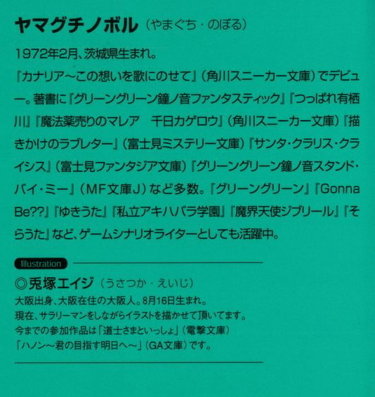

| [ヤマグチノボル] ゼロの使い魔09 | |
| ヤマグチノボル | |
| (2015) | |
|
ゼロの使い魔９〈双月の舞踏会〉
ヤマグチノボル
|

第一章 ルイズの恐怖
才人が目覚めると、隣でルイズが寝息を立てていた。
昨日、再会したばかりの、愛らしいご主人さまの顔であった。
朝の光に照らされたルイズの顔は、まさに神々しいほど美しく、才人をどうにかしそうになった。
別れていたのはほんの一月ほどであったが......、その一ヶ月という時間が、ルイズの可愛らしさにさらに魔法をかけていて、なんだかうーん、と唸ってルイズが寝返りをうっただけで、才人は息が止まりそうになるのであった。
口が半開きになって、ちょっとよだれが垂れていた。
ふがふが、とたまに口元が歪む。
がばっと手を跳ね上げ、ごしごしごし、と派手に鼻をこする。
つまり、美少女台無しである。
しかし......、そんな仕草さえも、何もかも愛おしかった。
離れていた分だけ、すべてにフィルターがかかって見えた。なるほど......、と、才人は感心した。これが、これが......、〝離れてた分だけ〟マジックか。ああいうダメな仕草も美点に変えてしまう、究極の魔法であった。
そうか......
じゃあ昨晩のルイズのアレも、〝離れていた分だけ〟マジックのおかげか！
と、なると......、俺、何やってんのよ......。
才人は昨晩の己を責めた。
昨日は、フィルターかかってたんだよ！
ルイズの目にも、再会フィルターかかってたんダヨ！
だからこんな俺に......、〝同じことして（深いキス）〟だの、〝胸を触ったのに怒らない〟だの......、そんなミラクルが降ってきたんダヨ！
それなのに俺ってば、なんというチャンスを逃してしまったんだろうか。
そんなルイズを見て、夢かどうか確かめる必要にかられた才人は、思わず『これが胸？』なんて言ってしまったのであった。
俺は犬だ。
馬鹿犬だ。
愚かな駄犬だ......。
才人は朝っぱらから苦悩した。
違うぞ才人。
〝犬〟どこの話じゃねえぞ。こんなによだれを垂らしてさえ可愛いルイズに比べたら、貴様モグラだから。
いや......。
才人は首を振った。
俺は、モグラ以下だ。
ギーシュのモグラを見ろ。あいつすごい。穴掘って、俺らのこと助けた。モグラ以下というと......、オケラ？
いや、と才人は再び首を振った。
オケラはすごいんだ。才人は以前、図鑑でそれを知った。あいつら......、虫けらのくせに空飛んだり、土掘ったり、泳いだりと大活躍。いわば地海空、全制覇のすごいやつ。
俺はオケラ以下だ......、虫以下......、 となると......。
ボルボックスだ。
図鑑で見た、ミジンコにさえ食べられてしまう、藻の一種。
そっかァ......、おりゃ、ボルボックスかァ......。と一人納得した才人は、その名前のようにうずくまった。せっかくのチャンスをふいにした自分の空気の読めなさ加減が許せなく、朝から無駄にどんよりとしてしまった。
そこまで落ち込んだあと......、才人は己を叱咤した。
何を言ってるんだ。
もっと自信を持て才人！
持つんだ！
俺は七万を止めた男だよ。それが一人の女の子に、気持ちを確かめる勇気が出ないって？そんなのありえねえだろがよ。
自己暗示張りに、才人は勇気を振り絞った。
ちょうどルイズが寝返りをうったので、才人は平静を装いルイズに尋ねた。
「起きたのか？」
すると、ぴくん！とルイズの身体が跳ね、毛布から顔の上半分が覗いた。その目がなんだか潤んでいる。頬なんか赤い。
才人は震えた。
......これ、出来上がってる？
「な、なあルイズ」
「......なぁに？」
どこまでも無防備な声でルイズが言った。ああルイズ、がんばればこんな可愛い声が出せるんじゃないか。才人は感動した。
ここは一発、きちんと勇気を出さねばいけない。
「お前......、その、あの......、もしかして、俺のこと......」
そこまで尋ねたら、ルイズは唇を噛んで俯いた。
その仕草で、才人の中に言葉が浮かんだ。
フォーリン、ミー？
そんな風に才人が一人、己の想像にもだえ狂っていると......、今度はルイズが決心したように、言葉を搾り出してきた。
その言葉は激しく斜め後方から飛んできて、才人の後頭部を直撃した。
「......ちいちゃいの、きらい？」と、ルイズは言った。
カハァ、と才人は吐息を漏らした。
ああ、ルイズはずっと気にしていたのだ。
才人が昨晩、『これが胸？』と尋ねてしまったことを......。
......ああ、ああ、俺は、なんてことを言ってしまったんだ！
「き、きらいじゃないよ！」
「ほんと？」
「う、うん......」
ルイズはぴょこんと起き上がると、ベッドの上に正座する。
シャツのすそを両手でつかみ、真剣な顔で才人に尋ねた。
「質問を変えるわ。じゃあ大きいのと、ちいちゃいの、どっちが好き？」
才人は額に脂汗が浮かぶのを感じた。正直言うと、大きいのが好きだった。小さいのもそれはそれで、と思うが......、本能は刺激しないのではなかろうか。
それは生物のオスとして当然の結果ナノデス。大きい胸は、それだけ母乳が出ることを示唆しているのデス。ミルクがたっぷり詰まっているのデス。だからしょうがないのデス。そのように、自分の子孫を共に残す対象として、胸が大きい女性を選ぶのはこれ本能であるからして......、俺は悪くないと思うんデス。
そんなバカな屁理屈が頭の中を回る中......。
自分を真剣な目で見つめるルイズが目に飛び込んできた。
桃色がかったブロンド、そして鳶色の瞳......、かたちのいい鼻、珊瑚のような色をした
唇......。それらが織り成す調和。ルイズの可愛らしさは、これまた芸術作品であった。
本能を抑え込むような愛らしさ。胸が小さいことなど、この現実の前には意味をなさないのではないだろうか。いやない。
しかし、それを伝えたところで強情なルイズは納得しないだろう。彼女ははっきりと、胸が大きいのと小さいの、どっちが好きなのか聞いているのだ。
大きいほうが好き。
正直に答えたら、ルイズはそれを自分の全否定と取るだろう。
じゃあ、小さいのが好き、と嘘をつくか？
しかし......、才人には嘘をつき通す自信がなかった。ルイズの目は、犯人を見つめるときの刑事のそれであった。生半可な嘘は通用しない。
でも、でも......。
ここはつき通すのが男である。断じて男なのである。
才人の顔が、ギリギリと引きつり、まるで鬼のような迫力をにじませた。しかしルイズもさるもの。そんな才人の顔を、真っ向から受け止めた。
「どっちが好きなのよ。言いなさいよね」
才人は冷や汗を滝のように流し、ぎちちちちちち、と震えた。
決断のときがきた。
まるで、核ミサイルのボタンを苦悩の果てに押す大統領の心境で、才人は言葉をのどの奥からひねり出した。
「ち、ち、ちちち、小さいほう」
「ほんと？」
殺気に近い気合を宿した目で、ルイズが睨む。
ここで負けてはいけない。才人は硬くこわばった声で告げた。
「ほんとです。始祖ブリミルに誓います」
ブリミルを持ち出し、才人は気合を入れた。
「嘘ついてたら殺すわよ」
声は小さく、冷静なだけに、ルイズの本気が伝わってきた。才人はぶんぶんと首を大きく振った。長い時間が流れた。蚊ぐらいなら楽勝で殺せる重さの空気が、二人の間に流れる。
ルイズはしばらく才人の顔を見ていたが......。わかった、というように頷いた。
「いいわ。信じてあげるわ」
ゆっくりと緊張の空気が解けていく。
緩んだ緊張は、そのままルイズの可愛さへと変化していく。
もじもじとルイズは、毛布の上に指でのの字を書き始めた。
そんな風に恥じらうルイズは神がかったように可愛く、才人の中の不安は一瞬で飛んだ。ルイズは次に、どうしようかと迷うような仕草をしたあと、目をつむった。
でもって、挙を膝の上で握り締め、ん～～、ん～～、と怒ったような唸り声をあげた。
なんだかよくわからないが、これはキスしていいってことなんだろうか？
悩むな才人。
流れに身をゆだねるんだ。
才人は震えながらルイズに唇を近づけた。
肩を抱くとルイズは身体を硬くしたが、まったく抵抗しない。ルイズの甘い香りが鼻の奥に届き......、才人は幸せでいっぱいになった。
唇が触れ合う。
ルイズは怒るどころか、身体をついっと預けてきた。
ああ。
昨晩、『わたしにも同じことして（キスの際に舌を入れてください）』なる発言をかましたルイズは嘘じゃなかった。ここにいた。
あんな深いキスは『再会できたから』でするもんじゃない。
すると導き出される結論は......。
ほ、ほ、惚れてんのか。やっぱ。
才人は夢中になってルイズに唇を押しつけながら思った。
〝惚れてる〟
それは魔法の響きだった。
〝好きな女の子が自分に惚れてる〟
そんな事象の存在が信じられない。これはもう伝説上の怪物に近かった。〝スキナオンナノコガジブンニホレテル〟という、長い名前のドラゴンだ。ああ、口から炎をぼうぼう噴いて、神々を滅ぼした古代龍の名前のようじゃないか......。
ゆっくりと二人は唇を離し......、見つめ合った。
恥ずかしそうに、ルイズは顔を逸らす。
「そんなにじろじろ見ないでよ......。も、もうばか。い、いい、犬のくせに......」
「犬ごめん」
「謝らないでよ。犬......、ばか犬。犬のくせに、ご主人様をそんな目で見るなんてどうにかしてるんだから......」
ルイズは唇を尖らせて、自分がどうにかしてるんじゃないかと思うほど泣きそうな声で言ったので、もう我慢ができなくなった才人は飛びつき、ルイズを押し倒した。
「きゃ！」
首筋にキスをすると、電流にはじかれたようにルイズの身体が跳ねた。
「ごめん。もうだめ。ごめんよ。おれ、もうだめ」
うわごとのようにつぶやきながら、シャツの隙間に手を差し入れようとしたら、ルイズはその手を払いのけた。
「ルイズ......？」
ルイズは、泣きそうな小さな声で、
「明るいじゃない」と言った。
窓の外からは、さんさんと太陽の光が差し込んでいる。
シャツを押さえたまま、ルイズは身じろぎもしない。
「じゃ、じゃあ夜になったら......？」
才人は震えながら聞いた。
「か、かか、神さまと母さまにお伺いを立ててから」
ルイズも震えながら答える。
「どうやって聞くの？」と間抜けな声で才人が尋ねたらルイズは、
「心の中でよ！ もう！ とにかくそんなことわたしに言わせないで！知らない！ばか！ばかばか！」
枕をつかんで、ルイズは才人をポスポスと殴った。
その言葉で、これ以上尋ねることの愚を悟った才人は大きく頷く。
気づくと鼻血が出ていた。
夜の約束を交わしたおかげでかちこちに緊張しきった二人が居間に向かうと、そこにはシエスタと、アニエス、そしてティファニアの姿があった。
「おはようございます」
現れたルイズと才人を見て、シエスタがにっこりと微笑む。なんだか才人はその笑顔をまともに見られなくて、顔をそらす。シエスタがいつまでもこコニコ笑っているのが、ちょっとつらい。
ティファニアは朝ごはんを作っている。
アニエスは、銃と剣の手入れをしていた。
さてと......、とアニエスは腕を組むと、二人に尋ねた。
「昨晩襲ってきた連中は、何者なんだ？」
才人とルイズは顔を見合わせた。アニエスにどう話したものか、と迷ったのだ。
「妙な人形を操っていたな」
「ミョズニトニルン......。あらゆる魔道具を操れる能力を持ってるって......」
とりあえずルイズは正直に答えた。その部分なら話してもかまわぬだろう。
「顔は見たか？」
ルイズと才人は首を振った。暗かったし、相手は深くフードをかぶっていたし、直擾戦ったのは〝スレイプニィル〟と呼ばれていた魔法人形だ。操り手とはほとんど接触がなかったために、わからない。
「その人形の操り手に心当たりはあるのか？」
ルイズは黙ってしまった。〝虚無〟のことを話していいものかどうか一瞬ためらったのだ。
そんなルイズの様子を見て、アニエスは首を振る。
「......ミス・ヴァリエールの系統に関することか。ならわたしが口を挟む問題ではないな。失礼した」
「......知ってるの？」
「まあな。陛下のそばにいれば、イヤでも耳に入ってくる。まあ、心配するな。もちろん他言はしないし、わたしはそういった宮廷で行われる噂や陰謀には興味がない。所詮一介の武人だからな」
剣を磨きながら、アニエスは言った。
「わたしは陛下の〝剣〟に過ぎぬ。お前たちが陛下の味方である限り、わたしはお前たちのために剣を振るうだろう。何が行われているか、敵が何者なのか、そんなことを詮索しようとも思わぬし、また興味もない」
油布できゅっと拭きあげ、アニエスは剣を鞘にしまった。
「まあ、二、三日、休もうじゃないか。疲れているんだろう？」
その言葉で、ルイズと才人は顔を赤らめる。
とにかくティファニアのことを話すにしても......、今日ぐらいは休んでからでも遅くないだろう。話せない大事な用もあるし......、と才人は心の中で頷く。
アニエスの後ろに、シエスタが緊張しながら立っている。お茶を持ってきたのだが、出すタイミングをすっかり逸してしまっていたのだ。三人の視線が自分にうつったことに気づき、シエスタは首を振った。
「わ、わたしにはまったく何がなんやらわからないので、心配しないでください！はい！」
「昨日はよく眠れたか？」
アニエスが、唐突に話題を変えてきた。ニヤニヤと妙な笑いを浮かべている。シエスタの目が、きゅっとすぼまった。
ルイズは顔を真っ赤にすると、怒鳴った。
「ね、眠れたに決まってるじゃないの！」
「そうか。それならいいんだ。うん」
アニエスが妙な笑いを浮かべる。シエスタが、笑顔のまま近づいてきて、才人の足をぎゅっと踏んづけた。
「むにゅったんですか？」
「むにゅったって？」
「わ、わたしの口からは言えません」
「そ、そんなことしてないし！」
でも今日の夜はいよいよ......、なのかもしれない。そう思うと、シエスタの顔がまともに見られない。
「そんなことって何よ。もう、みんないい加減にしてよね！」
ぶつくさ言いながら、ルイズはぎこちなく歩き始めた。見ると、手と足が同時に出ている。
「手と足が同時に出てますよ」
とシエスタ。
「なによ。そういう日だってあるわよ」
「今日だけいっしょに寝ていいって言いましたけど、へんなことしていいなんて言ってませんから」
「だからしてないって言ってるじゃないの！」
二人は、グギギギッギ、と歯をむき出しにして睨み合った。
取っ組みあいでも始まるのか、と思われた瞬間......、ティファニアが、はにかんだ声で一同を呼んだ。
「あの......、朝ごはんができたんだけど......、食べる？」
その声で、緊張が解ける。みんな、お腹がすいていたのだった。
それから才人たちはティファニアの家の庭に出て、のんびりと過ごした。
才人は布を敷いて地面にねっころがった。
雲と同じ高さにある浮遊大陸アルビオンの空は、遥か空の高みまで遮るものが何もない。こんな快晴、久しぶりに見たなぁ、と才人は感慨に浸る。
そばで並んで空を見ていたシエスタがぽつりと言った。
「綺麗な空ですねぇ......。なんだか心が洗われちゃいますね。ごしごし」
真顔でごしごし、なんて言うから才人は噴き出した。
「おかしいですか？」
「いや......」
「変な人に襲われましたけど......、やっと戦争も終わったし、サイトさんにも会えたし、わたしは幸せですわ」
にこっとシエスタは、屈託なく微笑む。つられて、才人も微笑んだ。
なんだか才人はそんなシエスタに罪悪感を感じた。さっきのルイズとのやり取りを思い出す。でも......、好きなんだよ、と思う。
どきどきするんだ。だから......、と心の中で言えないセリフが何度も巡る。
そんな才人の様子に何かを感じたのか......、シエスタは首を振った。
「いいんですよ」
「え？」
「二番目でいいんです。言ったじゃないですか」
「シエスタ......」
「わたし、待ってますから」
才人は黙ってしまった。
なんて言えばいいのかわからなかったのだ。浮かれてた自分がちょっと恥ずかしい。
誤魔化すように、才人は辺りを見回す。
どうやらめいめいに、平和な時間を満喫しているらしい。
アニエスはぼんやりと何か考え事をしながらワインを飲んでいた。ティファニアは、緊張したように拳を握り、椅子に座っている。
ルイズは椅子に腰掛けて、こっちをちらちら見ながらたまにイライラしたように爪を噛んでいた。
不意にシエスタが、皆に尋ねた。
「ねえ皆さん。将来の夢ってあります？」
「ゆめぇ？」
いきなりの話題に、ルイズが眉をひそめた。アニエスもこっちを向く。ティファニアはなぜか、びくっ！と震える。
「そうです。みんなで、未来の話しましょう。なんか大事だと思います。そういうの」
アニエスが笑いながら、
「あっはっは！ 未来か！ そうだな、せいぜい出世して......、故郷の土地を少し買うかな。そうしたら銃士隊を引退して、毎日海の音でも聞いて暮らしてやるか」
次に、言いだしっぺのシエスタが、
「素敵な夢ですわね！ わたしはそうだなぁ......」
それから才人の方を見て、
「好きな人のそばにいられたら、幸せだなって思います。たとえ、それがどんなかたちであれ......。ミス・ヴァリエールは？」
いきなり自分に振られ、ルイズは正直に考え込み、ついで顔を赤らめた。
「......今、思ったことを正直に言ってみてください」
「な、なんであんたにそんなこと言われなくちゃならないのよ」
才人はぼんやりと思った。
将来の夢か......。
そんなこと、想像したことすらなかった。
とりあえず地球に帰ろうと思ってたぐらいである。
それはそれで真っ当なのだが......。
「才人さんの夢はなんですか？」
シエスタが才人の顔を覗き込んだ。
夢か......。
今まで考えたことのない、その言葉に咄嗟に答えられず......、才人はぼんやりと空を仰いだ。
二つの月の光が森を照らし始め......、サウスゴータの森に夜がやってきた。
才人は震えながら、ティファニアの家の廊下の窓から夜空を仰ぎ見る。
生まれてからこのかた、夜がこんなにも待ち遠しかった日はない。
いよいよ、ルイズと自分は結ばれるのだ。
意訳かもだが、今朝がたルイズは確かに〝夜になったらいい〟的なことを言ったのだった。
才人は身体を水で清めると、寝室に赴いた。
ドアをゆっくりと開けると、ルイズは月明かりを背景に、ベッドの上で髪をすいているところだった。
髪をすくルイズは神々しく、この世の美を集めて鋳型にはめ込んだような神聖な輝きを放っていた。二つの月の明かりが、そんな美を後押しする。才人は気おされて、ただただ息を呑むのであった。
ドアのそばで、じっと才人が自分を見つめているのに気づいているのかいないのか......、独り言のようにルイズはつぶやいた。
「どうしたの？」
「いや......」
と才人は首を振った。緊張でのどの奥がカラカラに渇く。
才人が近づくと、ルイズはびくっと身を震わせた。
「怖い？」
思わず才人がそう尋ねると、ルイズは首を振る。
「......わたしね、昔姫さまと約束したの」
「姫さまと約束？」
アンリエッタと、ルイズは何を約来したんだろう。
「そうよ」
ルイズは才人の方を向いた。頬に涙の筋が残っている。
「その......、こういうことになる前は、ちゃんとお互い報告しましょうねって......」
「ルイズ......」とつぶやいて、才人はルイズに近づき、隣に腰掛けた。するとルイズはベッドの上にお座りしたまま俯いて、シーツをきゅっと握り締めた。
「その......、ね？ あの......、ね？」
怯える子猫の目、ルイズは才人を見上げた。
「姫さまとの約束、破っちゃった......」
もうたまらず、才人はルイズに組みついた。
「ルイズ！ ルイズ！」
ルイズは、ベッドの上に横たわった。いつもの白いシャツの胸が、興奮と怯えからか上下している。観念したようにルイズは目をつむり、胸の前でお祈りするように手を組んだ。
「ルイズ、俺......、俺！」
そう絶叫して覆いかぶさろうとした瞬間......。
トントン、とドアがノックされた。
びくん！
才人とルイズは跳ね上がった。
「だ、誰？」
と二人同時に尋ねると、
「わたし......」
と、小さな返事。この家の主、ティファニアの声であった。
才人とルイズは顔を見合わす。才人は慌てて床に飛び降りる。
「どうぞ」とルイズが答えると、ドアががちゃりと開いて流れる金髪の娘が現れた。夜だというのに、大きな帽子をかぶっている。
流れる金髪......、そしてどことなく異国の雰囲気を漂わせる、細身で綺麗な顔。
ルイズの眉が、びくんと跳ねた。
才人と再会できた喜びで忘れていたが......、このティファニア、とんでもない美少女であったのだった。
彼女は、一枚の布を身体に巻きつけるデザインの、ゆったりとした部屋着を身に着けている。手にはワインの壜と杯がのせられたお盆を持っていた。
「その......、よかったらどうぞ。ベッドが変わって、寝付けないかと思って......」
気をつかってワインを持ってきてくれたらしい。
「いいのよ。おかまいなく」
美少女......。
なんだか悪い予感がルイズの胸に渦巻き始める。
ルイズは油断なくティファニアの全身を見つめた。すらりとした、華奢な肢体......。背はルイズより、幾分高い。
おまけに、こんな森にひっそりと暮らしているのに、その立ち居振る舞いには貴族のような高貴さが漂う。いったい何者なんだろうか？
小さな声で、ルイズは才人に尋ねた。
「この子......、なんか気になるわよね。何か知ってる？」
「ちょっと」
「ちょっとって何よ」
「......一回ティファニアに話していいかどうか聞いてから」
なによ、とルイズは思った。
二人の間に秘密？ どゆこと？ と激しく気になった。
さっきまでいい雰囲気だった分、急速にそのことが気になっていく。
ティファニアに尋ねて、許可が下りたらルイズに話す、というのも気に入らない。
ご主人さまが聞いてんのよ。他でもないこのわたしが聞いてるのに、『聞いてから』ってどゆこと？
いったい全体、どんな秘密なんだろう？
頭に浮かんだそんな疑間は......、次のティファニアの行動でどこかに吹っ飛んだ。
彼女は、ワインをテーブルの上に置こうとしたのだが、引きずるようなデザインの衣装に足を引っかけ、派手にぐわごらがっしゃーん、と転んでしまったのである。
「あいたたたた......」
「大丈夫？」
ルイズは慌ててベッドから飛び起き、駆け寄った。ティファニアは、恥ずかしそうに顔を真っ赤にして、
「だ、だいじょぶ！ ごめんなさい......、おもてなしするつもりが、驚かせちゃって......」
と、つぶやきながら割れたワインの壜のかけらを拾い始めた。
そのときである。
ルイズの目に、ありえないマジック・アイテムが飛び込んできたのは。
「......え？」
短く、声にならないうめきを漏らす。いや、何かの見間違いかもしれない。ルイズは目をこすると、再びそのマジック・アイテムを見つめた。
それは深い谷間であった。
ティファニアのゆったりとした部屋着の胸元から覗く、〝大きい〟という形容を死語にしてしまう、凶悪な代物であった。
ルイズは震えながら息を呑んだ。
もう声すら出ない。というか、悔しいとか、そういう次元を超えていた。圧倒的な存在を目にしたとき、人は言葉を失うという。今のルイズがまさにそうであった。ミョズニトニルンと名乗る虚無の使い魔に出会ったときより、その衝撃は大きかった。
世界は広い。ルイズの想像力を遥かに超越している。
ルイズは、はっ！ として才人の方を向いた。
しかし才人はこコこコしたまま、ルイズを見つめている。
「............」
じ～～～、っとそんな才人を、疑わしそうな顔でルイズは見つめたが、才人の表情は変わらない。そのうちにティファニアは、「おやすみなさい」と緊張した声で言い残して部屋を出て行った。
「今の見た？」
尋ねてみた。
「さ、さぁ？ 俺はお前をずっと見つめていたから、なんのことだかわからないな」
才人は、そう言って視線を宙に泳がせている。
......なんだか納得いかない。ルイズは再びベッドに潜り込む。
何よあれ......。
さっきの谷間が、目に焼きついて離れない。
そぉーっと、指をシャツにひっかけ、自分の胸元を覗き込む。
何がいけないのか、わからない。栄養、遺伝......、そうなる理由はどこにも見つからないのに、そこは平原なのである。
わかってはいたが......、あらためて現実を思い知ると、自信がなくなっていく。
わ、わたしだって可愛いもん......。
そう自分に言い聞かせたが、こんなのを見せた日にゃ、やっぱり才人はあのティファニアやメイドを選ぶんじゃないだろうか？
そう思うと、先ほどまでの気持ちがしぼんでいくのであった。
なんとかしなきゃ......、とルイズは思った。
ルイズがベッドに潜り、毛布をかぶったことを確認すると、才人はぷは、と息を漏らした。全身から、冷たい汗が噴き出てくる。
よかった。
切り抜けた。
ティファニアが入ってきた瞬間......、才人は奥義を発動させたのだ。
才人だってバカじゃない。ルイズといっしょにいるときに、ティファニアの最終兵器をちらりとでも見たら、自分がどんな目にあうのかよくわかっていたのだった。
「最終奥義〝目そらし〟発動終了......」
一仕事終えた男の声で、才人は小さく、ルイズに聞こえぬようつぶやく。
再びルイズの隣に潜り込み、肩を叩いてみた。
「......寝る」
ティファニアのあれを見てしまったルイズは、完全に興をそがれたようで......、毛布をひっかぶったまま顔を出そうとしない。
先ほどまで部屋に漂っていた甘い空気がすっかりどこかに消えてしまって......、なんだかうまくいかねえなあと才人はぼやいた。
第二章 森の妖精
翌朝......。
サウスゴータの森の中、朝もやを裂いて一人の少女が現れた。
黒いマントに身を包んだ華奢な身体に、長い桃色の髪が纏わりつく。森の露を吸って、しっとりとした髪をうるさそうにかき上げ、少女は一本の大きな木に背中を預けて寄りかかった。上気した頬が、その髪の色のように薄くピンクに色づいている。
ルイズであった。
大きく深呼吸すると、ルイズは寄りかかった木にそってずるずると地面にしゃがみこみ、膝を抱えた。愛らしい顔を、その膝にうずめ、何事かをぶつぶつとつぶやいた。
「う～～～～～、恥ずかしい。どうしよう。恥ずかしいったらないわ。今になって恥ずかしさがこみ上げてきたわ」
ルイズは頬を染めて、横に置いた革鞄からごそごそと何かを取り出した。それは......、この前作った黒ネコ衣装の一部であった。それを頭につけると、ルイズの頭の上に黒ネコの耳が出現するのである。
頬を染めたまま、ルイズはネコの耳を頭につけた。
「恥ずかしいわ。でも、負けるのはもっとイヤ」
昨晩の才人との会話が蘇る。気になるティファニアの正体......。
それはもしかして......、あの胸に隠されているんだろうか？
ルイズを一発で爆死させることが可能な、火薬が詰まった巨大な樽の中に...
どんな秘密よ。それって。
それが気になってしまって、昨晩は結ばれるどころの話ではなくなってしまった。とにかくルイズは、結ばれる瞬間ぐらい、自分が才人にとっての一番でありたいのである。誰かと比べられてる？と思ったまま、そういうことをしたくないのである。何せ、初めてのことである。慎重にシチュエーションを、自分の心のコンディションを選びたいのであった。
なのに......、あんなものを見てしまっては、平静ではいられない。
そう。
自分のプライドを揺るがす武器......。
胸。
まさに、恐ろしく凶悪な代物であった。ティファニアは、そんなのを二つもくっつけているのである。
でかい。
いや、でかいなんてもんじゃない。
己が持たぬ、究極の武器を彼女は装備しているのだ。
あんなものを見てしまったから、才人はルイズとキスしたときに「これが胸？」などと言ったのかもしれない。つい、ぽろっと、言ってしまったのかもしれない。
あんなものを見てしまえば、ルイズの平原を見てそう思うのは無理はないのかもしれない。
でもそんなの、断固として許せない。
〝わたしだって負けてない〟
自分に言い聞かせる。
そしてその証明が欲しい。
とにかく、ルイズは自信をつける必要を感じていた。
ルイズはぴょこんと立ち上がると、大きく腕を胸の前でバッテンさせ、それから開いた。開くと同時に、息を吐き出す。気を落ち着かせるためにルイズがよくやる深呼吸であった。ルイズの薄い胸が、膨らんで、しぼんで、膨らんで、しぼんでを繰り返す。
怒ったような顔で、ルイズは辺りをきょろきょろと見回す。
「誰もいないわよね」
この辺りには、ウエストウッド村に住む子供たちと、ティファニア以外に人はいない。現れるのは、木の実を集めるリスや、ヒョロヒョロとさえずる小鳥ぐらいのものだ。
「じゃ、いきます」
誰に言うともなくそうつぶやき、がばっとルイズは魔法学院の制服を脱ぎ捨てた。スカートも脱ぎ、下着姿になる。
ルイズは鞄の中から、『自分に自信をつけさせる」作戦のための新兵器を取り出した。
「勝手に持ってきちゃったけど......、代わりにわたしの着替えを置いてきたからいいわよね」
ルイズがぷるぷると震えながら手に握っているのは、なんとシエスタのメイド服であった。居間で寝ているシエスタの枕元から、失敬してきたのである。エプロンはなかったので、居間の椅子にかかっていたティファニアのを持ってきた。
「あのばかはメイドが好き」
目をつむり、思考を整理するような口調でルイズはつぶやいた。
「でもって、ご主人さまも好き、よね。たぶん。きっと。いっつも言ってるし。言ってるだけかもしんないけど......」
ルイズは、うんうんと頷いて、
「その二つを足してみました。きっと、無敵に違いないわ。えっと、耳はおまけ」
黒ネコの耳をいじりながら、言った。
ごそごそとシエスタのメイド服を着込む。
「う......」
胸の部分が大きく余ることに気づき、ルイズは拳を振り締め、かはぁ、と吐息を漏らした。凶悪な火薬樽を持つのは、ティファニアだけではなかったことを思い出す。ティファニアほどではないが、シエスタも割とすごいのであった。
「なにこれ！ 大きすぎよ！ おかしいわよこれっ！あのばかメイド！見栄張るんじゃないわよっ！」
別にシエスタは見栄なんか張ってないのだが、がし！げしっ！とルイズは木を蹴り始めた。しばらく蹴ったあと、俯いたまま首を振る。
「負けちゃだめ。そういう現実に負けちゃだめよルイズ。あ、ああ、あああ、あなたは、だってすごく可愛いじゃない」
自分に言い聞かせるように、何度もつぶやく。
「わたし可愛い。すごく可愛い。ハルケギニアで一番可愛いわ。おまけに〝虚無〟の担い手じゃない。すごい魔法が使えるんだから。わたしすごい。すごいの。だから、気にしなくたっていいの。こんなの」
ルイズはメイド服の胸の部分を、ふにふにといじり始めた。その何もない空間の体積の大きさに気づき、再び木を蹴り始めた。
「なに食べたらこんなになるのよっ！ どうにかしてんじゃないのっ！ねえっ！」
蹴ったショックで、木の上から虫が落ちてきて、ルイズは悲鳴をあげる。
「いやぁああああああ！」
親が見たら泣くような騒ぎっぷりのルイズであった。誰も見てないので、激しく地が出ているのである。はぁはぁ、と荒く息をつき、ルイズは気を取り直すように頭を振った。
「なによ。こんな胸がぶかぶかする現実なんか、わたしの〝虚無〟で一発なんだから」
ルイズはシャツを丸めると、メイド服の胸に押し込んだ。それがルイズの〝虚無〟らしい。ある意味確かに虚無だった。虚しい。
なんだか歪なかたちのバストが出来上がる。だがルイズは満足して、木に向かって才人が来たときの練習を始めた。
今朝、ルイズはベッドからそっと抜け出して、才人を呼び出すためにドアに手紙を挟んできたのである。〝森で待つ〟と、短く書かれた手紙であった。
森のどこで、誰が待っているのかは書いていない。
結局貴族の傲慢さが抜けないルイズは、それぐらいわかるのが当然だと思っている。才人が起きたらその場で言えばいいじゃないかという意見もあるが、ルイズに言わせるならこういうのはかたちが大事なのであった。
「今日はね、大事なことを言おうと思うの。あのね......」
あのね？ というとき、ルイズは上目遣いに木を見つめた。
「いつも助けてくれてありがとう。わたしの代わりに、殿軍まで引き受けてくれて......、なんてお礼を言えばいいのかわかんない。だから、わたし考えたの」
ルイズは指を立てた。
「だからその、いつまでも使い魔扱いはあんまりよね。それに、あんたはわたしのことを好きみたいだし......、わたしも、その、たまにあんたのことを夢に見るの。違うの。好きとか、そういうのじゃないの。なんていうの？未満？」
頬を染めて、ルイズはつぶやく。
「使い魔以上、好き未満。そんな感じ。あんたには、上等よね。だから、あんたをわたし〝召使い〟に昇格してあげる。すごいじゃない！人間扱いしてあげるっていうの。これって、すごいことよ？わたしの優しさに、せいぜい感謝するがいいわ」
ルイズ全力の、〝自分に完全に惚れさせる〟ための演技であった。
惚れさせるために、〝感謝しろ〟と言うあたりいかにもルイズである。
ルイズはスカートのすそを両手でつまみ、軽く唇を噛んだあと、吐き出すようにつぶやいた。
「......そんなわけだから、いいかもって、思ったの。まあ、大事にしてくれるから、いいかもって。好きって言うし。だからその、お願い、とにかくその」
ルイズはメイド服のスカートのすそを、するすると持ち上げて口に咥えた。華奢な足と、白いレースの下着が覗く。
そして本気度百パーの声が、のどから躍り出る。
「......優しくして」
これこそが、ルイズの考えた〝必殺技〟......。
〝虚無〟の呪文さえ上回る、威力絶大の伝説の奥義であった。
たぶんこの光景を才人が見たら即死する。そんな光景であった。
しばしそのままの姿勢のまま、ルイズの身体が固まる。
しかし、よくよく考えてみればここは外。こんな場所で、その、いたすなんて貴族じゃない。仮にも自分は公爵家。せめて屋根ぐらい欲しい。こんな場所でいたした日にはナメられるじゃないか。うう、ナメられては女が下がる。
ルイズはしばし考え込んだあと、指で身体の部分を指差した。
「で、でも、ここと、ここは、ここじゃだめ。だめなの。いけないの」
そういったあと、ルイズの顔がさらに真っ赤に染まる。恥ずかしくなったのである。ついにこらえきれなくなったのか、ルイズは一人芝居をおっぱじめた。
「こ、こら！ なに触ってるのよ！ まだだめって言ってるじゃない！」
しゅたっ！ とルイズは、手を払いのける仕草をした。
「こらっ！ やめなさい！ 言葉が通じないの!?犬！ばか犬ね！」
木を相手に何度も何度も才人の手を払いのける練習をするルイズを、森の小鳥やリスたちが不思議そうに見つめていた。
早起きしたルイズの次に目覚めたのはティファニアであった。自分の部屋のベッドの上で目覚めるなり、彼女は大きく伸びをした。すると、寝巻きの下のいけない果実が、前に突き出る格好になる。ティファニアは、そのばかでかい果実を顔を赤らめて腕で隠す。
それからせつなげに、はふ、とため息を漏らした。
「やっぱりわたしってば、おかしいのかな......」
それはこの数日で芽生えた己の身体に関する疑問であった。腕をはずし、ティファニアは己の胸を見つめた。
「これ、大きすぎない？」
才人を捜しに来た女性客たちと、自分の胸を比べて思う、嘘偽りのない感想であった。ティファニアは、年頃の女性と共に暮らしたことがほとんどない。したがって、自分の胸のサイズを気にしたことはなかった。
でも......。
「ルイズさん、アニエスさん、シエスタさん......、その中で一番大きいシエスタさんだって、わたしの半分ぐらいしかないわ」
そうなのである。アニエスはその半分ぐらいだし、ルイズにいたっては......。
「ぺったんこだわ」
平均値を取ると、アニエスということになる。しかし、そうなると自分の胸は......。
「おかしいのかな......」
ティファニアはしょぼんと肩を落とした。やっぱりわたしはハーフのできそこない、歪な呪いが胸に降りかかってるんだわ、とティファニアは己の生まれをうらんだ。常識があれば、いやハーフ関係ないから、と思えるのだが、ひっそりと子供たちだけを相手に暮らしてきたティファニアには、そういった常識が欠けていた。
朝から泣きそうになってしまったが、ティファニアは首を振った。
「お客さんの前で、こんな顔は見せられないわ。きちんとおもてなししないと......。昨晩はせっかく運んだワインをひっくり返しちゃったし」
気を取り直し、ティファニアはランチのメニューを考え始めた。
「そうだわ。そろそろ桃りんごが熟れる頃ね。あれでパイを作ってあげよう」
桃りんごは、この辺りで探れる、中が桃のように柔らかく瑞々しい果物であった。ジャムやパイにするととてもおいしいのである。
でも、目を覚ました才人たちが、自分がいなくなっていることに気づいたら心配するかもしれない。あの人たち、妙な敵に狙われているみたいだし......。
幼い頃に相当な危険を味わったティファニアは、そういった出来事に耐性がついていた。とにかく自分が襲われることには無頓着なのである。もし襲われても、〝忘却〟の呪文があるから平気、とも達観していた。
とりあえずティファニアは置き手紙を書くことにした。
〝森に果物を採りにいってきます。昼ごはんまでには戻ります〟
目覚めると隣にルイズがいないことに気づき、才人はぷはぁとため息をついた。
「いねえし......」
昨日もチャンスを失ってしまった。
才人はしばし絶望したが、いやいや今日こそ、と顔をあげた。
人生は長い。
二晩ぐらい失敗したからって、問題はない。
それから才人は考えた。
まぁそれはそれで大事なことだが、とりあえずルイズに話すべきことを、今日こそは話さねばならない。
ティファニアのことである。彼女も虚無で、ルイズお前と同じなんだけど、それってどういうことなんだろうね、あとあれ。ハーフエルフ。エルフはお前たちにとって敵みたいだけどティファニアは全然そんなのじゃないから襲ったりいじめたりするなよ？みたいに説明しないと......。
ルイズも彼女の正体が気になっているようだし......。
でも、やっぱりティファニアに話していいかどうか聞いてからじゃねえとまずいよな。
ベッドから出て、ルイズは居間で朝食でもとってるんだろうかと思いながら才人はドアを開けた。
すると、ぱさっと軽い音を立てて、ドアに挟んであった何かが落ちる。
拾い上げると、それは一枚の紙であった。
「なんだこりゃ」
羊皮紙に、黒いインクで何やらしたためである。アルファベッドを崩したような、ハルケギニアの文字が書いてあるが、才人にはもちろん読めない。
首を捻りながら才人は居間に向かった。
しかし、ルイズの姿はない。ティファニアもいなかった。テーブルに立てかけられたデルフリンガーと何やら談笑するアニエスがいた。
のっそりと顔を出した才人に、デルフリンガーが声をかけた。
「よお相棒。おはよう」
「昨晩は、よく眠れたか？」とアニエスが、昨日と同じ妙な笑みを浮かべながら言った。
「眠れませんでした」と、言ったら、別の意味にとったらしいアニエスが含み笑いをした。なにやら大人の想像をしているらしい。
「いや、そういったことはなんもなかったですから」
結局のところ、未遂で終わっている。
アニエスはきょとんとした。
「二日続けて同じベッドで寝てるのにか」
若い女性にそんなことを言われて、才人は顔を赤らめた。
そんな二人の会話にデルフリンガーがちゃちゃを入れる。
「いざとなるとからっきしだね。戦場での勇気が、百分の一でもあればねえ」
「うるせえ」
才人はインテリジェンスソードを睨む。デルフリンガーは、ぷるぷると震えた。どうやら笑っているらしい。イヤな剣だな、と思いながら、才人は尋ねた。
「ルイズたちは？」
「いっしょじゃなかったのか？」
「ルイズは朝起きたらいなかったんですけど......」
「あのメイドも、ティファニアも見てないな」
「そっすか」
シエスタもティファニアもいないとなると......、ではこの手紙をくれたのは誰だろう？
才人はアニエスに尋ねた。
「これなんて書いてあるんですか？ 俺、字が読めなくって......」
アニエスには、自分が異世界から来た人間ということは話してない。でも、こっちの世界では、平民の識字率が高くないようだ。アニエスは驚いた風もなく受け取り、読んでくれた。
「『森で待っている』と書かれているな。他には何も書いてない。名前すら書いてないな」
「なんでぇ、逢引のお誘いじゃねえか」
才人は首をかしげた。
誰だろう？
いったい誰が自分を森に呼び出したのだろう？
真っ先に浮かんだのはルイズで、それは正解だった。しかし......、才人はその答えを先入観から否定した。
ルイズがこんな手紙なんかで俺を呼び出すか？
用事があるなら「話があるんだけど」と直接自分に言うだろう。
だとしたらシエスタ？
それともティファニア？
いったいどっちなんだろう、と考えていると、アニエスが才人の肩を叩いた。
「誰かわからぬが......、早く行ってやれ。たぶん先に行って待ってるんだろう」
「女に恥をかかせたら、あとが怖いぜ」
アニエスとデルフリンガーにそう言われ、才人はちょっと緊張した顔で頷いた。
〝女に恥をかかせたらあとがものすごく怖い〟
ルイズとの付き合いで、そのことは身にしみてよくわかっている。
才人は森へと向かった。
さて、森と一口にいっても、どっちに行けばいいのかわからなかった。何せ、このウエストウッド村ときたら、森を切り開いてつくった集落だ。
どこで待ってるんだよ......、とつぶやいて、才人はとりあえず、サウスゴータの平原へと通じる小道に入っていった。
朝の森はすがすがしかった。きらきらと光る木漏れ日が差す中、十分ほど歩くと......、才人は呼び止められた。
「サイト」
振り向くと、ティファニアが木の陰から出てきた。大きな籠を持っている。いつもの草色のワンピースを身に着けていた。
才人はどきっとした。
自分を呼び出したのは......、このティファニアなのか？
「あの......、手紙書いたのってテファ？」
「うん」
あっさりと、ティファニアは頷いた。
な、なんだって？
自分を森に呼び出したのは、ティファニアだという。
それはどういう意味なんだろうか？
「な、なんで森に......」
「え？ きちんとおもてなししたくって。その......」
おもてなし？
森でおもてなし？ どんなおもてなしなんだ！それは！
才人の中でいけない妄想がぐるぐる回り始めた。こうなったら才人はとまらない。次から次へと、頭の中に素敵なストーリーが生まれ始める。
「一応聞くけど、ど、どど、どんなおもてなしするの？」
ティファニアは、はにかんだように顔を伏せた。
「おいしい果実があるから、食べてほしくって」
才人は愕然とした。
な、なな、なんてぇ比喩だ。
自分の胸を、果実にたとえてやがる。
しかもそれで、俺をおもてなししてくれるって？
ど、どういうこつたよぉ......、そいつはよぉ......、誰かこいつ逮捕してよぉ......、と才人はもう泣きたくなった。
「......お、おいしい果実って？」
「も、桃りんご......」
つまりそれは......、桃の大きさと瑞々しさと、りんごの張りが同居してるってわけか。
それで展開されるおもてなしに、才人はブホ、と素で鼻血を噴いた。
「だ、大丈夫？」
ティファニアが心配そうに才人に駆け寄る。ゆっさゆっさと、草色の服に包まれたティファニアの桃りんごとやらが揺れた。才人は慌てた。いや！まずい！自分は今、ルイズといい関係なのである。それなのにそういうことはいけないのである。
「ちょ、やっぱ、いけないよ！ そんなおもてなしはいけないよ！俺おかしくなるから！お願い！」
むにゅ。
突き出した才人の手が、何かにめり込んだ。
俺......。今こそ俺は俺に問おう。
......こ手のひらの向こうにあるものはなんだ。
なんすか。
柔らかくて、張りがあって、まるで天国の果実のようだけど、これなんだ。
「もしや神さまブリミルさま、これが桃りんご......」
まるで桃源郷にたどり着いたかのような、恍惚とした表情で、才人は手のひらの中の至福を感じた。
いけないと思いつつ、手が離れない。
それはまったく本能だった。
理性の指令に、手が従わないのだ。
恐る恐る目を開くと、ティファニアの顔が、羞恥で真っ赤に染まっている。
「あいう」
ティファニアの顔が、泣きそうに歪んだ。
才人はそこで我に返った。
「ご、ごめん！ ごめんなさい！ わざとじゃないんだ！ほんとうなんだ！」
そのときである。
背中から、朗々と響く呪文が響いてきた。
エオルー・スーヌ・フィル・ヤルンサクサ
振り向くと......、虚無の担い手の少女が、杖を片手に呪文を唱えていた。
「ルイズ」
才人は、わなわなと震えた。
ルイズの口から朗々とこぼれる呪文は、まさに〝虚無〟であった。ルイズの激しい怒りが目に見えぬオーラとなり、才人を圧迫する。ティファニアが怯えてあとじさった。
オス・スーヌ・ウリュ・ル・ラド
「ルイズ、違うんだ。これは......」
才人は必死になって弁解しょうとした。
なんでかルイズはシエスタのメイド服に、ネコ耳をつけている。どうして森の中でそんな格好をしてるんだろう。
いや、今はルイズの格好を気にしている場合じゃない。というかいつまで詠喝してるんだ。〝虚無〟の威力は詠唱の時間に比例する。
おいおい、そんな威力の〝エクスプロージョン〟を俺にぶっ放す気か！
ひぃ、と喚いて才人は逃げ出した。
ベオーズス・ユル・スヴュエル・カノ・オシェラ
才人は森の中へと逃げた。がさごそと木々の隙間を縫い、枝を掻き分け、まるで熊に出くわしたときのように必死に逃げようとした。
しかし、才人の全身を絶望が包む。
追いかけてくるのは、熊より怖い、怒ったルイズである。
逃げきれない。
そんな絶望が足に伝わったのか、才人は二十メイルも進まないうちにすっころんだ。後ろからはルイズが乱暴に茂みを掻き分ける音が聞こえてくる。立とうとしたが、怖くて立てない。腰が抜けたのだった。はひはひ、と這って逃げようとすると、目の前に足が見えた。
見上げると、
「シエスタ？」
何やらきつそうに、ルイズのシャツを着込んでいる。手に籠を持っていた。
「た、助けて......」
才人がつぶやくと、シエスタはう～～ん、と伸びをした。
「助けて！ 今やばいんだ！ すごく！」
そんな才人の慌てぶりを意に介さず、シエスタは言葉を続けた。
「今朝起きたら、わたしの服がなくってですね。代わりにこのシャツが置いてありました」
「シエスタ！ お願い！ 腰が抜けて立てないんだってば！」
「まあ、そんなのはいいんです。で、わたし山菜採りにきたんです。サイトさんたちに、おいしいスープを作ってあげようって思って。そしたら、小道からサイトさんの声が聞こえてきたので、嬉しくなってわたしとんで行ったんです」
「今はそれどころじゃないんだ！ ルイズが！ルイズが！」
後ろからざっしざっしと、ルイズが下生えを踏みしめる音が響いてくる。
「でもびっくり。そしたらサイトさんが、ティファニアさんの胸を握り締めてるじゃありませんか」
シエスタはしゃがみこむと、才人の顔を笑顔で覗き込んだ。
「大きいの触れて、よかったですね♪」
「そ、そんなあれは不可抗力で！」
さっとシエスタは才人から飛びのき、木陰に隠れた。
振り返ると、ルイズが杖を構えていた。その顔が、怒りで蒼白になっている。
「やめて！」
足元に這いつくばって怯えた表情で自分を見つめる使い魔を見つめ、ルイズは思った。
どうしてこのバカはこうなのかしら。
せ、せっかく再会できたっていうのに。
ご、ごご、ご主人さまが、いいって言ってるのに。
その忠誠心に免じて、キス以上を、ちょっと許してやろうかしらなんて思ってたのに。
貴族の権威を振りかざすのを、ちょっと遠慮しようと思ってたのに。
その上わたし......、ちょっと考えを改めたのに。
あんたの帰る方法、これからちゃんと探そうと思ってた矢先だったのに。
これが胸？ とか言い放ったわね。
まあいいわ。わたしも常々疑問に思っていたし。現実を見つめる目は、必要よね。
でも、なにしてんのかしら。
誰のどこ、触ってるのかしら。
メイドに舌。これはまあいいわ。よくないけど、百歩譲っていいわ。百歩じゃ足りないわね。千歩譲るわ。譲りたくないけど、シエスタはわたしを勇気づけてくれたし、一昨日の晩だってあんたの横を譲ってくれたし......、ま、わたしも同じことしたし。
「でもね、あの胸は死刑」
あんな馬鹿でかい胸を握った。それは万死に値するのであった。
ルイズの中を、古代のルーンがうねる。
満ち満ちた魔力が体内をめぐり、小さく分割されて血液に溶け、さらなる高みを目指す触媒とならんとする。
ルイズは才人に向かって、杖を振り下ろした。
「あ！ ああ！ あ！ 痛いのやだ！ おねが...」
巨大な爆発音が才人の絶叫をかき消す。
もうもうと土埃が舞い上がり......、才人はルイズの唱えた〝エクスプロージョン〟で、もみくちゃにされ、ボロボロになって地面に転がった。
「い、痛いよう......」
からくも一命を取り留めた才人がうめく。
「おだまり。で、どうだったの？ 大きかった？誰の何より大きかったの？言ってごらんなさい！言ってごらんなさいよッ！」
げしげしとそんな才人を足で小突いていると、後ろからティファニアの声が聞こえた。
「今の爆発......、何？」
「何って爆発よ！ 見りゃわかるでしょッ！ いいからあんたはあっち行ってなさいよ！」
ルイズが振り向くと、ティファニアが立っていた。ルイズの目がまん丸に見開かれる。
「あなた......」
はっとして、ティファニアは頭をさぐる。爆風で飛んでしまったのか、帽子を落としていた。
「エルフ？」ルイズの声が震えだした。
二人は、まっすぐに見つめあった。
「......なんでエルフが、こんなところにいるの？」
第三章 担い手の出会いと別れ
「なんであんたは説明しないのよ」
ティファニアの家の居間。ルイズは床に横たわってシエスタの治療を受ける才人を、見下ろして言った。
その目には、昨晩まで才人に見せていた、恥じらいとか艶っぽさとか好きビームはかけらも見当たらない。才人を〝犬〟と呼ばわって鞭で叩きまくっていた一年ほど前のそれに戻っている。胸関係の侮辱は、ルイズをそれほどに怒らせてしまっていたのであった。
「だから、テファに聞いてからって思ってたんだっつの！別に黙ってたわけじゃねえよ！」
包帯を巻かれながら怒鳴る才人を、ルイズは鬼の形相で見下ろした。
「はぁーん？ はぁーん？ テファに聞いてから？ご主人さまが第一でしょーがッ！」
ルイズは才人の背中を踏みつけた。ぐりぐりと押しつぶすように、足首を捻る。もが、もが、もがが......、と苦しそうに才人はもがいた。
「ねえあんた。調子に乗ってるでしょ？ 最近、わたしがちょっぴり甘い顔したもんだから、誤解してるでしょ？でもね、思い出した。あんた犬。いや、犬だって芸するから、あんたより、え、えええ、え、えらいわ」
ルイズの声が震えだす。
「あんたは犬以下ッ！ 両生類ッ！ ヤモリよヤモリ！」
シエスタがそんなルイズをたしなめた。
「ミス・ヴァリエール。ヤモリは爬虫類ですわ」
「そうだったわ。じゃああんたはクラゲよ！ クラゲ！」
ルイズはげしげしと才人を踏みつけた。
「さすがにちょっとやりすぎなんじゃ......。サイトさんも反省しているみたいだし......」
「反省？ このクラゲがそんな殊勝なこと考えるわけないじゃない。こういうのはね、身体に覚えさせなきゃだめなの」
ゆらりと、才人は立ち上がった。身体の各部に包帯を巻きつけたままの、情けない格好であるが毅然とルイズに指を突きつけた。
「痛えって言ってんだろうが！ あくどい魔法と足で散々人のこといじめやがって！大体なあ、わざと触ったわけじゃないから！」
才人たちのそんなやり取りを恐ろしげに見つめていたティファニアがその一言で顔を赤らめた。シエスタが、不安げにそんなティファニアを見つめる。強力な〝先住魔法〟を使い、高度な技術を扱うとされているエルフは、人間たちと仲が悪いことで有名である。シエスタは、初めて見るエルフに怯えているようだった。
そんな仕草で、ますますティファニアは顔を伏せた。
「ですよね。やっぱり怖いですよね。わたしはハーフですけど」
シエスタは才人とティファニアを交互に見つめていたが......、決心したように言った。
「た、確かにエルフは怖いですけど......、あなたはサイトさんを助けてくれました。わたしたちに危害を加えるような方じゃないって思います。怖がってごめんなさい」
「ありがとう」
ティファニアはにっこりと笑った。シエスタも笑みを浮かべる。しかしルイズは、胡散臭げにティファニアを見つめた。
「で、なんでエルフが、アルビオンにいるの？」
「それは......」
敵意むき出しのルイズに睨まれ、ティファニアは縮こまった。ルイズはティファニアにつかつかと近づくと、長い耳をつまんだ。くいくいと引っ張る。
「あう。あうあう。あう」
耳を引っ張られたティファニアは、悲しそうな、せつない声をあげた。
「ふん。作り物じゃないみたいね」
「ほ、本物だから......」
「............」
次にルイズは、ティファニアのばかでかい胸を無言でつかんだ。気の弱いティファニアは、自分より背の小さな女の子に完全にのまれ、身をすくませる。
「ひう」
「なにこれ」
「む、胸......」
「嘘」
「嘘じゃないわ。ほんとに胸......」
「はしゃぎすぎよ」
心底憎々しげに、ルイズがつぶやく。
「別にはしゃいでなんか......」
「どう考えたっておかしいわよ。あんた肩とか腕とか腰とかこんなに細いのに、どうして胸だけ酔っ払ってるの？か、かか、身体と釣り合いが取れてないじゃないの。いい加減にしなさいよね。トリステインでこんなんぶらさげて歩いた日にゃ、死刑よあんた」
「そんなこと言われても......」
ルイズの肩が、怖いほどに震え始めた。
「程度ってあるじゃない。程度って。超えりゃあいいってもんじゃないのよ。わたしはこれ、胸って認めないから。ええ、断固、認めないから。〝胸っぽい何か〟って定義することにしたから」
「あう。あうあうあう。あうあう」
だんだんと怒りがおさまらなくなってきたらしい。ルイズはティファニアを怒鳴りつけた。
「謝りなさいよッ！ 謝ってよ！ わたしに謝ってッ！普通こんなのつけてたらごめんなさいじゃないの！ねえッ！」
「ひう」
理不尽に謝れと連呼しながら、がしがしとルイズがもみしだいたので、ティファニアは泣きそうなうめきをあげた。
才人が立ち上がって、ルイズに怒鳴った。
「お前なあ！ テファをいじめるなよ！」
その声に合わせ、デルフリンガーが、ぽつりとつぶやく。
「同じ虚無の担い手だけど、かたっぽさんは胸まで虚無だね」
「足して二で割ったらちょうどいいのに......」と、シエスタまでが感想をつぶやく。
「きぃぇぇぇえええええええええええええッ！」
ルイズは雄たけびをあげると、才人の股間めがけて後ろ回し蹴りを叩き込んだ。
「な、なんで俺が......」
痛みで脂汗を流しながら這いつくばる才人の頭を踏みつけ、ルイズは言った。
「あんたあれ、握ったじゃないの。一生許さないから。さてさて、秘密はエルフってだけじゃないわね。あんたとあの子、他になに隠してるの？言いなさい？いったいあの胸で何したの？どんな冒険したの？怒らないから言ってごらん。殺すけど」
悶絶する才人を足蹴にしながら、ルイズは、はっ！と表情を変えた。デルフリンガーに詰め寄る。
「ねえボロ剣！ あんた今、なんて言ったの？」
「虚無の担い手」
「お互いって言ったじゃない！ どういうこと？」
痛む股間を押さえながら、のっそりと才人が立ち上がった。ティファニアを見つめると、彼女は頷いた。才人は真面目な顔になると、ルイズに告げた。
「このテファも......、お前と同じ、虚無の担い手なんだよ」
ティファニアがルイズにすべてを話し終えた頃には、お昼を過ぎていた。
夜になってから話したいとティファニアは言ったのだが、ルイズがどうしてもというので折れたのである。
訥々と、話しにくそうにティファニアは語った。
エルフである自分の母は、アルビオン王の弟である大公の妾だったこと。財務監督官でもあった父は、王家の秘宝を管理していたこと。ある日、その王家の秘宝の一つである指輪をはめ、同じく秘宝であったオルゴールのふたをあけたら、自分の他には誰にも聞こえないメロディが聞こえてきたこと。
エルフを妾にしていたことが、アルビオン王にばれ、騎士隊を差し向けられたこと。その際に、父と母が命を落としたこと。
そのとき、頭の中に浮かんだ呪文を唱えたら、騎士たちの頭の中から『自分たちを討伐するためにやってきた記憶』が消え、自分は助かったこと......。
「その呪文が〝虚無〟ってわけ？」
ティファニアは、困ったようにデルフリンガーを見つめた。
「そうだよ。〝忘却〟の呪文さ」
「どうして記憶を消すのが〝虚無"になるのよ」
「思い出せ。お前さんの持ってる始祖の祈祷書の序文には、なんて書いてあった？」
「系統魔法は、小さな粒に影響を与える。〝虚無〟はさらなる小さな粒に、影響を与える......」
「そうだ。人の脳みそは、小さな粒の集まりでできてる。記憶ってのは、この小さな粒のつながりさ。系統魔法での〝魅了〟や〝敵意〟、特定の感情を発揮させる呪文は、この粒に干渉して中の流れを変えてるだけなんだ。だが、虚無たる〝忘却〟は違う。さらなる小さき粒に干渉して、記憶の中枢たる〝小さな粒のつながり〟の存在を消しちまうんだ」
「そんなこと言われてもわかんないわよ」
「とにかく、あのハーフエルフの娘っこが唱えた呪文は、紛れもなく〝虚無〟だよ」
ルイズは考え込む仕草をして、
「わかったわ。サイト以外の〝虚無の使い魔〟がいたんだし......、信じるほかなさそうね」
才人が尋ねた。
「その〝虚無〟の担い手とやらは、全部で何人いるんだ？」
「おそらく四人」
「おそらくってなんだよ」
「ブリミルは自分の子供たちと一人の弟子に、それぞれ秘宝を渡したんだ。その〝力〟も含めてな。三人の子供たちは、このハルケギニアに三つの王国を開いた。担い手はその直系の子孫......、だから四人さ」
「トリステイン、アルビオン、ガリア、そしてロマリアね」
「この前襲ってきたやつは、誰だかわからねえのか？みんながみんな、このティファニアみたいにおとなしいってわけじゃねえだろ」
自分たちを襲った〝ミョズニトニルン〟を思い出し、才人は言った。
「わからん。直系の子孫といったって、何千人、何万入っているからね。その中には、乱暴ものもいるだろうし、優しいやつもいる。そのあたりの塩梅はただの人と変わりがねえ」
「とにかく、その四人の担い手やらは一斉に〝虚無〟に目覚めたってわけか」
「そうみてえだね」
「他人事みたいに言うなよ」
才人は、憮然として言った。
「ねえデルフリンガー」
ルイズは、真面目な声で言った。
「なんだね？」
「どうしてわたしたちは、〝虚無〟に目覚めたの？」
あっさりとデルフリンガーは答えた。
「聖地を取り戻すためさ。始祖の祈祷書にも書いてあっただろうが」
ルイズは思い出し、頷いた。
「お前さんたち虚無の担い手四人が、指輪と秘宝と使い魔をそろえ、集まったときに......、ブリミルの遺した力は完成する」
「......ブリミルの遺した力って、なに？」
「覚えてねえ」
「デルフ」
「ほんとだ。ただ......、おれなんかの想像を超えていた。掛け値なしにね。でっかくてわけがわからなくつて......。ぼんやりとそのことだけは覚えてる」
「どうして黙ってたんだ？」
デルフリンガーは珍しく、疲れたような声で言った。
「お前さんたちに、そんなものを背負わせたくなかったんだよ。理想ってのは厄介だ。そいつを他の人問に変えちまう。それが可能な力を手に入れちまえば、なおさらだ。なあルイズ。お前さんだったら、それがよく理解できるんじゃねえのか？」
初めてデルフリンガーに名前で呼ばれたルイズは、唇を噛んだ。
立派な貴族になる、という理想で、自分は心を幾重にも覆っていた。そのおかげで、言いたいことも言えなかった。素直になることもできなかった。今だって満足にできていない。それはもう、自分の一部なのだ。
「過ぎたる力を持たされた〝理想〟ってやつは、存在するだけで周りの人間を不幸にしちまうのさ」
才人も、ルイズも黙った。ティファニアは怯えたような顔で震えている。
「おれは六千年も変わらずにやってきた。退屈だったが、それなりに幸せな時間だったのかもしれねえ。お前さんたちの歴史とやらも同じさ。なにも無理に変えるこたぁねえ。そのままにしておくに、越したことはねえよ」
「............」
「なあ相棒」
「なんだ？」
「お前さんと出会って、いろんなことを思い出した。楽しかったこと、大変だったこと......、つらかったり悲しかったこと。いろんなことだ。感謝してるぜ。相棒だけじゃねえ、虚無の担い手たるルイズ、お前にもだ」
才人は頷いた。ルイズも、頬を染めて頷く。
「おれは、大好きなお前さんたちに、せいぜい平和に過ごして寿命を全うしてほしくなったんだ。お前さんたちといると飽きねえ。おりゃあ、退屈な時間が来るのをせめて先延ばしにしてえんだよ」
才人は、デルフリンガーに優しい声で言った。
「安心しろよ。俺は理想とか聖地とか、どうでもいいもんよ。大事な人たちを守りたいって思うだけだ。もともと無茶すんの、嫌いだし」
ルイズも、きっぱりと言った。
「そんなこといまさらあんたに言われなくたってわかってるわよ。わたし......、決めたの。とりあえず、サイトの帰る方法を見つけてあげようって」
驚いた顔で、才人はルイズの顔を見つめた。
「熱でもある？」
ルイズは才人の股間を無言で蹴り上げた。才人は悶絶して、床に転がる。ルイズはその背に足を乗っけて、演説するように言い放つ。
「わたしのこの力はそのために使うわ。誰の道具にもしない。だからせいぜい安心しなさいよね。剣のくせに臆病なんだから」
デルフリンガーは、安心したように言った。
「そうか。ならおれはもう何も言うことはねえ。よろしくやってくれ」
「優しいのかひどいのかどっちかにしてくれ......、これじゃ対処のしょうがねえ」
才人が情けない声で抗議したが、ルイズはその頭をがしっと踏み潰す。
「あんたあのオバケ胸触ったじゃないの。ひどいのはしょうがないでしょ」
ルイズは腕を組んで才人を見下ろした。ティファニアが怯えた顔でルイズを横目で見たあと、口を開く。
「わたしも......、そんな聖地を取り返すだなんて、考えたことない。というか考えるわけもない。わたしは半分エルフだし......、〝始祖の力〟を受け継いでいたって、そのことは変わらないもの。聖地を取り返すってことは、エルフと争うってことでしょう？そんなことできない。ううん、相手が誰でも争いはイヤ。だから誰にも話さないし......、もしばれたら記憶を奪う。今までそうしてきたみたいに」
はっきりと、ティファニアは言いきった。
黙ってみんなの話を聞いていたシエスタが、頷いた。
「わたしは魔法のことはサッパリわかりませんけど......、なんだか話はまとまったみたいですね。じゃあご飯にしましょう」
デルフリンガーを除いた、その場の全員は顔を見合わせる。確かにおなかがすいていた。
「キッチン借りていいですか？」と明るくシエスタがティファニアに尋ねると、ドアがばん！と開いて、その場にいなかったアニエスがつかつかと入ってきた。彼女はどかっとソファに腰掛けると、一同に告げた。
「さて、休暇は終わりだ。帰るぞ」
「へ？」
才人たちは、顔を見合わせた。
「あと二、三日滞在するはずじゃ......」
「帰国命令が出た」
アニエスは手紙をルイズに差し出す。どうやら先ほどフクロウで届いたらしい。
「先日、お前の生存を伝える報告をしたら、急いで連れて帰ってこいとのことだ」
「姫さまに知らせたんですか？」
「当たり前だ。わたしがここに何しにきたと思ってる。再びミス・ヴァリエールの使い魔になったんだろう？陛下に隠す理由がないだろうが」
「でも、休みたいって......」
「もう十分に休んだ」
とにかくアンリエッタに〝帰ってこい〟と言われたら、ルイズもアニエスも断れない。
「五分やる。出発の準備をしろ」
銃士隊の隊長の顔になって、アニエスが告げる。シエスタはその迫力にのまれ、はいっ！と返事をすると荷物をまとめるためにすっ飛んでいく。
「お別れだね。短い間だったけど、楽しかった」
にこっと笑って、ティファニアが言った。ちょっと考え込んだあと、才人は言った。
「なあテファ」
「なあに？」
「俺たちといっしょに来ないか？」
「......え？」
ルイズがそんな才人の頭を殴ろうとしたが、才人は素早くその手を握る。
「なに口説いてるのよ！」
「別に口説いてるわけじゃねえよ」
才人はぎろっとルイズを睨んで言った。その本気の迫力に、ルイズは押され、ぶすっと頬を膨らませて黙り込む。
「別の世界が見たいって言ってたよな。とりあえず、トリステインに来てみたらどうだ」
ティファニアは、もじもじと身をすくめた。
「来いって簡単に言うけどね、住むところとかどーすんのよ。それに彼女はエルフの血が混じってるのよ。怖がられて、大変よ」
「お前は怖がってねーじゃねえか」
「それは、あんたを助けてくれたし......。悪い人じゃないんでしょ」
才人は頷いた。
「そのとおりだ。だから何か言われたら、俺がかばうよ。怖がるやつらがいたら、俺が説得する」
「サイト！」
「いいからお前は黙ってろ」
再び才人に睨まれ、ルイズは唇を尖らせて下を向いた。
「世界を見たいんだろ？」
ティファニアは、俯いて微笑を浮かべた。
「ありがとう」
「じゃあ用意してくれ。いいよ。待ってるから」
「急いで帰ってこいって、姫さまの命令なのに！」
ルイズがさらに抗議した。その声に、アンリエッタの命令に従わないことに対する非難以外のものが含まれているのだが......、才人は駄々をこねる子供をあしらうように、その顔を押し戻す。
しかし......、ティファニアは動かなかった。
「テファ？」
「やっぱり......、わたし行けない」
「どうして？ 遠慮なんかすんなよ。テファは俺を助けてくれた。今度は俺が手伝う番だ」
ティファニアは、居間から外に通じるドアを指差した。ドアの隙間から、ウエストウッド村の子供たちが心配そうに居間の様子を覗き込んでいる。
「あの子たちを、置いていけないもの」
「あ」
才人は軽く自分を恥じた。夢中になっていて、忘れていた。そういやここにはティファニアだけじゃなく、子供たちも住んでるんだっけ......。年長のティファニアは、彼らの親や姉なのだった。
「そうだね。無理言ったな。ごめん」
「ううん。誘ってくれて嬉しかった。ありがとう」
ティファニアは、何の邪気もこもってない笑みを浮かべた。妖精のように美しいティファニアがそんな笑みを浮かべると、目をそらすことが罪深いことのような気がした。
「......じゃあ、何か俺にできることはないか？そのなんていうか、せめてものお礼っていうかさ」
「いいのよ」
「命まで助けてもらったんだぜ」
「倒れてたら助ける。当然のことをしただけだわ。気にしないで」
そんなティファニアに才人はいろいろとお礼を言おうと思ったが......、出てきたのは、「ありがとう」という一言だけだった。
「......何かあったら知らせてくれ。すぐに飛んでくるからさ」
「あは、ありがとう。わたし、あなたに会えてよかった。じゃ、元気でね」
「テファも元気で。またな」
ティファニアははっとしたような顔になり、大きく頷いた。
「うん。また......、またね」
「ロサイスに迎えのフネがやってくるそうだ」
森の中の小道を歩きながら、アニエスが言ったが......、才人は上の空。ルイズはそんな才人が気に入らずに、ぶつぶつと文句を言った。
「どうしたの？ なにぼやーっとしてるのよ」
「いやぁ......」
「あの半分エルフの娘っ子、綺麗だったなぁ。胸もでかかったなぁ、つて反芻してんだろ？」
背負ったデルフリンガーがちゃちゃを入れる。
ルイズの目が、きゅっとすぼまった。
「違うよ！ やりたいことができないって、可哀想だなって......」
しかしルイズは、ふんっ！ とすねて、つかつかと才人をおいて歩き出す。
完全に機嫌を損ねてしまったようだ。
才人は立ち止まり、二ヶ月はどの時間を過ごしたウエストウッド村を振り返った。生い茂る木立の奥に、ティファニアのこぢんまりとした家が見える。
「世界が見てみたい、かぁ......」とぽつりと才人はつぶやく。
そのとき......、胸の中に想いが膨れた。
昨日、ティファニアの家の庭で、シエスタに『サイトさんの夢ってなんですか？』と、聞かれたときに浮かんだ想い......
自分がやりたいことはなんだろう？
帰る方法を見つけること。
それもある。そして、それと矛盾しているようなもう一つのやりたいこと。
ルイズを守ること。
そばにいるとどきどきしてしまう女の子。
帰る方法を見つけることは、ルイズと別れることでもある。
いずれ自分は、どっちかを選ばなくてはいけないのだ。
そして、その答えはもう出てるんじゃないか？
俺はルイズのそばにいたい。
仲がよくなった人たちのそばにいたい。
帰りたい、と思う気持ちも嘘じゃないが......、別れるのはもっとつらい。
才人は思った。
......夢。
こっちの世界で、もう少し自分ができることをやってみるって......、そういう選択肢はどうだ？
アニエスとの特訓で、多少、自信もついた。
ルイズを守る、それはもちろんだが......、もっともっと、自分というものを試してみたい。俺にはそれができる力があるのだから。
「サイトさーん！ 行きますよー！」
先を歩くシエスタの声が聞こえて......、才人はサウスゴータの平原に通じる道を、トリステインヘと帰るために歩き出した。
ロサイスにつくと、鉄塔のようなかたちの桟橋に、たくさんのフネが停泊していた。ハルケギニア各国から集まった商船や、軍船、様々なフネが舳先を並べて出港のときを待っていた。
その中に、異様な風体の巨船の姿があった。
懐かしのヴュセンタール号である。フネの横に伸びたマストでそれとわかる。鉄塔の頂点から伸びた橋げたに吊り下げられ、ゆらゆらと小さく揺れている巨大な竜母艦を見上げ、才人はため息をついた。
「俺たち、こんな大きなフネに乗っていたのか......」
寄木細工のような船底は、見事な幾何学模様を描いている。甲板の横からタラップが下りて、鉄塔からのびる桟橋につながっていた。
アニエスが、ぽつりとつぶやいた。
「迎えにフネを寄越すと言っていたが......、ヴュセンタール号とはな。驚いた」
才人とルイズは目を丸くした。
「ヘ？ 今、なんとおっしゃいました？」
「ヴュセンタール号が、我々を迎えに来たと言ったんだが」
「こんなでっかい軍艦が？ たかだか数人の俺たちを迎えに？」
才人は呆れた。
「そうだ。それだけ貴様は重要人物ということだ。よかったな」
喜ぶより、才人は怖くなった。ルイズも首をかしげている。
「俺じゃなくって、お前がいるからだろ？」才人はルイズを見て言った。
「違うわ。わたし、姫さまに今回のアルビオン行きを伝えてないもの。それに、わたし一人のために、こんなフネ使うわけないじゃない。動かすだけで、いくらかかると思ってるの？」
じゃあ、俺一人のために？
いったいアンリエッタは何を考えてるんだろう？
タラップをのぼった才人たちを、艦長自らが迎えた。
「ヒリガル・サイトーン殿ですかな？」
なんともめちゃくちゃな名前で呼ばれたが、才人は頷いた。
艦長は才人を胡散臭そうな顔で見つめた。なんでこんな平民風情を運ぶために、このヴュセンタール号が派遣されねばならんのだろう？そんな顔つきである。以前、このフネに乗ったことのある才人であるが、艦長とは顔を合わせていない。したがって才人が何者なのか、艦長はまったく知らないようだった。
そんな得体の知れない相手でも、とにかく命令は命令で、才人は女王陛下の客人であるので、艦長は礼をただして敬礼した。
「本艦を代表して、歓迎申し上げる。あなたがたの航海の安全を保障します」
部屋に案内するためについた士官は、以前才人たちを案内した甲板士官であった。彼は艦長の目の触れないところまで来るとにやっと笑みを浮かべ、
「いったいどんな手柄をあげたんですか？ 国賓待遇じゃありませんか。驚きましたよ」
ああ、と才人はやっと理解した。この厚遇は、七万の敵軍を足止めしたのがその理由だ。でも、士官はそれを知らないようだった。軍でもそれを知っているのは上層部連中だけなんだろう。
「さぁ......、なんなんでしょうね」
とにかく自慢する気にもなれないので、才人はとぼけてみせた。
士官が才人たちを一室に案内する。一行は荷物を置いてくつろいだ。トリステインの港町、ラ・ロシェールにはほぼ半日で到着する予定とのことだった。
「誰もあんたがアルビオン軍を足止めしたなんて信じてなかったのに......」
とルイズがつぶやいたら、アニエスが言った。
「でも、陛下は信じておられたようだな」
「姫さまが？ どうしてお知りになられたのかしら」
「さあな。そこまでは知らん」
アニエスは椅子に身体を沈めると、目をつむった。
才人は、この前の戦いでボロボロになったパーカーを見つめた。森にいるときは気にならなかったが......、女王さまに全うのにこれじゃあ、さすがに失礼なんじゃねえのか？と思い始めた。
「なあルイズ。新しい服欲しいんだけど......」
「はあ？ お金なんかないわよ。今回の旅で全部つかっちゃったわよ。我慢しなさい」
そう言われて才人はしょんぼりと肩を落とした。
あの晩のルイズはやっぱり嘘だったのかぁ......、と、せつなくなった。
「会えた日はあんなに可愛かったのにな......」
思わずぽつりとつぶやいたら、ルイズが才人を睨んだ。顔を真っ赤にしている。ルイズはくるっと振り向き、才人に背中を見せた。
「そ、そりゃご褒美もあげなきゃいけないでしょ！姫さまじゃないけど、それなりの働きをしたんだから報いるところがなけりゃ、ダメじゃないの！」
思いっきり恥ずかしがっている顔で、ルイズは言った。そんな顔を見せたくなかったので、才人に背中を見せたのであった。
ご褒美って......、ひどすぎる。
「ナメんな！ ご褒美なんかいらねえよ！」
「へぇー、そう。あんなに、夢中になってがっついてきたくせに」
ルイズは振り向くと冷笑を浮かべた。
その言い草に、才人はすっかりのぼせあがった。
「誰のどこがご褒美だって？」
ルイズのこめかみが、ピキッ！ と音を立てた。
「ご、ご主人さまの胸つかまえて、なんですって？」
「胸なんて言ってねえだろ」
そこでアニエスが、ルイズと才人の肩を叩いた。
「こらこら。客はお前たちだけじゃないんだぞ」
ここには自分たちだけではなかったことを思い出し、ルイズは顔を赤らめた。
シエスタは唇をきゅっと一文字に結んでことの成り行きを見つめていた。
ふんっ！ と、二人は顔を背けあった。
「まあ、仲がよいほど喧嘩するというしな」
アニエスが笑いながら言った。
ルイズはすねたように窓の外を見つめる才人の横顔を、ちらちらと覗いた。
なんでわたしが怒ることばっかりするのよ、とイライラした。
やっぱり、才人は女の子っぽい子のほうがいいんだろうか？
自分はどう見ても......、魅力的とはいいがたい。
やせっぽちだし、素直じゃないし。
やっぱりシエスタみたい素直な子のほうがいいわよね。
あのティファニアみたいに、凹凸がはっきり......、あれは異常だけど、してるはうがいいわよね。
自分が勝ってる部分って何？
そう考えると、どうにも、〝好かれてる〟という自信が揺らいでしまうのであった。言葉でいくら〝好きだ〟と言われても態度が逆じゃない、嘘ばっかり！と文句を言いたかったが、口には出せなかった。
言ったら、それがほんとのことに......、『口だけで好きと言われている』ことが現実になってしまうような気がして......、ルイズは何も言えずに唇を噛んだ。
第四章 シュヴァリエの称号
王宮の執務室で、アンリエッタは客人の到着を待ちわびていた。
このときのために、今日は午後の予定をすべてキャンセルしたのである。連日激務が続いていたので、枢機卿のマザリーニもそれを案じてか、小言は言わなかった。
財宝はおろか、本当に家具まで売り払ってしまったので、執務室の中はがらんとしている。さすがに机の一個もなければ書類に目を通すこともままならないので、街の古道具屋で買い求めてきた古ぼけたライカ欅の机が置いてあった。
他には書架が一個、部屋の隅にぽつんと置かれるのみ。かぶった王冠がなければ、この部屋を訪れたものはここが女王の執務室とは思わないであろう。
「ラ・ロシェールまで、竜籠をまわしたというのに......」
机に物憂げに肘をつき、アンリエッタはつぶやく。
入り口に控えた衛士に「まだですか？」と尋ねた。アンリエッタは先ほどから、同じ質問を何度も繰り返していた。
「アニエスさまは、いまだお見えになりません」
そのたびに衛士は、同じ答えを繰り返す。
アンリエッタは爪を噛んだ。幼い頃のくせであった。母后より咎められ矯正したのだが、最近また復活してしまったのである。
そのとき、やっと到着したのか......、衛士が呼び出しを告げた。
「銃士隊隊長アニエスさまご一行、ご到着！」
「すぐに通してください」
アンリエッタは立ち上がり、自ら一行を迎え入れた。
「ただいま戻りました」
執務室に入ってきたアニエスは、深く一礼する。背後に控えたルイズと才人を見て、アンリエッタはバラのような笑顔を浮かべた。久しぶりの、心からの笑顔であった。
「お捜しになられていた、ミス・ヴァリエールの使い魔の少年をお連れしました」
緊張した顔で、才人とルイズは一礼する。先に学院へと戻ることになったシエスタとラ・ロシェールで別れ、二人はアニエスと共に竜籠に乗って王宮までやってきたのであった。
がらんとした、何もないさびしい部屋であった。不安そうにルイズは辺りを見回す。
「ああ、家具はすべて売り払ってしまったの。びっくりした？」
「ええ......」
「しかたがないのっあの戦争で、国庫はからっぽになってしまったから......」
アンリエッタは、ルイズの手をとった。
「ルイズ、わたくしはあなたに、まずお詫びをせねばなりません」
「姫さま...」
「将軍たちから......、ええ、アルビオン侵攻軍の指揮をとった将軍たちに査問を行ったのです。彼らはルイズ、あなたに無茶な要求をしたようですね。なんでも、足止めのための殿軍を命じたとか......。申し訳ありません。わたしの所為です。あなたの〝虚無〟を積極的に使用するよう、わたくしが命じたのです」
激しく心を痛めた顔で、アンリエッタはルイズの手をとった。
「申し訳ありません。わたくしはひどい女です。どうしようもなく罪深い女です。わたくしはあなたの力を利用しようとしたのみならず、死地へとおいやるところだったのです」
アンリエッタの言秦を、アニエスが訂正した。
「お言葉ですが、ラ・ヴァリエール殿の〝虚無〟を足止めに利用したのは将軍たちであって、陛下ではありますまい。陛下もまさか、そのような任務に投入されるとはお思いにならなかったでしょう」
アンリエッタは首を振る。
「いえ......、わたくしの責任です。わたくしは、戦争というものを甘く考えていたのです。そのような命令が出されることも、考慮に入れねばなりませんでした。本当に、あなたが生きていてよかった。ごめんなさいルイズ。なんと言って詫びればよいのか......」
感極まったアンリエッタは、ぽろぽろと泣き出した。
「許して、いえ、これはわたくしが口にしていい言葉ではありませんね」
そんなアンリエッタに感じ入ってしまったのか、ルイズも思わず涙声になった。
「姫さま、どうぞお気になさらないでください。このルイズ・フランソワーズ、陛下に一身を捧げております。己の死もそこには含まれています。ですから......」
死地に赴いたのは俺じゃんよ、と才人は思ったが、もちろん口には出さない。抱きしめあって、おいおいと泣きじゃくる二人をちょっと冷めた目で見つめていた。
しばし二人は抱き合っていたが、アンリエッタに知らせねばならないことがあったことを思い出したルイズが、身体を離す。
「姫さま......、恐ろしい事実をお耳に入れねばなりません」
「まあ！ 恐ろしいですって！ どうしましょう！いいえ、聞かねばなりませんわね。わたくしはすべてを耳に入れねばなりません。恐ろしいことも、心をつぶしてしまうような悲しい出来事も......、さあ、話してくださいまし」
ルイズはアンリエッタに語った。
虚無の使い魔と名乗る、シェフィールドという女に襲われたこと。
もう一人の虚無の担い手に出会ったこと......。
「あなたの他にも、虚無の使い手がいるですって？」
ルイズはしばしためらったが、アンリエッタにティファニアのことを語った。ハーフエルフであること。〝虚無〟の呪文を扱えること......。
「なんということ。そのものを早く保護しなければ」
ルイズは首を振った。
「彼女はひっそりと暮らすことを望んでおります。その呪文は身を守るのに適しているし......、できうることなら、かの地でそっとしておいてあげたいと思います」
「そうね......、この地が安全とは限りませんわね......。わかってルイズ。己のものにしたいわけではないの。ただ、わたくしは〝虚無〟を誰の手も触れぬようにしておきたいだけなのです。自分の目的に利することはもう望んでおりません」
アンリエッタは、ルイズの〝虚無〟の存在が、自分に少なからずアルビオン侵攻を決意させたことを知っていた。
「わかっていてなお、力を持つということは、分を超えた野望を抱きやすいものです。わたくしはそのようなことが二度と起こらぬよう、注意するつもりです。また、他人にそれをさせるつもりもありません。ああ、触らぬに越したことはないわね。その方がそう望むのであれば、そっとしておいてさしあげましょう。ほんとうに。ええ......」
ルイズはデルフリンガーから聞いたことをアンリエッタに告げた。
「虚無の担い手ですが......、察するに王家の秘宝の数だけ......、つまり四人いると思いますわ」
「なんということでしょう！ 始祖の力を担うものが四人とは！」
「その中には、明らかにこちらに敵意を抱いてるものもおります」
アンリエッタはルイズをじっと見つめた。
「安心して、ルイズ。わたくしがいる以上、あなたに指一本たりとも触れさせません。......で、あるならば、なおさら必要がありそうですわね」
ルイズは首をかしげた。
「必要？」
アンリエッタは心配するな、というように肩を叩いてルイズから離れると、今度は才人を見つめた。
「使い魔さん。あなたが、ルイズの代わりに、退却する軍を救ってくださったそうね」
「え？」
「アルビオンの将軍から聞いたのです。彼はすべてを語ってくださいました」
「まあ、その、成り行きっていうか...」
「ありがとうございます。何度お礼を言っても足りません。本当にありがとうございます」
王冠をかぶった頭を、アンリエッタは何度も下げた。王冠が上下するところなど、初めて見た才人は慌てた。
「そ、そんな......、頭なんか下げないでいいっすよ。女王さまに頭なんか下げられたら緊張するし......」
「いえ......、あなたは英雄です。祖国を、トリステインを救ってくださった英雄です。あなたがいなければ、我が軍は全滅していたでしょう」
そんな風にアンリエッタに何度も頭を下げられ、才人は恐縮した。同時に、今まで感じたことのない喜びが心の底から湧き上がってきた。
女王さまに認められる、なんて、日本にいたら考えられないことである。
「ささやかですが、感謝の気持ちを用意しました。受け取ってください」
感謝の気持ち？ なんだろう？ また金貨をくれるのか？それとも......。
才人はいつかの安宿の出来事を思い出した。あの夜......、目の前のアンリエッタと自分は唇を重ねたのであった。また、寒いのです、なんて言われてキスされたらどうしよう、ぼくどうしよう、と、才人は期待と照れでもじもじした。
しかしアンリエッタの飛ばしてきた言葉は、才人の想像を超えていた。
「これを受け取ってくださいまし」
「紙？」
果たしてそれは一枚の羊皮紙であった。左上に、トリステイン王家の百合紋花押が鎖座している。なんらかの公式書類なのであろうが、なんと書いてあるのか才人には読めない。横から顔を出して、その紙を覗き込んだルイズが、口と目を大きくあけた。
「近衛騎士隊隊長の任命状ですって！」
「任命状？」
ことの重大きがよく飲み込めてない才人は、きょとんとして問い返す。
「そうです。タルブでの戦に始まり、過去、あなたは非公式に何度もわたくしを助けてくださいました。それだけで、あなたを貴族にする理由は十分だというのに......、こたびはアルビオンでの撤退をも成功に導いてくださいました。あなたが我が国にもたらした貢献は、古今に類を見ないほどのものです。あなたは、歴史に残るべき英雄です」
英雄などとアンリエッタに言われ、才人は激しく照れた。なおもアンリエッタは才人を口説いた。
「英雄には、その働きに見合う名誉を与えねばなりません。これは、あなたと対峙した将軍がわたくしに言った言葉ですが......、わたくしもそう思います。お願い申し上げます、その力をお貸しください。あなたはわたくしにとって......、いや、トリステインにとって必要な人間なのです」
才人はやっと、ＶＩＰ待遇の正体を知った。アニエスを使って捜索したり、フネをわざわざ寄越したのは、才人の労をねぎらうためではない。自分を、トリステインにとって必要な人間だと認めたから、あんな大きな軍艦を迎えに寄越したのだ。
「姫さま、でも騎士隊の隊長ってことはサイトを貴族にするってことでしょう？そんなの認められませんわ！」
ルイズが慌ててまくし立てる。
「どうして彼を貴族にしてはいけないの？ ルイズ」
「だって、サイトは平民だし、というかその......」
「異世界から来た人間ということは知っています。以前、オスマン氏より伺いましたから」
「そんな人間を貴族にしていいんですか？」
「彼に貴族の資格がない、とすれば、王国中の貴族から領地と官職を取り上げなければいけなくなるでしょう。身分を問わず、有能なものは登用する。でなければ、このトリステインに未来はない。わたくしはそのように考えているのです」
アンリエッタは、諭すような口調で言った。
「でも、サイトはわたしの使い魔で......」
「ええ。もちろん、そのことは変わりません。貴族になれば、あなたのお手伝いもやりやすくなるはず。違って？」
「でも、でも、わたしの〝虚無〟は秘密のはずじゃ......」
「もちろん、それは秘匿します。使い魔さんが〝ガンダールヴ〟ということは、わたくしとアニエスと学院長のオスマン氏、および国の上層部しか知りません。彼は今までどおり〝武器の扱いに長けた戦士〟として振る舞ってもらいましょう」
そう言われては、もうルイズは反論できない。
「でも、俺、帰る方法を見つけなくちゃならないし......」と才人が弱々しく言ったが、アンリエッタはなおも食い下がる。
「帰る方法を探すにも、騎士隊長の肩書きは役に立ちますわ」
才人は悩んだ。
......言われてみればそうかもしれない。こっちの世界での身分があがって、困ることは何一つないのだ。貴族との生活が長い才人は、それを実感していた。
「お願いできないでしょうか？ ヒラガサイト殿」
フルネームで呼ばれ、才人は緊張した。別に、貴族という身分、それ自体に興味はない。でも......、〝偉い人間に認められる〟。それはなんだか才人を刺激した。アンリエッタに必要とされることは、ひいてはこの国全体にとって必要とされること。その上、帰る方法探しも楽になる。
ああ、なんだかテストでたまたまいい点を取ったときの心境に似ていた。日ごろ勉強なんか......、なんてバカにしていたのに、いざいい点を取って褒められると嬉しい。その喜びが十倍にも、百倍にも、千倍にもなって才人を包んだ。
でも......、騎士隊長だって？ そんな責任ある立場なんか無理じゃないのか。でも、魅力はあった。出世、昇進......、それは抗いがたい魅力だ。
「......ちょっと、考えさせてください」
ルイズが不安げな顔で才人を見つめた。
アンリエッタはにっこりと笑った。
「わかりました。近衛騎士隊隊長就任は、決心がついてからお願いすることにしましょう。でも、あなたの〝シュヴァリエ〟の称号授与は、すでに各庁にふれを出してしまいました。断られたら、わたくしは恥をかいてしまうことになります」
才人は困ったようにルイズの方を見た。
しかしルイズもなんと答えればいいのかわからぬ様子。
アンリエッタはさらに説得を続けた。
「ルイズの虚無をつけ狙う〝担い手〟が他にもいるならなおさらあなたを今までどおりにしておくわけにはいきません。名実共に 騎 士となり、ルイズを守っていただくことにいたします。それはひいては、わたくしをも守ることになるのです」
そうまで言われてはしかたがない。ルイズは頷いた。
「わかってくれたのね。嬉しいわ、ルイズ」
続いて才人に向けて、アンリエッタは水色の水晶があしらわれた杖を掲げた。
「略式ですが......、この場で〝騎士叙勲〟を行います。ひざまずいてください」
女王の威厳がこもったアンリエッタのその言葉に、才人は思わずひざまずいてしまった。
「目をつむってください」
言われたとおりに目をつむる。緊張が身体に走る。熱い高揚が身体を包んでいた。
まさか、自分が貴族になるなんて......。
そんなこと、まったく想像していなかった。
「頭を伏せて」
才人は頭を下げた。心の準備などまったくできぬままに、儀式は淡々と進んでいく。
ずしりと、なにやら右肩に重いものがのせられた感触があった。
杖であった。アンリエッタの杖が、右肩にのせられているのであった。
祈りの言葉のような、騎士叙勲の詔がアンリエッタの口からこぼれ始めた。
「我、トリステイン女王アンリエッタ、この者に祝福と騎士たる資格を与えんとす。高潔なる魂の持ち主よ、比類なき勇を誇る者よ、並ぶものなき勲し者よ、始祖と我と祖国に、変わらぬ忠誠を誓うか？」
才人は黙ってしまった。参った、そんな忠誠誓えない。大事な儀式に嘘をついたらまずいだろう。才人のそんな気持ちに気づいたのか、アンリエッタはにっこりと微笑んだ。
「いいのです。あなたは他所から来た人間。心にない忠誠は誓えませんわね。譲歩することにいたします」
「姫さま」
思わずルイズが口を開いた。そんな騎士叙勲、聞いたことがない。
「いいのです。頼んでいるのはわたくしなのですから。わたくしは彼に請うて、騎士になっていただくのです」
アンリエッタは再び厳粛な顔になり、言葉を続けた。
「高潔なる魂の持ち主よ、比類なき勇を誇る者よ、並ぶものなき勲し者よ、汝の魂の在り処、その魂が欲するところに忠誠を誓いますか？」
よくわからなかったが......、自分の信じる道を行けとかそういう意味に才人はとった。それならば問題はない。
「......誓います」
「よろしい。始祖ブリミルの御名において、汝を騎 士に叙する」
アンリエッタは、才人の右肩を二度叩き、次に左肩を二度叩いた。
なんともはやあっけなく、才人は騎士に叙される。
そのようにして叙勲式が終わったあと、アンリエッタは才人を立ち上がらせた。
「これからも、この弱い女王に、あなたの持つ力をほんの少しでいいからお貸しくださいますよう。シュヴァリエ・サイト殿」
旅の疲れを癒すために、ルイズと才人は王宮に一泊した。疲れていたので、二人ともぐっすりと眠ってしまった。
二人の去り際にアンリエッタは、残る二国......、ガリアとロマリアの〝虚無の担い手〟についてと、二人に対して危害を加えようとしたのは誰なのか、調査を開始すると告げた。何かわかり次第、二人に報告するとも。
それで才人とルイズはとりあえず安心した。一国がバックにつけばそうそう襲ってはこないだろう。おまけに自分たちがふだん過ごすのは魔法学院。いわばメイジの巣、〝虚無の担い手〟だって、手に余る相手である。
翌朝、トリステイン学院に戻るための竜籠の中、才人はアンリエッタから与えられたマントを、ためつすがめつしていた。黒地のビロードの上、小さく青い百合紋があしらわれ、胸元にトリステインでの〝シュヴァリエ〟の称号を表す、銀色の五芒星が躍っている。それを見た送迎役のアニエスがつぶやく。
「纏ってみろ」
才人は頷くと、そのマントを羽織ってみた。着たっきりのボロボロのパーカーとのギャップが激しい。そろそろ新しい服が欲しい、と思っていたが......、まさかそれがハルケギニアの貴族の象徴になるとは思わなかった。
「なかなか似合うじゃないか」
生徒の出世を喜ぶ教師の声で、アニエスが言った。しかし隣に座ったルイズはそっぽを向いて才人の方を見ようともしない。
「シュヴァリエだってよ。どうしよう」
ちょっとはずんだ声で言っても、ルイズは横を向いたまま。
「なんだよお前、これでいろいろやりやすくなったんだろうが」
ルイズは唇を尖らせ、心の中でつぶやく。
まったく......、なんでシュヴァリエなんかになってるのよ。
わたし言ったじゃない。あんたの帰る方法これから探そうと思ってたって。
肩書きなんかついちゃったら、こっちに未練ができちゃうでしょ？
「とにかく、これでやっと対等だな。ルイズ」
にっこりと笑ってそんなことを言われ、ルイズはかちんときた。
「はぁ？ 誰が対等ですって？ 言っときますけどね、シュヴァリエとラ・ヴァリエール家じゃ、同じ貴族でもトカゲとドラゴンほども違うの。せいぜい虫がトカゲになったぐらいで、調子に乗らないでよね！」
才人はむっとして横を向いた。ルイズは、はぁ......、とため息をついた。
自分の気持ちとは裏腹の言葉だった。
才人の帰る方法を探してあげたい、と思ったはずなのに......、才人がシュヴァリエになると聞いた瞬間、喜びがこみ上げてきたのである。
シュヴァリエが相手だったら、公爵たる自分の父も、多少は仲を認めてくれるかもしれないなんて思ってしまったのである。
ルイズはぶるぶると首を振った。
〝帰る方法を探す〟と決めたのに、わたし嬉しいってどういうこと？
自分の決心を曲げるような気持ちはだめでしょう、と妙に生真面目なルイズは自分が許せなくなったのであった。
そんな風に自分が良心と闘っているというのに、才人はのんきにマントを羽織って喜んでいる。人の気も知らないで......、とルイズは唇を噛んだ。
それとは別に、なんだか不安な気持ちもあった。
シュヴァリエなんかになってしまったら......、今より女の子が寄ってくるのではないか？あのメイドより強力なライバルが現れないとも限らない。
自分はそんなライバルに勝てるんだろうか？
女の子としての魅力〝ゼロ〟の自分に、使い魔を惹きつけておく魅力はあるんだろうか？
そんな不安や、自分を責める気持ちが重なり、さっきのとげとげしい言葉が出てしまったのだが......、もちろん才人はそんなルイズの心には気づかない様子。
まったく少しはわたしの気持ちもわかってよね、とルイズはため息をつくのであった。
竜籠は、一時間ほどの飛行でトリステイン魔法学院へと到着した。
五芒星のかたちに並ぶ塔を見たとき、才人の中に懐かしさがこみ上げてきた。それはルイズも同じだったらしい。ちょっとじんわりした目で、魔法学院を見つめている。
なんとなく、故郷に帰ってきた気分であった。
ここは故郷なんかじゃなく異世界なのに......、とそんな自分の気分を才人は不思議に思う。
竜龍がアウストリの広場に降り立つと、何十人もの生徒が駆け寄ってきた。
なんだなんだと才人が身構えると、先頭にいた金髪の少年がやおら大声で叫んだ。
「サイト！ 生きていたんだな！ よかった！」
ギーシュであった。
「うわっぷ！ な、なんなんだ！」
「昨日、王宮から学院に連絡があったんだよ」
ギーシュの隣で、にこにこしているのは太っちょのマリコルヌであった。
「王宮から？」
「ああ。きみが生きているってね」
「それに......、きみがあの七万のアルビオン軍を止めたっていうじゃないか！」
なぜか興奮しているギーシュがまくしたてる。どうやらアンリエッタはそんなことまできちんと知らせたらしい。
「ここに集まったやつらは、アルビオン戦役に学生士官として参加して、きみのおかげで助かった連中だよ」
生徒たちは、口々に才人に礼を言った。
「ぼくの隊は、フネに乗るのにもたついていたんだ。きみが止めてくれなかったら、どうなっていたことか！」
「きみは命の恩人だよ！ ほんとのこと言うと、もうだめだと思ってた」
数十人もの貴族生徒に取り囲まれ、才人は居心地が悪くなった。なんていうか、こんな風に感謝されるのが照れくさいのである。
ギーシュは、澄ました顔で言った。
「でもぼくは......、信じていたけどね。きみが生きているってね」
「死んだと思って銅像作ってたじゃないの」
人ごみの中からモンモランシーが出てきて言った。
「無事だったのね。よかったじゃない。ルイズが絶対生きてる！って言ったときは、おかしくなったと思ってたけど」
モンモランシーは才人の羽織ったマントに気づいた。それから胸の紋をまじまじと見つめる。
「シュヴァリエの称号じゃないの！」
「なんだってぇ！」
ギーシュも驚いて、マントに縫いつけられた銀色の五芒星を見つめた。
「ほんとだ！ すごいじゃないか！ みんな！見てくれ！サイトがシュヴァリエだぞ！」
おおーッ！ と歓声が沸いた。
「いやぁ、きみはいつかやると思っていたよ。なにせぼくのゴーレムを、追い詰めた男だからね」
「追い詰めた？ あんた負けたじゃないの」
モンモランシーに冷たい声で言われ、ギーシュは首を振った。
「そうかもしれない。あんまりよく覚えてないんだ。あっはっは！」
騒がしい中、才人はとあることを思い出した。
「そうだ！ 先生にお礼と報告しなきゃ！」
そうである。
いまだヴュセンタール号に積みっぱなしのゼロ戦に、秘密兵器をつけてくれたコルベールにお礼を言わねばならない。あの秘密兵器とやらのおかげで、上陸作戦は成功したのであった。それに、自分の出世を報告したかった。コルベールなら、喜んでくれるかもしれない。
「先生は？」
「先生？」
ギーシュがきょとんとした。
「コルベール先生だよ」
集まった生徒たちはいっせいにシーンとしてしまった。
気まずそうにギーシュはモンモランシーと顔を合わせる。
「な、なんだよ」
その雰囲気に妙な匂いを感じ、才人は尋ねた。
「あ、明日にしないかね？ 今日はきみたちも疲れてるだろう」
「そうね。そうしたはうがいいわね」
「なにがあったんだよ」
「せめて明日に......」
才人はギーシュの肩をつかんで叫んだ。
「おい！」
火の塔のそばに建てられたコルベールの研究室で、才人はじっと椅子に座っていた。
身じろぎもしない。
......ただ、時折身体を震わせるのみ。
その後ろに、心配そうな顔のギーシュとモンモランシーが立っている。ふとっちょのマリコルヌの姿も見えた。
主がいなくなって数ヶ月たった研究室にはうっすらと埃がつもっている。中が曇ったビーカーを取り上げて、才人はつぶやいた。
「ほんとなんだな」
モンモランシーが沈んだ声で説明した。
「学院が賊に襲われて......、わたしたちを助けるために立ち向かって......。臆病って言って、わたしたちバカにしてたのに......」
ギーシュが、そつとモンモランシーの肩を抱いた。二人は寄り添うように出て行った。マリコルヌも静かにその後を追った。
才人はじっとビーカーを見つめて、つぶやいた。
「俺......、姫さまにシュヴァリエになれって言われたとき......、嬉しかったんだ。なんかさ、認められた気がして......。昔、日本にいたときはそんなことなかったからさ。えらい人に褒められたり、認められたりしたことなんてなかったから。だから、嬉しかった。先生も、俺のこと認めてくれたよな。真面目に話だって聞いてくれた。俺、それが嬉しかったよ。平民だなんだって、わけもわからずにバカにされてたから......、嬉しかった。先生だけだったよ。この学院の貴族で、俺に対等に接してくれたのは......」
才人の目から、涙が溢れ出た。涙は頬を伝い、顎からぽたぽたと垂れた。
「先生、俺、騎士だってよ。シュヴァリエだってよ。笑っちゃうよな。褒めてよ先生。よくやったって言ってくれよ」
才人は泣きながら、何度もつぶやいた。
「......俺、先生に褒めてほしかったよ」
ルイズは入り口から、そんな才人を見つめていた。近寄ろうとしたが......、思わず足が止まってしまう。
なんと言って、慰めればいいんだろう？
コルベールと才人が、世界とか立場とかを超えて、仲良くしていたことをルイズは思い出す。才人にとって、唯一......、心を許せる人物だったに違いない。
そんな人間を失った才人を、なんと言って慰めればいいんだろう？
ルイズは目をつむった。
コルベールが死んだことと同じぐらい、悲しみに浸る才人を見つめるのが哀しかった。
夜もふけた頃......、才人は部屋に戻ってきた。才人を見ていることに耐えられず、先に部屋に戻っていたルイズは、ベッドから顔を出した。才人は無言で椅子に腰掛ける。
やはり......、先ほどと同じようになんと声をかければいいのかわからず、ルイズはじっと才人の様子を見守っていた。
泣きはらした目をこすり、才人は口を開いた。
独り言のようなつぶやきである。
「......先生、いつか言ってたな。〝私は、火の力でみんなを幸せにしたい〟って。先生は、きっと自分のできることを一生懸命にやろうとしてたんだよな」
「............」
「俺も......、やってみようと思うんだ。もちろん、俺と先生は違う。俺は魔法は使えないし......、〝どんな武器をも扱える〟ってことしかできないけど......。そんな俺にもできることがきっとあると思う。こっちの世界で、何かできることがないのか？って。なんつーかさ、俺には力があるだろ？その力を何かのために......、へんな言い方だけど、〝大きなことのために〟使ってみたくなった」
「............」
「じゃないと、元の世界に帰ったときに後悔するんじゃないかって。もちろんお前のことは守るし、お前が大事にしてる姫さまのことも守る。その上で、何か俺にできることはないか？って。そう思うんだ。......俺、騎士隊の隊長とやらをやってみるよ。いいだろ？」
ルイズは頷いた。
ベッドの中で、ルイズの思考はぐるぐるとあてどなく巡る。
才人のために帰る方法を見つけてあげようと思ったのに......、才人はシュヴァリエになってしまい、ひいては騎士隊長になると言っている。
つまり才人は、こっちの世界で居場所を見つけようとしているのだ。
それは才人にとって幸せなことなんだろうか？
よくわからない。
自分が変わりつつあるように、才人も変わりつつある。
それがいいことなのかどうかよくわからない。
正直才人がシュヴァリエになることには反対だ。身分ある地位というものは、それなりの義務を要求される。それに才人が耐えられるだろうか？
コルベールのことを思い出したのか、才人は再び泣き始めた。
わたしってばダメね、と、ルイズは己の無力さを恥じた。こんなにも才人が悲しんでいるのに......、まともに慰めることすらできやしない。
劣等感が、じんわりとルイズの心を包んでいく。
わたし、〝虚無〟の担い手のくせに......、伝説の系統の持ち主のくせに結局肝心なことは何一つできないんじゃないだろうか？
もしかして、こっちの世界で才人の力になってやれるのは、自分じゃないんじゃないだろうか？
そうまで思ってしまう。
ぶるんぶるんと首を振り、ルイズは顔をあげた。
何自信なくしてんのよ。自分に言い聞かせる。
次はわたしが才人のために何かしてあげる番じゃない。
......でも、どうすればいいのかわからない。
ルイズは夜空を見上げた。
寄り添う二つの月が、自分たちを慰めるかのように、部屋の中に優しい光を送り続けていた。
第五章 水精霊騎士隊
晴れて貴族になった才人であったが、生活は大して変わらなかった。
〝シュヴァリエ〟の称号には年金がついたので、金回りは多少よくなったが、生活がガラッと変わるほどでもない。
トリステインでの一人当たりの生活費は、場所によっても違うが年間百二十エキュー程度である。才人がもらうことになった年金の額は五百エキューほど。平民の一家四人がまぁ、不自由なく暮らせる額だった。領地を持たない、下級貴族の収入はそんなものらしい。
年金は十二等分した額を月初めに財務庁から支給される。したがって才人は毎月〝シュヴァリエ〟の任命状を持って、俸給や年金を受け取ろうとする下級貴族でごった返す、トリスタニアの財務庁のカウンターに並ぶことになった。
住む場所も変わらない。相変わらず、ルイズの部屋である。借りようと思えば学院のあいている部屋も借りられたのだが、ルイズが嫌がった。余計なお金使うことないじゃない、とルイズは言った。
とりあえず、騎士隊に勤務するなら絶対必要だとのルイズの勧めに従い、才人は年金を前借りして馬を一頭買った。
葦毛の、つやつやした毛並みのなかなかの軍馬であった。
いい乗り手は馬よりも馬具に拘る、とのルイズのアドバイスに従い、馬具もそれなりのものを買った。その二つで年金がほとんど吹っ飛んだが、めんどくさいし言うとおりにしないとルイズが怒るので才人はしぶしぶ馬と馬具を買った。
でも、釈然としなかったので、才人は最初、その馬に、〝ルイズ〟と名前をつけた。
「ルイズ。にんじんが欲しかったらヒヒーンと鳴け」
「やあルイズ。今日は遠乗りするけど、しっかり走れよ。モタモタしやがったら、お仕置きだかんね！わかってんの！」
ルイズの口真似をしながらの、そんな小さな鬱憤晴らしはすぐにバレた。
「馬にルイズって名前つけるの禁止」
顔が二倍にはれ上がるぐらいルイズに殴られ、才人は馬の名前を変えた。
そして余ったお金で、ヴュセンタール号から下ろしたゼロ戦を置くために、格納庫......、板と木で雨から守るだけだが、をコルベールの研究室の隣に造った。
コルベール先生のお墓参りをしたいと思ったが、身寄りのなかった先生の遺体はキュルケが実家に連れていってしまったらしい。タバサも同行したとのこと。どうしてキュルケがそんなことをしたのか理由がわからなかったが、とりあえず彼女がゲルマニアから帰ってきたら、お墓の場所を聞いて、いつか訪ねようと才人は思った。
さてさて、いきなり貴族になってしまったルイズの使い魔に対する、魔法学院の人たちの反応は様々であった。
学院長のオスマン氏は喜んでくれた。
こっちの世界に骨をうずめる覚悟ができたようじゃな、と目を細めた。そういうつもりではない、と説明したら、未だにそんなことを言うのは嫁さんがいない所為だと言い出し、貴族になった記念に結婚して身を固めろ、わしの姪はどうじゃな？四度結婚に失敗して四十を過ぎているが器量はそこそこじゃ、と言い出したので、才人は逃げた。
赤土のシュヴルーズ先生は、まぁ、と目を細めて喜んでくれた。
ミス・ヴァリエールもこれで鼻が高いですわね、と、感想を漏らした。では、あなたもここで授業を受けるのですか？受けるならこの本とこの本とあの本を買いなさい高いけど役に立ちますから絶対だから、と教科書として使っている自著を勧めだしたので、才人はまた逃げ出した。
さて、教師で喜んでくれたのはその二人ぐらいなもので、他の先生はあまり快くは思っていないようだった。今までどおり、才人を空気のように無視した。すれ違いざまに、成り上がりが、とつぶやく教師もいた。さすがにむかついたが、一応相手は目上であるので放っておいた。
生徒たちの反応もまた様々であった。
平民上がりとバカにするもの、内心はよく思っていないが、才人の戦果に恐れをなして近づかないもの、無関心のもの......。
やはりすれ違いざまに、平民のくせに、とか、調子に乗りやがって、など、やっかみ半分のつぶやきが聞こえてくることもあった。生徒が柏手ならまあよかろうと、才人はそんなことを言われるたびに決闘を吹っかけた。
まあ、せいぜいギーシュをやっつけた程度だろう、七万を止めたのだってなんかの間違いだよ、と才人をナメていた生徒たちは自分の身体で認識を改めることになった。
ヴェストリの広場で続けざまに三人ほどボコってやると、すれ違いざまに悪口を言われることもなくなった。
才人が貴族になって二週間後......。
朝もやの中、ヴェストリの広場に、一人、一人と生徒が現れた。いずれも、アルビオン戦役に参加した生徒たちである。
彼らは軽く緊張した面持ちで、自分たちの目の前に立った二人を見つめた。
黒いマントに身を包んだギーシュと、才人である。
ギーシュは緊張しているのか、かちんこちんにこわばっていた。
才人はそんなギーシュの肘をつつく。
「な、なんだね？」
「お前、隊長だろうが。ちゃんと挨拶しろよ」
「うう......」
ギーシュはうめいた。
「なんだよ？」
「い、胃が痛い......」
集まった生徒たちが爆笑した。
「......しっかりしてくれよ」ため息混じりに才人が言えば、
「やっぱり、きみが隊長になったほうがよかったんじゃないかね？水精霊騎士隊の隊長なんかぼくには荷が重すぎる」
困った顔でギーシュが言った。
水精霊騎士隊......。
アンリエッタの肝いりでこの近衛隊が作られたのは、才人が魔法学院に帰ってきた日の三日後のこと。決心してすぐに、才人はアンリエッタの元に赴き、騎士隊長に就任することを告げたのである。するとアンリエッタは、騎士隊を新たに作ると言い出し、本当に実
行したのであった。
過去に存在した栄光を纏いし、伝説の近衛隊であった。トリステイン王家と緑の深い水の精霊の名前が冠されたその騎士隊が創設されたのは千年以上前にもさかのぼる。
しかし、数百年前の政紛の際に廃止されて、現在に至っていたのだが......、アンリエッタがその名前を拾い上げたのであった。
「由緒がどうした。気にしたってキリがねーだろ」
才人はギーシュに言った。
ギーシュたちにしてみれば伝説の騎士隊の名前かもしれないが、才人にとっては思い入れも畏怖も憧れもない。
「で、でもな......、さすがにぼくがその、伝説の騎士隊の隊長というのは、うーむ......」
ギーシュは目を白黒させている。
初め才人は、隊長は自分がやろうと思っていたのだが......、『平民上がりがいきなり隊長になってしまっては相当に風当たりが強いぞ』という、アニエスの話を聞いて、断念したのであった。いらぬ嫉妬は買いたくない。
結局ルイズと相談し、とりあえず隊長にはギーシュを押して、当面の間、才人は副隊長でいい、ということになった。
アンリエッタは才人を隊長にしたいようであったが、やっぱり才人ではこっちの世界のルールもよく知らないし、メイジではないし、公にはできないが異世界人である。
ギーシュだってシティオブサウスゴータで手柄をあげ、勲章をもらったし、それに父親は元帥である。人柄と実力と経験はともかく、家柄と戦果は騎士隊隊長としては申し分なかった。
「おいギーシュ！ サイト！ いつになったら訓練を始めるんだよ！毎朝グダグダじゃないか！」
もたもたしている二人に、騎士隊の隊員になった生徒たちが叫んだ。
その面々を見ればわかるように、水精霊騎士隊は魔法学院の生徒たちで構成されていた。アンリエッタは魔法衛士隊、銃士隊に続く三個目の近衛騎士隊を、世間や宮廷の派閥の色がついていない少年たちで固めたのである。
「ほら、お前が、もたもたしてるから文句言われたじゃねーか」
才人がギーシュの頬をつつきながら言った。ギーシュも負けじと言い返す。
「きみがうだうだ文句ばっかりつけるからじゃないのかね！」
「お前が情けないからだろうが！」
「だから隊長はきみがやれって言ったじゃないか！」
二人はギリギリと睨み合う。才人はふっと顔を背けると、小ばかにした調子で言い放った。
「......ったく、そんなだからモンモンに許してもらえねえんだよ」
瞬間、ギーシュはキレた。
「モンモンとのことはきみにかんけぇええええないだろぉおおおおおおおッ！」
半泣きでギーシュは杖を引き抜く。
「おもしれえ。そういやお前にゃ、あんときの腕の借り返してなかったな」
才人は、唸り声をあげてデルフリンガーに手をかけた。左手のルーンが光る。ギーシュは、はっとして杖をしまうと、拳を握り締めた。そういやシュヴァリエ・サイトは七万を止めた男である。武器を握られては勝ち目はない。
「きみは魔法を使えないから、しかたない！ 素手で相手してやる！」
才人はデルフリンガーから手を離すと、ギーシュに飛びかかった。
集まった生徒たちはもう大喜び。
「やっちまえ！ 生意気な平民を懲らしめろ！ギーシュ！」
「おいサイト！ 自意識過剰なギーシュにお灸をすえてやってくれよ！」
派手な取っ組み合いを開始した才人とギーシュを、ちょっと離れたベンチで見守る二人の少女がいた。ルイズとモンモランシーである。なんとなく二人は、毎日こうやって朝食前の才人たちの訓練風景を眺めているのであった。
「まったく。戦争の次は騎士ごっこかぁ、なんて思ってたら、今度はケンカだわよ。男の子って、ホント、どうしようもないのね」
呆れた声でモンモランシーが言った。
ルイズはといえば、さっきから妙にイライラした様子で何かやっている。
「......あんたは、何してんの？」
ちょっと怒ったような声で、ルイズは言った。
「繕い物」
なるほど、見ればそれは才人が着ていたＴシャツであった。穴がいたるところにあいている。ルイズはそれを、なんとか直そうと四苦八苦しているのであった。しかし......、どうにも不器用である。糸が複雑に絡まりあい、穴をふさぐどころか逆に広げている。
「悲惨なことになってない？」
「うっさいわね」
「繕い物なんか、メイドにでも頼めばいいじゃない」
「いいの。わたしがやるの」
ルイズはむ～～、と唸りながら、再びシャツを繕い始めた。
「ルイズ。あんた変わったわね」
「どうしてよ」
「いや......、破れた男の子のシャツを繕ってあげるなんて......、やっぱ恋すると女って変わるのかしら」
ルイズは慌てて顔をあげた。顔が真っ赤になっている。
「こ、恋なんかじゃないもももももん！ ぼ、ボロボロで、か、かか、可哀想だから縫ってあげてるだけだもん！」
「そんなにむきにならないでよ。自分で認めてるようなもんよ」
「ほんとはやりたくないの！ あー、めんどくさい！もう！」
と言いつつ、一生懸命に針を動かした。
ルイズは、騎士隊に夢中な才人をなんとか応援しょうなんて、そんな風に思ったのだ。
でも、自分は騎士隊員じゃないし......、何ができるか考えてみても、よくわからない。とりあえずシャツなど繕ってあげていたのである。
才人ときたらバカみたいに夢中になって、騎士隊の編成と訓練に励み始めた。だもんで授業が終わるとすぐに稽古。クタクタになって部屋に帰ってくるなり、ぐあーと寝てしまう。朝は朝で、このように早朝から騎士見習いの生徒たちを集めて、剣を振り回したり、魔法を一斉に撃つ練習をしたり、組み手をしたりで大忙し。
ルイズのことなどまるっきりほったらかしである。
というかお前の協力などいらん、といった態度である。そりゃまあ、ルイズは騎士隊の一員じゃないのだから、それはしょうがないのかもしれない。
はふぅ、とルイズは小さくため息をついた。
才人をうまく慰めることもできないし、協力もできない。そう思うと、ますます自信が揺らいでいくのであった。
やっぱり自分はダメなんだろうか......、とどんよりしていると、水の担い手の鋭さでルイズのそんなせつなさに気づいたのか、モンモランシーが目を細めた。
「なぁに？ 元気ないじゃないの？ まぁ、恋人が自分をほったらかして他のことに夢中になってたら元気もなくなるわよね」
「はぁ？ なに言ってんのよ。誰が恋人よ。やめてよね！」
「違うの？ じゃあ片想い？もちろん、あんたから、あのサイトへ」
「違うもん！ 絶対違うもん！ 好きなのは向こうだもん！わたしなんとも思ってないもん！」
ルイズは顔を真っ赤にして抗議した。
「いいけどさ、そんなあんたに一つ忠告しておくわ」
「なによ」
「好きだからって、すぐに許しちゃだめよ」
「はぁ！ なに言ってんの！ ばっかじゃないの！」
「あんたみたいなのはね、堅そうに見える分、雰囲気に流されやすいのよ。いいこと？男なんて全員浮気ものなんだから。ちょっといいかなーってついつい許したら、すぐに飽きて他の女のところに行っちゃうんだから」
「ば、ばっかね！ 許すわけないじゃない！ 何を許すっていうのよ！」
ルイズはかつての己の行為を棚にあげて、怒鳴った。
「声が震えてるわよ。あんたって、図星をさされると、すぐに震えるんだから。でもその心配はないかもね。最近相手にされてないんでしょ。まったく欲求不満の女っていやぁね。ちょっとしたことでイライラするんだから」
「はぁ？ 相手にされてないのはあんたじゃない！洪水のモンモランシー。こんなところで何してるの？ギーシュの見張り？あのお間抜けはお間抜けで、たまたま勲章なんかもらっちゃったから、前より注目されるんじゃないの？あんなのでもいいって子、増えたかもね！」
モンモランシーは、ちょんちょんとルイズの肩を叩いた。そして、才人たちのほうを指差す。
見ると、いつの間にか取っ組み合いはおさまっている。
「え？」
ルイズは目を丸くした。
茶色のマントを羽織った何人かの女生徒が、才人に何かを手渡しているところであった。
「注目されてるのは、ギーシュじゃないみたいね」
「どうしたの？」
才人は、目の前の少女に尋ねた。
自分の前で頬を染めているのはいつかギーシュが二股をかけていた少女......、ケティであった。周りには、数人、似たような表情で才人を見つめている女生徒がいる。いずれも茶色のマントを羽織っている......、ということは一年生なのであろうか。
「あ、あの......、これ、読んでいただけますか？」
はにかんだ顔で、茶色の長い髪が愛らしいケティは手紙らしきものを取り出した。
「わ、わたくしも書いたんです」
「ごらんになってくださいまし」
他の女生徒も、次々に才人に手紙を手渡す。
「手紙？」
「あの......、詩を書きましたの。是非とも読んでいただきたいのです」
才人は口をぽかんとあけて、下級生の女の子たちに尋ねた。
「......どうして俺に？」
女の子たちは、顔を見合わせて頷きあう。
「だって、素敵なんですもの。単騎よく七万の軍勢を止められたとか」
「今度、お暇なときでよいので、そのときのお話をしてくださいませんこと？」
後ろからギーシュの恨めしい声がした。
「ぼ、ぼくには？ ぼくには手紙はないのかね！」
「ギーシュさまには、モンモランシーさまがいらっしゃるじゃありませんか」
ケティはつんと、澄まして言い放つ。
「きみたちが一番に決まってるじゃないか！ モンモランシーはモンモランシー、きみはきみ！そんな！勇者には勇気と武勲の数だけ愛があるのに！理解してくれよ！」
そう叫んでギーシュが薔薇をくわえて気取った瞬間、水の塊がギーシュの身体を包んだ。
「ぐが！ ごげ！ 息が！ 息ができなぐぼごはげごぼぉ」
水柱の中で、ギーシュはもだえた。いつのまにか後ろにモンモランシーが立って、杖を振っている。無表情なのが、とても怖かった。
うっわぁ、モンモンこええええ、と震えていると、ケティは才人にすっと包みを手渡した。
「あの......、お口に合わないかもしれませんがビスケットを焼いたんです。是非」
「ビスケット？」
ふんわりと、甘く柔らかい香りが包みから漂う。
おいしそうなので、思わず手を伸ばすと......、小さな手がすっと横から伸びた。
その手は包みを破くと、中からビスケットを取り出した。
がしっ。
ばりぼりぼり。
恐る恐る横を向くと、むすっとした顔のルイズが、ビスケットをさもまずそうに頬ばっていた。
「な、なにするんですか！」
「なにこれ。まず」
「いっしょうけんめい作ったのに！」
「人の飼い犬に、エサあげないで」
ルイズはぎろっとケティを睨んでつぶやく。
「飼い犬だなんて！ サイトさまは英雄ですわ！」
「英雄？ 誰が？」
才人は思わず、胸をそらせた。
「俺」
次の瞬間、ルイズの膝がみぞおちに決まり、才人は地面に崩れ落ちた。ルイズは才人の顔に、がしっと足をのっける。すっかり定番のスタイルで、ルイズは吼えた。
「たかだか七万止めたぐらいで威張ってるんじゃないわよ。牧場の牛止めるようなもんでしょ。どこがすごいのよ」
次にルイズは才人の股間を踏み潰し、止めをさした。ごふッ！とうめいて、才人はおとなしくなる。
その場の全員が、ルイズすごい、と思った。七万の軍勢を牧場の牛と言いきった。女生徒たちは、そんなルイズの妙な迫力に恐れをなし、散り散りに逃げ出す。
ルイズは悶絶した才人の足をつかむと、ずるずると引っ張っていった。
ギーシュは氷の輪で腕と足を固定され、ふわふわと宙に浮いてモンモランシーに連行されていく。
隊長と副隊長がいなくなってしまったので、集まった男子生徒たちは、困ったように顔を見合わせた。マリコルヌが、ため息をついて言った。
「ルイズとモンモランシーが隊長のほうが、いいんじゃないか？」
男子生徒たちはいっせいに頷いた。
部屋に才人を引きずっていったルイズは、才人をどすん！と、床に放り投げる。
息を吹き返した才人は立ち上がり、ルイズを怒鳴りつけた。
「なにすんだよ！」
ルイズは頬を膨らませて、腕を組んだ。
「はりきるのも構わないし、やる気出すのはいいことだと思うけど......」
「思うけど、なんだよ」
ルイズは黙ってしまった。
「どうしたんだよ？」と尋ねると、ルイズはハフゥ、となんだか頼りのないため息をついて、ベッドに潜り込んでしまう。
「......ったく。自分ばっかり忙しそうにしてないでよ」
う、と才人は言葉につまった。どうやらルイズは、最近自分が忙しくてあまりかまわなかったから、スネているらしい。
そりゃしかたない。最近の自分は、なんかやる気に満ちているのである。
新しい立場、経験しなかった出来事......。
そんなのが、なんだか心をわくわくさせていた。自然、ルイズの相手をする時間も減ってしまったが、しょうがないじゃないか。
それに、こないだ襲ってきた連中......。
「この前襲ってきた連中......、あんなのにまた襲われたら困るだろ。味方は多いほうがいいじゃねえか」
ま、そうだけど、とルイズは唇を尖らせた。
「あのぐらい、あんただけで勝てるでしょ」
「そんなのわかんねーよ！」
才人は怒鳴ったが、ルイズはそんなことより自分が相手にされないことのほうが不満のようだ。
「というかご主人さまのお相手しなきゃだめでしょ！」
ルイズは布団の中で足をぱたぱたさせて、文句をつける。
「なに不満そうな顔してるのよ」
布団の隙間から顔を出して、ルイズが言った。
「別に......、つうかさ、ご主人さまご主人さまって、もういいだろ」
「なんでよ」
「だって、俺だって今じゃ貴族だぜ？対等だろ？」
「はぁ？ 何言ってるのよ！ 言ったじゃないの。ただのシュヴァリエと、公爵位のラ・ヴァリエール家をいっしょにしないで！犬と人間から、サルと人間ぐらいになっただけよ。勘違いしないで！」
髪をかきあげてルイズが言い放ったので、
「あっそ...」と才人はさらにしらけた。
ちょっとはルイズと対等になれたと思ったのに、全然そんなことはないみたいだ。
才人が黙っていると、つまらなそうにルイズはベッドの中に潜り込み......、布団をかぶってしまった。
ルイズは別に本気で〝対等じゃない〟なんて思っているわけではない。というかもう、身分の差などどうでもよかった。才人は才人。それでいい。
ただ、自分の気も知らずに、騎士隊に夢中な才人が、ちょっと許せないのである。するとつい、シュヴァリエの称号まで癪に障ってしまうのであった。
才人が黙ってしまうと、ルイズは毛布から顔を出した。
「............」
穴から顔を出して様子を窺うウサギのように、才人を見つめている。それからぷいっと再び潜り込む。
「どうすればご主人さまの機嫌がなおるのか、考えて」
「と言われても」
困ったように才人が頭をかくと、布団からルイズの手が出てきて指を一本立てた。
「ぎゅっとするとかー、耳元でー、ははー、お仕えさせていただきますとつぶやくとかー、いろいろあるでしょー」
何が〝ぎゅっとするとか〟だ。才人はちょっとムカッとした。
そんなエサで俺を縛りつけておきたいのか......、と思ったが、ぎゅっとするのはやぶさかではないので、布団の上からルイズをぎゅっと抱きしめてやった。
布団の下でルイズはネコのようにおとなしくなった。
ルイズは......、思わず頬が緩むのを感じた。
いやだわ......、好き〝かもしれない〟男の子にぎゅっとされるのってなんて気持ちがいいんだろう。それが布団の上からとはいえ。
できることならずっとこうしてたい、でも、許したらダメよね。ああでも、求められたらどうしよう。ほんとに一回そゆことしたら、モンモランシーが言ってたみたいに浮気しちゃうの？どうなの？と考えていると......、才人が口を開いた。
「なあルイズ」
「な、なぁに......？」
「もういいか？」
「へ？」
布団の中、ルイズの目が点になった。
「なんつうか、皆待ってるからさ。一応副隊長だし......、訓練さぼったら示しがつかねえからな」
そう言い残すと、すっと才人はベッドから離れ、部屋を出て行った。
残されたルイズはしばらく呆然と震えていたが......。
がばっとベッドから跳ね起きると、壁を蹴り始めた。
「何あれ！ どゆこと！ こっちのプライド全滅だわよッ！」
しばらく壁を蹴り続けたあと、ルイズは荒い息でつぶやいた。
「見てなさい......、わたしが本気出したら......、メイドだろうがエルフだろうが、尻尾まいて逃げ出すんだかんねッ！」
翌日......、才人は放課後、厨房へ挨拶に行った。
しばらく、シエスタの顔を見ていなかったことを思い出したのである。貴族になったことを、自分の口からきちんと報告せねばならない。
シエスタの姿が見えなかったので、シチューの味見をしていたマルトー親父に、才人は尋ねてみた。
「シエスタを知りませんか？」
するとマルトー親父はぎろっと才人を睨み、
「貴族に尻尾を振るようなやつには教えられねえな」
などと言い放った。あれだけ才人を持ち上げていた厨房のコックたちも、親方の意見と同じなのか、才人を冷たい目で見るばかり。
貴族の生徒たちに悪口を言われたときの何倍も、才人は傷ついた。
優しくしてくれた人にそんなことを言われて、才人はじんわりと涙を浮かべた。すると人のいいマルトー親父は慌てだした。
「おいおい！ せっかく貴族になれたっていうのに、泣くやつがいるか！」
「だって......、あんなに優しかったのに......、変わっちゃうなんて......、俺は別に全然変わってないのに......」
「泣くなよ！、ったく、いったい全体、なんでまた貴族になろうなんて思ったんでぇ」
才人は唇を噛んだ。
「うまく言えないけど......、なんかやりたいんだよ。なあ親父さん、あんたは料理で人を感動させることができる。そんなあんたがコック長ってのは、自分のいるべき場所があるってことだ。違う？」
「ん、まぁ、言われてみればそうかもしれねえな」
「俺もそうなんだ。自分の居場所ってところで、自分ができることをやってみたいんだ。貴族って位が、それがやりやすい場所ならば、俺はそいつになってみようと思う。別に貴族になりたいわけじゃない。その居場所が、俺がやりたいことに近いならば......、その場所を逆に利用してやろうと思うんだ」
そう言うと、マルトー親父は肩をすくませた。
「俺にゃあ学はねえからな。なんだ、難しいこと言われてもわかんねぇよ。ただな、お前がその、威張ってやしないかって......」
恥ずかしそうに、マルトー親父がつぶやく。
「威張る？ そんなつもり全然ないよ！ お願いだから今までどおりに扱ってくれよ。イヤなら無理にとは言わないけど」
するとマルトー親父は鼻を鳴らした。それからがばっと才人に抱きつく。
「す、すまねえ......、ほんとのこと言うとな、俺はお前に嫉妬してたんだ......、平民から貴族になるなんて、こりゃ、人間が神さまになるぐれえ難しいことだからな！でも、今のお前の言葉を聞いて安心した。お前はお前だ。そうだな？我らの剣！」
「よくわかんねえけど、俺はずっと親父さんの剣でいいよ」
マルトー親父はぐりぐりと才人の頭を撫でた。
「同じことをシエスタにも言ってやってくれ。あいつは今、落ち込んでるからよぉ......」
そのときである。
厨房の扉がばたん！ と勢いよく開いて、どたどたどた、とシエスタが駆け込んできた。
「わぁわぁ！ 大変です！ わぁわぁ！」
なんだか大騒ぎである。
「何が大変なんだ？」
とマルトー親父が尋ねた。
「わたし！ 異動になりました！ はい！」
「異動？」
才人とマルトー親父は顔を見合わせた。そこでシエスタは才人の存在に気づき、思いきり顔を赤らめた。
「サイトさん......、わたし、わたし......」
感極まった声で、シエスタはつぶやく。
「い、いったい何が......、というか落ち込んでるんじゃなかったのか？」
「はい。ちょっと落ち込んでました。だってサイトさん、貴族になっちゃうんですもの。もうわたしのことなんて忘れちゃうよねって、どんよりしてました」
「忘れたりしないよ」
「でも、もういいんです」
「だからいったい、何があったんだ？」
マルトー親父に尋ねられ、シエスタはぺこりと頭を下げた。
「今まで大変お世話になりました」
「はぁ？」
きょとんとしているマルトー親父に、シエスタは手に持った紙を見せた。
「こりゃ、女王様の署名じゃねえか！」
果たしてそれは、アンリエッタの名前が書かれた書類であった。下にはオールド・オスマンの署名もついている。
「なになに。サイト・シュヴァリエ・ド・ヒラガ氏に、学院内より選びし使用人を一人つけること。なんじゃこりゃ」
「今朝方、王宮よりオスマンさまの元に、この一通が届いたんですって。したがってメイド長に、誰か選ぶようご命令なさったそうです。でもってメイド長はわたしを選んだんです。身の回りの世話をするなら、一番仲がいいわたしがいいだろうって」
何が何やらわからぬままに、才人がおろおろしていると、シエスタはぴょこんと頭を下げた。
「そんなわけで、よろしくお願いします！」
その頃ルイズは......、二日間頭を捻ってひそかに計画した作戦を、今まさに実行しようとしていた。
「今までのやり方が間違ってたの」
「どんな風に？」
ぽつりとつぶやいたルイズにそう尋ねたのは、デルフリンガー。いつものように、ルイズはインテリジェンスソードを自分の作戦計画の参謀役に任命したのであった。
「なんていうか、自分とは畑違いのところで勝負しようとしていたわ。黒ネコの格好をしたり、メイドの格好をしたり......、とにかく貴族のすることじゃないわ」
「そうかもしれんね」
「とりあえず自分のプライドを満足させつつ、基本に返ることにしたの」
そう嘯くルイズが着用に及んでいるのは......、あの伝説の〝セーラー服〟であった。先ほど、モンモランシーに頭を下げて借りてきたのである。いつだかギーシュが、才人からもらったあまりものを彼女にプレゼントしたものであった。やせぎすのモンモランシーの
身体に合うように仕立てられていたので、なんとかルイズが着てもさまになった。もちろんそれでも胸は大きく余り、丈も長かったが......、ピンで留めて詰めた。
「基本？」
「ええ。奇をてらっちゃダメなの。ネコの耳とかやりすぎょ。とにかくあんたのアイディアは話にならないことが判明したから、自分の考えとひらめきで勝負するわ。それがほんとの貴族ってもんだわよ」
ルイズは腕を組むと、満足げに鏡を覗き込んだ。
ぶかぶかのセーラー服に身を包み、ルイズはくるっ、くるっと回転した。桃色の髪が、スカーフが、制服のプリーツスカートといっしょにふわっと舞い上がる。
「メイドの真似じゃねえか」
「っさいわね。メイドとわたしじゃ、威力が違うわよ」
「弱まってない？ なんかぶっかぶかだし......」
ルイズは深く深呼吸すると、傍らの小机に置いた杖に手をかけた。するとデルフリンガーは百八十度意見を変える。
「いやぁ、強まってる」
「当然でしょ」
勝ち誇った顔で、ルイズはポーズをとった。
スカートの裾をつまんで持ち上げたり、小指をくわえたりし始めた。そんなルイズにデルフリンガーがチャチャを入れる。
「とにかくだね、そんなに相棒のことが好きならば......、もっと素直になったらどうだね？そんな回りくどいことしねえで、いつかみてえに、〝同じことして〟とか言えばいいじゃねか。イチコロだよ」
「イヤよ」
「どうしてだね？」
「だって......、そんなことしたら調子に乗られるじゃない。こないだのでわかったの。だから、あんな胸触ったりーの、ナメた態度とるんだわ。そんなの許せないの」
「素直じゃねえのね」
「というかね」
ルイズは剣をつかみ、柄の部分を恐ろしい顔で覗き込んだ。
「わたしね、別にね、好きじゃないから」
「はい」
まったく信じてない声で、デルフリンガーがつぶやく。
それからルイズは、「はぁ～～～～」っと深くため息をついた。
「どうしたね？」
「やっぱりわたしってば可愛いわ。こりゃもう、罪ね」
「......お前さんも、結構平和な性格だね」
「こんな清楚で可愛いわたしを見たら、あの虫けらはひれ伏すしかないわね」
「さよか」
「ふふ。ふふふふふふふふふ」
「ごめん怖い」
「あいつってば、きっとこんな感じになるわ」
調子に乗ったルイズは、べたっと床に這いつくばった。デルフリンガーが呆れて見守る中、ルイズは最近気に入りの一人芝居を開始した。
「ルイズ～～～、ルイズ～～～、なんて可愛いんだよう......、メイドなんかよりその格好、似合いまくりだよ～～～、オイラもう、ルイズにめろめろだよ～～～！」
それからルイズはぴょこんと立ち上がった。
「ふんだ！ あったりまえじゃないの！ 今頃わたしの魅力に気づいたの？どうしようもないわね！」
再びルイズは、地面にへたり込む。
「ごめんよ～～～、ないがしろにしてごめんよ～～～、貴族になったからって調子に乗ってごめんよ～～～、騎士ごっこに夢中でごめんよ～～～、メイドに鼻の下伸ばしてごめんよ～～～、あのハーフエルフのおかしい胸を握ったりしてごめんよ～～～！」
すっくとルイズは立ち上がる。
「謝るなら、どういう態度とればいいか、わかってるでしょ？」
ぺたっとルイズは這いつくばる。
「はい！ オイラはしがない犬です......、ルイズさまの卑しい飼い犬でございます......、なんでもしますから......、おそばにおいてくださいませ......」
ルイズは立ち上がると、腕を組んだ。激しく調子に乗っていた。その辺は、己の使い魔とそっくりである。異様に高まる興奮と高揚を勝ち誇る笑顔で包み、空想の中の使い魔を見下ろした。
「わかったら、く、くく、靴を、な、ななな、舐めなさいよね」
「はいっ！ 舐めます！ 犬サイト舐めます！」
ルイズは這いつくばり、ぺこぺこと頭を下げた。
「なあ娘っこ」
「あによ！ 今いいとこなのよ！ 邪魔しないでよね！こっからがすごいんだから！」
「ドアが......」
「ドアが何よ！ ドアがどうしたってのよ！」
ルイズが振り向くと、そこにはシエスタと才人が、せつない生き物を見る目で、ルイズを見つめていた。ルイズの顔から血の気がひいた。
シエスタが、ととと、とルイズに駆け寄って、その手を振る。
「施療院に行きましょう。ね？ 春の陽気に当てられたんですね......。大丈夫です。すぐに治りますから」
才人が近寄ってきて、ルイズの顔を覗き込んだ。
「正直に言え。何食べた？」
がばっとルイズは二人を振り払い、窓へと向かった。そこから身を躍らそうとする。
「ま！ 待って！」
「ルイズ！ おい！ ここは三階だっつの！」
シエスタと才人が追いかける。ルイズは半狂乱で喚いた。
「離して！ お願い離して！」
やっとのことでルイズを落ち着かせたときには、二時間が過ぎていた。
ルイズはイライラした顔で、才人とシエスタを見つめる。二人はしゅん、としてうなだれる。先ほどのアレを見られた照れを隠すために、ルイズはぶすっとした顔でつぶやく。
「で、連れてきちゃったってわけ？」
「よろしくおねがいします！」
シエスタは満面の笑みで、ルイズに頭を下げる。
「身の回りの世話なら、間に合ってるわ」
ルイズはじろっとシエスタを見つめ、言い放った。
「あの......、お言葉ですが、ミス・ヴァリエールのお世話をするわけではありませんの。サイトさんのお世話をするために来たんです」
「自分の世話ぐらい、自分でやらせるわよ」
「女王陛下じきじきの仰せですわ」
「姫さまがぁ？」
ルイズは素っ頓狂な声をあげた。
「はい。こちらをごらんください」
シエスタはルイズに、女王アンリエッタから回ってきた書類を見せた。
「......ほんとだ。召使を一人、サイト・シュヴァリエ・ド・ヒラガ氏につけるべし」
「わたしだつてそんな、自分で押しかけるほどずうずうしくありませんわ」
「どうだか」とつぶやいて、ルイズは首を振った。
「で、あんたはどうなの？」
ルイズは才人を睨んだ。
「え？ 俺？」
「そうよ。あんたはシエスタにそばにいてほしいわけ？どうなの？」
ぐいっとルイズは才人を睨んだ。困ったように才人は鼻をかき、
「最近俺、忙しくなっちまったから......、掃除とかもまともにできてないし......」
よく見ると、部屋には埃がうっすらとたまっている。昔は部屋の掃除は才人がやっていたのだが、騎士隊結成以来、掃除をする暇がなくなってしまった。
「わたし、なんでもやりますわ！」
「いいの？ なんか悪い気がするけど」
「サイトさんのお世話をすることが、わたしの幸せですから」
にこっとシエスタは微笑んだ。
やばい、とルイズは思った。な、なんて、けなげなセリフかしら。案の定、才人はほんのりと頬を染めているではないか。
男にとって、これ以上嬉しいセリフはない。シエスタはそんなセリブをさらりと言い放ったのだ。
旗色が悪いので、ルイズは別方向から反撃することにした。
「じゃあ百歩譲っていいとして......、よくないけどいいとして......、どこで寝るのよ。ベッドは一つよ」
「いっしょに寝ればいいじゃん。ベッド大きいんだから」
さらっと才人が言った。ルイズの目が吊りあがる。
「だめ！ だめ！ だーめ！ 狭いわ！ それにシエスタは......」
平民じゃない、と言おうとしてルイズは言葉をのんだ。シエスタへの恩義を思い出したのだ。平民だからと今更侮る気にはなれない。
それでもいっしょに寝るのはダメである。このシエスタ、ルイズが寝ている隙に、才人に何をするかわかったものではない。
「じゃあいいよ。俺が藁をしいて下で寝るから。お前らいっしょに寝ればいいだろ」
再びさらっと才人が言った。
「へ？」
するとシエスタが、夢中になって首を振った。
「そんな！ サイトさんは今じゃ騎士さまですよ！床で寝るなんてダメですっ！じゃあわたしもおともしますっ！」
「......え？」
才人の頬がさらに染まる。ルイズはわなわなと震えた。そしてしかたなく言いたくなかった言葉を口にする。
「わ、わかったわよ。い、いいわ。いっしょに寝ましょう」
「そんな......、でも、貴族の方といっしょになんて......」
「サイトだって今じゃ貴族よ」
「でも、サイトさんはサイトさんだし......」
とシエスタは身をくねらせた。
引きつった笑顔を浮かべ、ルイズは言った。
「いいから」
「はい......」
恥ずかしそうに、シエスタは俯いた。
それからシエスタは、じゃあとりあえずお掃除しますね！と楽しそうに部屋の掃除を始めた。
手伝うよ、と才人が言い出して、シエスタの掃除を手伝い始めた。ルイズはしばらく楽しそうに部屋の掃除をする二人を見つめていたが......、なんだかそのうちにいたたまれない気分になった。
「わたしもやるわよ」
シエスタと才人が目を丸くした。
「なによ。わたしが掃除したらおかしいの？」
「いや、そんなこと一度もなかったから」
ルイズはシエスタの手から雑巾をひったくると、床を磨き始めた。しかし、どうにも不器用である。ぐじゃぐじゃに丸めたままの雑巾でやるもんだから、ちっとも綺麗にならない。見かねたシエスタが、こうやるんですよ、と説明してくれた。
数時間かけてピカピカになった部屋を見つめ、シエスタが嬉しそうに言った。
「綺麗になりましたね！」
そうね、とルイズは頷いた。その綺麗な部屋を見ていたらなんか気が抜けて......、はぁ、まぁいいか、とそんな気持ちになった。
その夜。
三人は用の字になって寝た。才人を真ん中にして、向かって右側がルイズ。左側がシエスタであった。
ルイズはなんだかいつものように才人の胸に頭をのせるのが恥ずかしく、ちょっと離れて背を向けていた。シエスタも同じ気持ちなのかどうなのか、それとも遠慮しているのか、才人から離れて眠っている。ルイズはとりあえず眠らずに、二人を見張ろうと考えていた。何か変なことをしたら、跳ね起きて才人をぶん殴るつもりであった。
しかし、シエスタも、才人もぴくりとも動かない。慣れない掃除なんかしたもんだから、ルイズはそのうちに眠くなった。
才人は才人で、かちんこちんにこわばっていた。何せ、隣にはルイズ、そしてシエスタが寝ているのである。女の子に挟まれて寝るなど、想像したことすらない。
......あんまりいいもんじゃねえな、と才人は思った。緊張するばっかりで、甘い感じは微塵もしない。というかルイズとシエスタの、目に見えない敵意とか、怒りとか、どうすんのよとか、そんな無言の圧力で、間に挟まれているだけで押しっぶされそうである。
でも......、今は女の子のことで頭を悩ませている場合じゃない。
ルイズに『あれはご褒美よ』なんて言われてしまったし......。
全力で好かれているからって、他の子に気持ちが残っている以上、シエスタに対して変なことはできないし......。
悩めば悩むほど、頭はこんがらかる。
とりあえず女のことは忘れよう。
とにもかくにも今は騎士隊編成に夢中なのであるからして。
男の仕事に、夢中なのであるからして。
才人はルイズとシエスタを康の中から追い出し......、考えた。
この世界で、俺にできることはなんだろう？
わからない。
訓練に打ち込んでみても、やはり答えは出ない。
まぁ、始めたばっかりだしな。おいおいわかればいいや、と持ち前の楽天振りを発揮して、才人は目をつむった。
先生、俺、がんばりますから......、と小さくつぶやく。
昼の訓練の疲れが、才人をゆっくりと眠りの世界へ運んでいった。
しばらくまどろんでいたが、ルイズはぱちりと目を覚ました。どうにも眠りが浅い。
いやな予感がしたので才人の方を見ると......、いつの間にかシエスタが、才人の二の腕を枕にしているではないか。さっきまで離れていたくせに！ルイズは歯噛みした。
ふんっ、とつぶやき、負けじと頭を才人の左腕にのせた。すると......、シエスタの頭がついっと動き、今度は才人のほぼ肩の部分を枕に決め込む。
ルイズは拳を握り締め、同じく左肩に頭をのせる。シエスタの頭がさらに動き、とうとうに胸に達した。
「......あんた、起きてんでしょ」
「ぐぅぐぅ」
シエスタはちょっと頬を染めて、わざとらしい寝息をつぶやく。ルイズはそこが自分の場所だと言わんばかりに才人の胸の上に頭をのせた。
ゆっくりとシエスタの目が開く。
才人の胸を挟んで、二人は睨み合った。
「離れて」
ルイズがそう言ったら、シエスタは反撃した。
「サイトさんがそうしろって言うんなら、そうしますけど」
「寝てるからわたしが命令するの。離れて」
「いやです」
「あんた、アルビオンでは譲ったじゃないの。身を引くってことでしょ」
「違います。あれはあんまりにもミス・ヴァリエールが不憫だったからです」
ルイズはしばしわなわなと震えたが、すぅーっと深呼吸すると、おもむろに寝ている才人の唇に自分のそれを押しつけた。
「え？」
「んむ......」
そして派手に舌を差し込む。
「んむ、んむぐ、むぐ......」
シエスタはあっけにとられて見守った。というかルイズの迫力はものすごい。キスというより、ナイフでも突き立てているような勢いである。
散々舌で才人の口の中をこねくり回したあと、ルイズは唇を離し、シエスタに言い放った。
「恋人なんかじゃないわ。でもね、こいつはわたしのものなの。手ぇ出したらひどいんだから」
殺意のこもった声で、ルイズは言った。
シエスタはしばらくルイズのその迫力にのまれていたが......、そのうちに自分を取り戻した。ルイズの視線を真っ向から受け止め、才人の右手を握った。
そしてルイズが止める間もなく、才人の手を己の寝巻きの間に差し入れる。胸の谷間に、堂々と才人の手を挟んだのでルイズは酸欠になった。
「んな、な、ななな......！」
「わたしですね、今まで何も知らなかったんです。男の子の気の引き方」
「......うそばっかり！」
「ほんとです。でも、そんなわたしを見かねて、同室だった子が......、いろいろ教えてくれたんです。いろいろですよ？」
「あ、あらそう。そんで胸を触らせるってわけ？どうにかしてんじゃない？」
頬をひくつかせ、ルイズは言った。
「ミス・ヴァリエールと違って、わたし待ってるだけじゃないんで。よろしくお願いしますね」
「よろしく。せいぜいやってごらんなさいな。でもね、無駄だと思うけど。こいつってば、わたしにメロメロだもん」
得意げにルイズは言った。
「あら......、きっとその高貴な雰囲気に惑わされているだけですわ」
「そんなことないもん！」
「だったら中身も含めて、好かれてるんですか？」
シエスタは真顔になった。
ルイズは黙ってしまった。そんなの、わからない。
するとシエスタは、ルイズの顔を覗き込んで言った。
「じゃあこうしませんこと？ 今度のスレイプニィルの舞踏会で、サイトさんがミス・ヴァリエールを見つけることができたら......、わたし、サイトさんがほんとにミス・ヴァリエールのこと好きだって認めてあげます。そうしたら、ほんとにわたし諦めます」
「おもしろいじゃない」
頭に血が上りきっていたルイズは、その申し出を受けた。
「恨みっこなしですからね？ その代わり、見つけられなかったら......」
自分の胸の上で、そんな女の戦いが繰り広げられているとはつゆ知らず......。
おそらくこの瞬間、ハルケギニアで一番幸せで不幸な男である才人は、衛士隊の訓練の最中なぜかギーシュとマリコルヌに言いよられるという皮肉な悪夢にうなされていた。
才人の右腕の上で、シエスタは寝息を立て始めた。ルイズはその顔を睨んでいたが......、ため息をついた。
シエスタの言うとおり、才人は自分の高貴な雰囲気に惹かれているだけなんだろうか？
ますます自分に対する自信が揺らいでいく。
こんなにも近くにいるのに......、気持ちがわからない。そのことがどうにもルイズを不安にさせた。
同時に、一つの疑問が浮かぶ。
アンリエッタのことである。
いくら才人があれだけの手柄を立てたからって、メイドを一人つけるよう女王自ら命令するなんてありえない。
厚遇が過ぎる。
いったい、アンリエッタにはどんな思惑があるんだろうか？
まさか、また危険な任務に投入するつもりなんだろうか？
今度、アンリエッタを訪ねてみようと思いながら......、ルイズは眠りについた。
第六章 女王の想い
冬がその顔を季節の流れの裏側に隠し、春がやってきた。
暖かい陽気が、トリスタニアを包んでいる。
八ヶ月に及ぶ戦が終わった反動からか、街にも王宮にも、どことなく緩やかな空気が漂っている。王宮の門に立った衛兵は思わずあくびをしているし、それを見咎めるべき将校も空をぼんやりと見つめてほっとしたような表情を浮かべていた。
街行く人々は活気に溢れている。トリステインは、タルブが焼き払われたものの、国土のほとんどは戦火をこうむることがなかった。むしろ戦争によって景気が回復し、街には品々が溢れ始めた。一過性のその祭りを享受すべく、通りに並んだ商人たちは声を張り上げ、客たちはこぞってアルビオンや外国から運ばれた商品を買いあさっていた。
通り行く人々でごった返すブルドンネ街に、真っ白な馬車が通りがかる。
前後を護衛の黒馬車に挟まれ、堂々とした騎士の隊列を露払いにしたさまは、威風堂々、やんごとないお方のそれと知れる。
馬車の御者台の横についた百合の紋章に気づき、トリスダニア市民たちは歓呼の声をあげた。
「女王陛下！ 女王陛下万歳！」
トリステイン女王アンリエッタの馬車であった。
国境の街で行われた、ゲルマニア皇帝との昼食会からの帰りである。
車中のアンリエッタは小窓を開けて、観衆に手を振った。戦争に勝利したアンリエッタは、今や国民の人気を一身に集めていた。現金なもので、あれだけアンリエッタの重税に対して文句をつけていた国民たちは、戦争終結に伴い税率が緩められ、自分たちの生活が潤い始めると、アンリエッタを再び支持し始めたのである。
「清貧女王アンリエッタ万歳！」
観衆の一人が叫ぶと、その歓呼が瞬く間に広がる。
「清貧女王アンリエッタ万歳！ トリステイン万歳！」
清貧女王、と呼ばれるたびに、アンリエッタの顔がわずかに曇る。アンリエッタの人気には、祖国救貧のために王室の私財を投げ打ったことも影響していた。アンリエッタはそれを国民に発表するのを嫌がったが......、話を財務卿から聞いたマザリーニが、その噂を積極的に流したのであった。
窓から顔を離し......、カーテンを閉じるとアンリエッタは隣に控えたマザリーニにつぶやいた。
「これではまるで......、観客に媚を売る三文芝居のようではありませんか」
「よいではないですか。誰も損をしておりませぬ」
澄ました顔でマザリーニが言った。
「わたくしはこのようなことで人気を取ろうとは思いませぬ」
少女の潔癖さでアンリエッタはつぶやく。よほど腹に据えかねているのか、わずかに唇が震えている。
「いつか申したではありませんか」
「『使えるものはなんでも使うのが政治の基本』ですわね。覚えておりますわ」
「ならば結構」
アンリエッタは目をつむった。己の良心までも治世の道具になるとは......、自分が飛び込んだ世界は、なんと汚らしい場所なのだろう。
戦争が終わっても、アンリエッタは暇になることがなかった。いや、むしろ各国との交流が以前より盛んになった今、戦時以上の多忙に追われていた。
アンリエッタは、う......、と口元を押さえた。心配そうな顔でマザリーニが覗き込む。
「陛下、どうなされました？」
「いえ......、ちょっと気分が...」
「水の治療士をお呼びしましょうか？」
心配そうな顔でマザリーニが尋ねたが、アンリエッタは首を振った。
「大丈夫です。心配をかけてすみません」
心が、そろそろこの多忙と重圧に耐えられず、悲鳴をあげ始めている。どこかで息抜きをしたい、と思っても、女王としての生活ではそれもできない。
戦時は、自分を〝復讐〟の二文字が支えていた。しかし終わってみれば......、あとにはぽっかりと穴があいた時間が残るのみ。重圧はただ重圧で、時間を埋める代わりにはならないのであった。
とにかくアンリエッタは、疲れ果てていたのである。
そんな女王の耳に、通りに並んだ市民たちのとある人物に対する歓声が飛び込んできた。その名前を聞くと、わずかに胸の中のもやもやが晴れ......、アンリエッタは軽く頬を染めた。
ギーシュと才人が率いる〝水精霊騎士隊〟も、昼食会から帰ってきた女王の警護を務めていた。
警護といっても、今回のそれは儀礼的な要素をたぶんに含んでいる。要は新設なった騎士隊のお披露目なのであった。
トリスタニアの入り口で、彼らはかねてからの計画通りアンリエッタの隊列に合流し、ここまで仲良く轡を並べてきた。
王宮での序列に従い、その隊列は女王一行の最後尾であったが、隊員たちの士気は旺盛であった。
列の先頭は隊長のギーシュ、馬の頭一個分下がって才人の馬が並んでいる。
「いや......、しっかし、まぁ」
才人は、道の両側に並ぶ市民たちの姿を見てつぶやいた。シュヴァリエの紋......、銀の縫いつけが眩しいマントを羽織った才人は、その顔立ちもあってか随分と奇妙な存在に見えた。通りに並んだ人々が、杖の代わりに剣を背負った才人を見つめてなにやらこそこそと噂しあっている。
隣のギーシュが、そんな才人に顔を向けた。
「どうしたね。副隊長殿」
「よせやい」
才人は顔を赤らめてつぶやく。訓練のときとは打って変わり、こういった衆目の集まる場所ではギーシュのほうが堂々としていた。目立ちたがりの本領発揮である。
「もっと格好をつけたまえ。ほら！」
言うなりギーシュは、薔薇を振った。舞い落ちた花びらがひらひらが漂い......、そのあとにハトへと変化した。ばさばさばさ、とハトは空中を飛び回る。
通り沿いの観衆から歓声が沸いた。
得意げにギーシュは、首をかしげる。すると観衆の一人が叫んだ。
「あのお方はグラモン家の四男、ギーシュさまじゃないか？」
すると何人かが、その叫びに相槌をうった。
「そうだ！ なんでも都市一つ攻略する大手柄を立てられて、騎士隊の隊長さまに就任されたって話だぜ！」
歓声がそこここから沸き、ついでギーシュの名前が連呼された。
「グラモン家万歳！ ギーシュ万歳！」
その歓声に、ギーシュは手を振ってこたえた。このために、わざわざサクラを用意したのである。
しかし......、所詮は金をばら撒いて得た歓声、次の瞬間には別の対象にとって代わられた。ギーシュの隣で剣を背負った才人に、視線が飛んだのであった。
「なんだあいつ。剣を背負ってるじゃねえか。平民か？」
「ただの平民が、どうして騎士隊に交じってるんだ？」
そこここで噂が飛び交い始める。
そのうちに、野太い女言葉が響いた。
「何言ってるの！ みんな！ あの子がサイトくんじゃないの！彼が七万の敵をたった一人で食い止めたから、連合軍は救われたのよ！」
スカロンであった。彼はかっぽかっぽと行進する才人に向かって手を振った。みると、隣にはジェシカや、『魅惑の妖精』亭の女の子たちまで並んでいる。酒場を営むスカロンは、おそらくその噂を飲みにきた士官あたりから聞いたのだろう。もしかしたらシエスタが話したのかもしれない。
とにかくスカロンのその言葉で、観衆の間にどよめきが走った。
撤退しようとした連合軍が、突如参戦したガリア軍によって救われたことは、ほとんどの市民が知っていた。そのガリア参戦の直前、怒涛のように攻め寄せたアルビオン軍七万を、何者かが止めたことも......。
傭兵の一部隊が止めたとか、ひそかに参戦していた魔法衛士隊がやったとか、いやいやゲルマニア皇帝の親衛隊だとか、いや実は一人の騎士が止めたのだ、とか、そいつはエルフだったんだ、等々、様々な噂が飛び交っていた。
でもまさか、あの少年がそうだなんて......。
観衆の間から、失笑が漏れた。
「でも、剣士風情が騎士さまになるってこたぁ、よほどの手柄を立てられたんだろうて！」
その声で失笑がおさまる。すると、喧々諤々の議論がおっぱじまった。
「まさか！ どう考えたってただの平民が、そんな大それたことできるわけがねえだろ！」
「こないだ銃士隊の隊長になられたアニエスさまだって、元は平民の出じゃねえか！」
そんな市民たちの議論に、白馬車の主が決着をつけた。
そばに控えた衛士が白馬車の窓に近づき、何事か伝言を受け取り......、才人の元へと駆け寄る。何事か、二言、三言、耳元でつぶやくと、渦中の才人は頷いた。
緊張した顔で白馬車に近づく。
観衆や、護衛の衛士たちの目が集まる中、窓から白い、たおやかな手が差し出された。女王アンリエッタの御手である。
才人はその手をとると、ぎこちない仕草で口をつけた。
観衆からどよめきが起こる。
やはりあの噂は本当に違いない。そのぐらいの手柄をあげなければ、平民上がりの衛士が女王の御手を許されることなど、ありえないからだった。
観衆の連呼が始まった。
「シュヴァリエ・サイト万歳！」
居並ぶ市民たちの歓呼の声を受けて、才人は戸惑った表情を浮かべた。隊列に戻ると、ギーシュがそんな才人に耳打ちする。
「おいおい、みんな、きみを褒めてるんだぜ？せいぜい、期待にこたえてやれよ」
おずおずと才人は手をあげた。
すると歓声は、いちだんと大きくなる。
「まいったな......、こんなんじゃ街も歩けねえよ」
才人が心配そうに言えば、
「なあに。民衆なんて飽きっぽいものさ。明日にはきみのことなんて忘れてしまうよ」
ギーシュがわかったようなことをつぶやいた。
窓を閉じたアンリエッタは、先ほど才人に許した手の甲を見つめ、せつなげなため息をついた。はっとしてマザリーニを見ると、馬車の中で疲れたのか、うつらうつらと櫂を漕いでいる。アンリエッタの教師は、もう若くはないのだ。老いつつある宰相の丸い帽子を、アンリエッタは直してやった。
自分がしっかりせねばならない。もっと、もっとである。
またもや重圧で心が苦しくなったが......、手の甲を見つめると、かすかに勇気がわいた。
王宮に到着すると、護衛の騎士隊は当直の一部を除き、解散となった。つい、目で水精霊騎士隊を探してしまう。
アンリエッタが新設した近衛隊は、王宮の隅で談笑していた。お披露目を終えた彼らは、これから学院に帰るのだ。一年の訓練期間を経て、正式に王宮勤務となる予定であったので、宮中に残ることはない。
騎士隊の中に、先ほど手を許した才人の黒髪を見つける。不意に近寄りたい衝動にかられたが、思い直す。
大臣や召使たちがやってきてアンリエッタを迎えた。
女王の威厳を損ねぬ程度に笑顔を浮かべ、彼らの労をねぎらう。
アンリエッタは大臣たちと並んで宮殿の廊下を歩きながら、次々に裁可を下していく。歩く最中さえ、仕事が舞い込む。なんとも多忙な女王の仕事を、アンリエッタはこなさねばならなかったのである。
女官の一人が近づき、
「お客さまがお待ちでございます」
「客？ いかなる客も、ええ、たとえ皇帝だろうが教皇だろうが、待合室に通せと申したはずです」
女官はアンリエッタの耳元で、何事かささやく。その名前を聞いて、アンリエッタはほっとしたような微笑を浮かべた。
居室で待っていた人物を見ると、アンリエッタの顔がぱぁっと華やいだ。最近はあまり浮かべたことのない素の笑みを浮かべ、先ほどからアンリエッタを待っていた客を抱きしめる。
「ああルイズ！ ルイズ！ たまにはその顔を見せてちょうだい！」
「そうしたいのはやまやまですわ。でも、姫さまがお忙しいと思って......」
「あなたには、いついかなるときでもこの部屋に来ることのできる権利を与えているはずよ、ルイズ。当然じゃないの。あなたはわたくしのおともだちなんですから」
ルイズは何もない居室を見渡し、
「ほんとうに、すべて売り払われておしまいになられたのですね」
と、寂しそうに言った。
「ええそうよ。女王の仕事なんて、寝るところと机があれば十分」
そう言って、『さすがに床で寝るというのは反対させていただきたい』との財務卿の主張で残した、ベッドに腰掛けた。
ルイズはアンリエッタの指に光っていた、〝風のルピー〟がないことに気づき、日を丸くした。
「姫さま。〝風のルビー〟はどうなされたんですか？」
「ああ、売り払ってしまったのよ」
「そんな！」
「見ていると、思い出してしまうから......。その指輪にこめた想いが、わたくしを戦争に駆り立ててしまったのです。ですから戦争が終わった今、手放さねばと......」
「なんということを！」
ルイズは驚いた声をあげた。
「どうしたの？ ルイズ」
「あの指輪は......、〝虚無の担い手〟にとって必要な指輪なんです」
「どういうこと？」
「指輪をはめたら、わたし、この〝始祖の祈祷書〟を読めるようになったんです」
「それは、あなただけではないの？」
そう言いながらも、アンリエッタは蒼白な様子。
「この前、お知らせしたではありませんか。アルビオンで、〝虚無の使い魔〟に襲われ、〝虚無の担い手〟と出会ったと。〝虚無の担い手〟は他にもいる可能性があります。そしてその誰かは、清らかな心の持ち主とは限らないのです。〝虚無〟の力をなんらかの理由があって狙うものたちの手にその指輪が渡ったら......」
アンリエッタは取り乱した。
「ああ、どうしましょう！ わたくしときたら！」
「誰にお渡しになられたのですか？」
手渡したのは、財務卿のデムリであった。アンリエッタは急いで彼を呼びつけた。
「お呼びですか？ 陛下」
アンリエッタの様子に尋常ならざるものを感じたのであろう。不安げな声であった。
「財務卿、あなたに渡した指輪なのですが......」
財務卿は、にっこりと笑みを浮かべた。
「あの指輪でございましょう？ アルビオン王家の形見である〝風のルビー〟でございますな？」
「そうです！ あなたに売り払えと命じて、渡した〝風のルビー〟です！誰に売ったのか、覚えていますか？」
財務卿は懐から小箱を取り出した。
「これでございますかな？」
小箱の中から出てきたのは、果たして〝風のルビー〟であった。
「陛下がこれをわたくしめにお渡しになったときのお顔は、尋常ではございませんでしたから。とっておいたのです。いずれ、再びお手元に戻したくなるだろうと見越したわけでございます」
「......ああ、あなたはすばらしい方です。デムリ殿」
「いえ......、思い入れのあるもの、大事なものは決して手放してはなりませぬ。それは身体の一部なのでございますよ」
そう言い残して財務卿は退出していった。
アンリエッタは、再び手元に戻ってきた〝風のルビー〟を見つめた。その目から涙が一滴こぼれ、頬を伝う。咄嵯に出たらしく、アンリエッタは呆けた顔であった。
涙がこぼれたことに気づいてから、アンリエッタは顔を両手で覆った。
「いやだわ......、涙がこぼれてから、自分が安心していることに気づくなんて」
ルイズは神妙な顔になると、アンリエッタの肩に手を置いた。
「姫さまは、疲れておいでなのですわ。二度、ゆっくりお休みを取られたほうが......」
「ありがとう。このわたくしに〝休め〟と言ってくれたのはあなただけ。でも、そうするわけにはいかないの。わたくしが一日休めば、その分だけ国のどこかが止まるのよ」
アンリエッタは、ルイズの髪を撫でながら言った。
「あなたが羨ましいわ。ルイズ」
「何をおっしゃるのです。姫さまは、わたしが持っていないものをすべてお持ちじゃありませんか」
「持たざるほうが、持っていることの何倍も幸せに違いないわ。この指輪を見ていると、わたくし、本当にそう思うのよ」
アンリエッタは手の中の、〝風のルビー〟を見つめて言った。しばらく指輪を眺めていたが......、
「あなたの用件を聞いていなかったわね」
ルイズは言いにくそうにもじもじしていたが、意を決したのか顔をあげた。
「あの......、サイトのことなんです」
アンリエッタは、一瞬、はっとしたが、すぐに平静に戻る。
「本日も、お借りしてしまいましたね。彼はよく、努めてくださいました。立派な武者振りでしたわ。ああ、何かお礼を差し上げないと......」
「そのお礼です。サイト一人を迎えるために、ヴュセンタール号を寄越したり、シュヴァリエに叙したり......、召使をつけるよう自らご指示を飛ばされたり、それに本日は市内で御手をお許しになられたとか」
「............」
「こう申してはなんですが......、ただのシュヴァリエに対するものとしては厚遇が過ぎます。陛下におかれては、何か別の思惑がおありになるのではないか？そう勘ぐってしまったのです」
「......例えば？」
「何か危険な任務にお使いになるとか......」
アンリエッタは、あっけにとられてルイズを見つめる。
「わたくしが？ 彼を危険な任務に使うですって？いやだわ！そんなわけないじゃないの！彼はあなたの大事な使い魔でしょう？貴族になっても、それは変わりません。わたくしが、大事なあなたの大事な人に、危険なことをさせるわけがないじゃない」
「それなら、いいんですけど......」
アンリエッタはルイズを抱きしめた。
「やっぱり、あなたは優しい子ね。昔と変わらないわ。彼は......、わたくしと祖国に、大いなる......、そう、比類なき忠誠を示してくださったのです。わたくしは女王として、その忠誠に報いねばなりません」
「......でも、サイトは別の世界の人間です。いずれは、ここを去らねばならない人間です。そんな人間に大役を与えてよいものでしょうか？」
「......それは彼が決めることよ、ルイズ。わたくしは彼が必要な......、ええ、そうね、必要な人間だから、わたくしにできることをしたまで。それを受けるのも、捨てるのも彼の自由。騎士叙勲のときに、それをわたくしは口にしたはず」
ルイズは頷いた。才人は騎士叙勲の際、アンリエッタと祖国に対する忠誠を誓わなかった。いうなれば彼は自由騎士......、そんなものがいればの話だが......、とにかく才人は普通の騎士とは違うのだった。
とにかく危険な目にあうのでなければ、自分に異論はない。ルイズはぺこりと頭を下げると、退出しようとした。
「サイト殿と、いっしょにお帰りになるの？ 今ならまだ、中庭にいるかもしれないわ」
ルイズは首を振る。
「いえ......、サイトには話さずに参りましたから。帰りも一人で帰ります」
「そう。気をつけてね。また気軽に訪ねてらっしゃい」
恭しく一礼すると、ルイズは退出していった。
アンリエッタは椅子に腰掛けると、肘をついた。手のひらの中の風のルビーを見つめ、疲れきった若き女王はつぶやいた。
「......別の人を愛してくれ、あなたはそうおっしゃいました。もう二度と、誰も愛することはない、そう思いました。でも......」
アンリエッタはため息混じりにつぶやく。
「これが恋なのかどうか、わたくしにはわからないのです。ただ、たまに考えてしまうことがあるの。すると、胸にわずかに、火が灯ったようになるのです」
扉がノックされた。
「誰？」
「わたくしです」
アンリエッタのスケジュールを管理している、秘書官の声だった。どうぞ、と促すと、ひっつめ髪に眼鏡をかけた三十過ぎの女性が入室してきた。
「陛下の今後二週間の予定を、確認させていただきたく......」
「お願いします」
秘書官は、次々に予定を読み上げていく。下手をすると分刻みのスケジュールであった。息をもつけぬとは、まさにこの有様。そのうちに眠る時間も削られるわね、と心の中でつぶやく。
「して、第一週フレイヤのダエグの曜日は、ロマリアの大使殿との会食がございますが......、この際にはお召し物をロマリアの式服でお願いいたします。したがって三十分ほど、お着替えの時間を用意いたします」
「はい」
アンリエッタはため息をつきたい気分を抑え、疲れなど微塵も感じさせぬように答えた。
「その翌日、虚無の曜日なのですが......、どうしましょう」
秘書官は眼鏡を持ち上げる、悩んだ仕草を見せた。
「どうしましょう、とは？」
「ええ......、予定では、スレイプニィルの舞踏会への出席が入っておりますが......、キャンセルいたしましょうか？」
「よろしいのですか？」
ほっとしたような口調でアンリエッタは言った。一日の休みは、黄金以上に貴重だった。
「ええ。所詮は魔法学院の新入生歓迎会ですから。それに陛下の来賓を仰ぐとは......、オスマン氏は学院の行事を国事と勘違いしておられる」
魔法学院の舞踏会......。
しかもスレイプニィルの舞踏会はただの舞踏会ではない。参加者は仮装するのが慣わしであった。しかも、ただマスクをかぶったり、衣装で仮装するわけではない。
アンリエッタは顔を持ち上げた。
「出席いたします。そのように取り計らってください」
「確かに陛下の来賓が仰げれば、みな喜ぶでしょうが......、お休みになられたほうが」
アンリエッタの激務を誰よりもよく知っている秘書官は、心配そうな顔で言った。
「魔法学院は国の明日を担う貴族の子弟に教育を施す場......、その新入生ともなれば、激励の必要もありましょう」
そうまで言われては、秘書官に否応もない。
ではそのようにいたします、と言い残して退室していった。
アンリエッタは再び椅子に座り込み、肘をつく。頬に赤みが差し、せつなげに爪を噛んだ。
第七章 勧誘
トリスタニア上空三千メイル......、一騎の竜騎士が夜間哨戒飛行を行っていた。
戦時ではないとはいえ、常に一騎か二騎の竜騎士は空に上がっている。空賊や、空を飛ぶ幻獣が、いつ何時首都を襲わぬとも限らないからだ。
この日空に上がっていたのは、かつて才人たちと共に戦った、首都警護竜騎士連隊第一大隊所属のルネだった。
アルビオンで失った竜に代わり、新しく白鱗の風竜を手に入れたルネはゆっくりとトリスタニアの上空を旋回していた。寒そうに、ルネは革コートのボアのついた襟の中に顔をうずめる。
「空は凍えるぜ......、ったく、戦争は終わったっていうのに、竜騎士隊の人使いの荒さときたら相変わらずだよ！近衛の副隊長におさまったあのサイトとはえらい違いだな！まあ、七万を止めたって話だから、その出世も致し方ない、かぁ......」
新しく相棒となった竜が、そんなルネのぼやきに応えるかのように、きゅい、と鳴いた。
「リュストー、別にお前のせいじゃないよ。竜騎士は空を飛ぶのが仕事だからね」
優しく竜の頭を撫でてやる。すると風竜は嬉しそうに目を細めた。
しかし次の瞬間......、風竜は目を大きく見開く。わずかな光をも逃すまいと、その瞳孔がネコ科の動物のように開いた。
「どうしたア リエストー」
ワルルルルルル......。
低い唸り声が、風竜の口から漏れる。
その目の先を追う。
夜目の利く竜と違い、人間のルネの目は、そこにある〝モノ〟をなかなか発見することができなかった。
「なんだ？ あれは......」
月明かりに照らされた、雲の隙間にそれはあった。
巨大な一枚の羽......。その全幅は優に百メイル以上はあるだろう。
そんなものが、ゆったりと飛んでいるのである。しかも......、しゅんしゅんしゅんしゅん......、と、聞いたことのない妙な昔を立てている。
ルネはごくりと唾を飲んだ。
巨大な悪魔が翼を広げたようなそのシルエットに恐怖する。
「伝説の悪魔が蘇ったわけじゃないだろうな......。おい、リュストー、もっと近寄ってくれ」
しかし、風竜は命令に従わない。それどころか、きびすを返そうとした。
「おいリュストー！ どうした！ あいつが何者なのか突き止めるんだ！」
ルネが必死になって叱咤したが、きゅい、と一声鳴くと、風竜は降下して対象から離れていく。未だ幼いリュストーは、どうやら巨大なそれに怯えてしまったようだ。
「アルビオンで死んじまったヴィルカンが懐かしいぜ！あいつなら怯えずに、命令しなくても突っ込んでくれただろうさ！」
ルネは悔しげにそう叫んだ。
翌日の午後......、場所は変わってトリステイン魔法学院。
「スレイプニィルの舞踏会？」
昼食の席で、才人は目の前に腰掛けたマリコルヌに尋ねた。最近はルイズの隣でなく、こうやって水精霊騎士隊の連中とかたまって食事することが多くなった。
「そうだよ、今度、新学期が始まるだろ？ まあきみは知らんかもしれないが」
新学期と言われても、才人はピンとこない。こっちの月の感覚に慣れないためだ。しかし、なんとなく最近はぽかぽかしできたんで、春なんじゃないかなという気が薄ぼんやりとしていた。
そういえば、先だって何か式があって、たくさんの貴族の子弟が入ってきた。いつの間にか、三年生の姿が見えない。卒業して、入れ替わりに新入生が入ってきたのだ。なるほどあれは入学式だったか！と、才人は膝をうつ。
「新学期で、どうして舞踏会なんかやるんだよ」
隣に座ったギーシュが、才人に説明してくれた。
「そりゃ、歓迎に決まってるじゃないか。新しく入ってきた貴族の少女たちは、社交界が初めてという子も少なくない。そんな子たちに、ぼくが手取り足取り、大人の社交を教えるのさ！ああ大人の社交！あ、少年もいるけどね」
要は新入生歓迎会らしい。ふーん、と頷きながら、才人は焼いた肉を頬ばった。酸味のきいたフルーツソースがかかっていておいしい。
よく見ると、みんな食器の使い方がそれほど上品じゃない。がっちゃがっちゃと皿とフォークを当てて派手な音を立てるし、ズズズと音を立ててスープを飲み込み、平気でこぼしたりしている。
ルイズや女の子はそれなりにおとなしめな食べ方をしていたが、ギーシュたち少年の食べ方はひどかった。
あんだけうるさいマナーというのは、きっと俺らの世界でも最近できたんだろーなー、と思いながら、丁寧に食べる才人であった。
「でだな、ただの舞踏会じゃないんだよ！」
ギーシュがワインをかぱっと飲み干して、まくし立てる。マリコルヌもぐいぐい飲んでいる。とにかく昼からこいつらは飲みまくるのであった。才人は行儀よく炭酸水にレモンをしぼったものを飲んでいた。貴族貴族というわりに、こいつらが下品な分、自分はせめて上品にいこうと、妙な決心をする才人であった。
「どこがどう〝ただの〟じゃないんだよ」
「仮装するのさ」
得意げにギーシュが言った。
「仮装？ そんなの別に普通だろ。どこがすごいんだよ」
才人が言ったら、マリコルヌがふふん、と小ばかにした笑みを浮かべた。
しかし次の隙間......、後ろの席の会話が才人の耳に入ってきた。
「知ってるかい？ 最近、トリスタニアの上空に現れた〝怪鳥〟の話」
「ああ。竜騎士隊に勤める兄貴も噂してたが......、ほんとなのか？」
会話を交わしているのは、同じクラスの少年二人。才人はそちらに耳をそばだてた。そんな才人に気づかず、マリコルヌの説明が続く。
「いいかい？ 魔法学院の仮装舞踏会が、ただの〝仮装〟をするわけないじゃないか。魔法を使って仮装するんだよ。〝真実の鏡〟を使ってね。その人が一番憧れているもの......、なってみたいものに化けることができるんだ」
次にギーシュが得意げに言い放つ。
「理想の自分っていうのかね。まあ、ぼくは自分が理想だけどな！なんてったって、ぼくは世界一美しいからな！あっはっは！ああ！何人ぼくの姿になるんだろう！ああ！ああああ！あ！」
ああ、と喚きながら、ギーシュは自分をぎゅっと抱きしめる。
しかしもう、才人はマリコルヌとギーシュのおしゃべりを聞いていない。すっかり後ろの席の会話に夢中である。
「......なんでも、幅は百五十メイルはあったって言うぜ」
「フネじゃないのか？」
「そんなかたちのフネがあるもんか」
「だとしたら竜さ。でっかいやつ。伝説の巨大竜だよ」
「いや、竜類とは羽のかたちがまったく違ったそうだ。どちらかというと鳥のようなかたちをしてたって......、羽を広げた怪物のようだって。そんな話だよ」
才人はつい席を立ち、話を聞きにいった。
「その話、詳しく聞かせてくれないか？」
彼らは、最近宮中で噂になっているその話をしてくれた。
竜騎士が夜間飛行中に、巨大な〝影〟を見たこと。
その幅は百メイル以上もあったこと。
奇妙な音を立てていた、等々......。
「結局、それってなんだったんだ？」
「わからない。その竜騎士の竜が怯えたとかで......、いや、怯えたのは竜騎士本人かもしれんが......、近づいて観察する前に逃げ出してしまったそうだ。報告を受けた一個竜騎士中隊が空にあがったときには、もう霞のようにトリスタニア上空から消えていた」
「なんだそりゃ」
「まぁ......、雲か何かを、見間違えたんじゃないかって言われてるけどな」
「ふーん......」
才人はなんだか胸騒ぎがした。この前の〝ミョズニトニルン〟を思い出す。
あらゆる魔道具を操れる、自分と同じ〝虚無の使い魔〟......。
竜でもフネでもないとすれば......、それは何か、魔道具の一種ではないだろうか？
詳しい姿を見たものはいないようなので、なんともいえないが......、とにかく油断はできない。アルビオンで出会った才人たちに敵意を抱いている連中は、フーケやワルドやレコン・キスタなどとは違って、どうにも正体がつかめない。特定の国なのか、何かの集団なのか......、それすらもわからない。不気味な連中である。
アンリエッタは調査する、と言ったが......、新たな情報は得られていないのか、今のところ何も言ってこない。
才人は頭を捻りながら席に戻った。
マリコルヌがそんな才人を見咎め、不満そうに言った。
「おい、人の話はちゃんと聞けよ！ 途中で席を立つなんて失礼極まりない！」
「んあ？ ああ、ごめん。で、仮装がどうしたって？」
そういや仮装舞踏会の話をしていたことを思い出す。
「もういい！」
「ごめんごめん。そう怒るなよ。お前たちも気にならないか？トリスタこアの上空に現れた謎の巨大な影！」
「見間違いじゃないのかね。夜の哨戒飛行なんて、誤認の連続だよ。裸のお姫さまが飛んでた、なんて情報なら、ぼくたちが調査に乗り出してもいいが」
ギーシュが小馬鹿にした調子で言った。
そんなおしゃべりを続けていると、眼鏡をかけた一人の少年が口を開いた。
「なあきみたち。舞踏会も謎の影もいいが、もっと騎士隊のことも考えてくれよ」
才人はギーシュの横に腰掛けた、その少年を見つめた。確か、レイナールとかいう隣のクラスのやつだった。アルビオン戦役では、輜重隊かなんかを指揮していたらしい。退却時の混乱にめげず、部隊を纏め上げたかどで表彰されていた。
「ぼくたちが宮中でなんと呼ばれているか知ってるかい？〝学生の騎士ごっこ〟だぜ？陛下の酔狂ぶりにも困ったものだって噂になってるようだ。宮中に勤めるぼくの叔父君がそんな噂を聞いてきたらしい」
その場の全員が、むっとした表情を浮かべた。
「なに、ぼくたちはそれなりの武勲をあげたかもしれんが、近衛隊というのはやはり破格の出世に違いないよ。昔の偉大なる武人たちと比べられて、〝子供のお遊び〟なんて言われてしまうのはしかたない。でも、ぼくたちがそれに甘んじるいわれもない。だからこそギーシュ、サイト、きみたちにはもっと真面目に考えてほしいのさ」
ギーシュと才人は、うむむ、と顔を見合わせた。
「きみの考えは正しいかもしれんが、で、どうすりゃいいんだ？」
「もっと陣容を強力にしたい。今のところ、シュヴァリエはサイトだけじゃないか」
「といっても、シュヴァリエなんてなかなかもらえる称号じゃないし......」
ギーシュが言えば、レイナールはにっこりと笑った。
「一人知ってるぜ」
昼休み、一同がやってきたのは図書飴であった。
ほとんど人のいない図書館の端っこのほうに、その少女はいた。
小柄な身体をかがめ、一生腰命に本を読んでいる。
青髪の少女、タバサであった。
「あれ？ いつの間に帰ってきたんだ？」
ギーシュがつぶやく。確か彼女は、キュルケにくっついてゲルマニアに向かったはずである。
「二、三日前に帰ってきたみたいだよ」
「影が薄いからな。うむむ......」
ギーシュが悩んだように言った。
「しっかし、彼女をぼくたちの仲間に入れるのか？女の子じゃないか」
「でも、確か彼女は〝シュヴァリエ〟だぜ。この際性別に構ってられないだろう。水精霊騎士隊の入隊条件は〝魔法学院の生徒に限る〟。それだけだぜ。女性がダメだって決まりがあるわけじゃない」
「別に公式文書になってるわけじゃないぞ。たまたまそうなっただけだ。女の子が誰も入りたがらなかったから......」とギーシュ。
「俺は生徒じゃないんだけど」才人も言った。
「いいじゃないか。だったら〝魔法学院で暮らすもの〟と変えてもよろしい。今決めた。そう決めた。ぼくが決めた」
レイナールは傲慢に言い放つ。おとなしそうな顔に似合わず、結構強引な性格らしい。どうやら彼は騎士隊の実務を担うつもりらしく、隊長と副隊長を説得にかかる。
「いいかい？ きみたちはどうにも〝経営〟とか〝評判〟とかに興味がないみたいだがね、騎士隊存続には、何よりこの二つが不可欠だ。ぼくなりに騎士隊が宮廷で馬鹿にされないよう、考えているつもりなんだ。代案があるなら聞かせてほしい」
そう言われては、才人とギーシュはぐうの音も出ない。
「じゃ、勧誘してくる」
レイナールが歩き出したので、才人が止めた。
「待てよ」
「なんだよ！ 文句があるってのか！」
「ないよ。一応、俺とギーシュで行くよ。なあギーシュ」
「うん？ あ、ああ」
ギーシュを連れて、本を読むタバサの隣に、才人は座った。
「よ、よお......」
この青髪の少女が、才人はちょっと苦手だった。なにせ彼女ときたらしゃべらない、反応はない、まさに暖簾に腕押しといった風情なのである。
才人が隣に腰掛けてもタバサは無反応。
「お前、キュルケといっしょにゲルマニアへ行ってたんだってな。そういや、その、コルベール先生の遺体といっしょに......、あれからどうなったんだ？」
タバサは答えない。
「キュルケはまだ、あっちにいるのか？」
そこでタバサは頷いた。しかし、どうにも話すつもりはないようだ。
「そうか......、いつになったら帰ってくるんだ？」
「わからない」
とにかくあまり話したくない事情があるようだ。いや、ただ無口なだけかもしれないが......、才人はそれ以上、聞くのを諦めた。
「そんなことより、きみに頼みがあるんだ」
ギーシュが二人の会話に割ってはいる。
「是非とも、ぼくたちの騎士隊に入ってくれないかね？」
「............」
タバサはまったく本から顔を動かそうとしない。
「えっとだな......、俺たち実は騎士隊を作ったんだけどさ。お前の力を借りたいんだ」
ついで才人がそう言ったが、やはりタバサは無反応。
「きみはシュヴァリエなんだろ？ 是非ともその力を、ぼくたち〝水精霊騎士隊〟のために使ってくれないかね？」
「わたしはガリア人」
それが答えと言わんばかりであった。
「ガリア人だって問題あるもんか。なんなら客員騎士という身分だってかまわない」
いつの間にか後ろに立っていたレイナールが、そう言った。
「年金の額を増やすよう交渉してみるし......」
タバサは首を振った。額にかかる青髪が揺れる。才人は、いつかアルビオンで見た夢を思い出した。あのとき、この冷たい横顔に胸を高鳴らせたことを思い出し、ちょっと照れた。こうして近くで見ると、タバサも相当な美少女だった。ただ......、冷たい空気が幾重にもタバサの表情を覆い、そういった美点を隠してしまっている。
その顔を見ていると......、何かできることはないだろうか？なんて思う。
才人は真面目な声で、タバサに言った。
「俺、お前と同じシュヴァリエになったんだよ」
「シュヴァリエ？」
タバサはそこで初めて顔をあげた。
「ああ。そんでさ、何か人の役に立ちたいって。そんな風に思うんだよね。ただの平民より、シュヴァリエみたいに肩書きついてるほうが何かできるかもしれない。うまくできるかどうか、そんなことわからないけど。でも今、俺、それに一生懸命なんだ。お前、強いだろ？なんつうの？その......」
恥ずかしそうに才人は言った。
「その力を、社会のために役立ててみませんかって。そういう」
するとタバサは本を閉じて立ち上がった。
「おお、やってくれるのかい？」
ギーシュが歓喜の声をあげた。
しかし......。
「騎士ごっこには興味ない」
短く言い残し、タバサは歩き去った。
「ぐぬぬぬ、なんだねあのちびっ子は！ こっちが下手に出れば調子に乗りやがって！」
ギーシュが悔しそうに地団太を踏む。
「ま、しょうがねえだろ。あいつだって何かと用事があるんだろ」
と、才人がいきり立つギーシュをいさめた。
タバサは自分の部屋に帰ってくると、ベッドの上に一羽のカラスがいるのを見つけた。ガリア王家からの密書を運んできた、伝書カラスに違いない。届ける鳥は決まってない、フクロウのときもあるしハトのこともある。
しかし今日のカラスは、密書を持っていない。
タバサが首をかしげると、ぼんっ！ と音がして、左右に割れた。
よく見ると......、それは精巧にできたカラスの模型であった。おそらくは〝魔法人形〟の一種なのであろう。左右に割れたカラスの模型の内部には空洞があり、そこに手紙が入っていた。
取り上げ、目を通す。タバサの眉間がわずかによった。
その夜......、風竜のシルフィードに乗ってタバサが訪れたのは、ガリア王国ではなく、トリスタニアであった。
ぽつぽつと明かりが灯る街の上空で、タバサはシルフィードから飛び降りる。呪文を唱え、レビテーションで身体を浮かせ、ゆっくりと降り立つ。
そこは、いかがわしい酒場や賭博場が並ぶチクトンネ街であった。通り行く酔っ払いや派手な夜の女たちは、空から落ちてきたタバサを見て、一瞬ひるんだが......、年端もいかぬ子供と気づき、苦笑を浮かべる。貴族とはいえ、相手は子供だ。気が大きくなっている酔っ払いの口からは、からかいの言葉が飛び出る。
「どうしたい嬢ちゃん。ここいらは子供が歩く場所じゃねえぜ？」
「おやおや！ 迷子になったのかい？ 父上のところに連れてったら、礼金を弾んでくれるかい？」
タバサは頬に当たるそよ風のように、そんなからかいの言葉を無視して、指定の酒場へと向かう。
そこはチクトンネ街でも、割と上品なつくりの酒場だった。貴族や、騎士風の出で立ちのものも多い。カウンターに座ると、店の主人が胡散臭げにタバサを見つめた。
「貴族の娘さんが来るお店じゃありませんよ。お屋敷では今頃大騒ぎでしょう。お帰りになったほうがよろしいですぜ」
それでもタバサは動かない。
首を振ると、主人はタバサに顔を近づけた。
「ねえお嬢さん。どんだけ魔法ができるか知らねえが、この店にはよからぬことをたくらむ連中だって来るんだ。面倒ごとにまきこまれねえうちに......」
そう店主が脅したときに、深いフードをかぶった女がタバサの隣に腰掛けた。
「遅れてごめんなさい。ああ、連れですの」
セリフの後ろ半分は、主人に向けたものだった。女の雰囲気に、首をつっこまねえほうがいいな、と感づいた主人は奥へと引っ込んだ。
深いローブの女はタバサに目配せした。
「はじめまして。北花壇騎士タバサ殿」
タバサは軽く頷いたあと、口を開いた。
「どうして」
どうしてガリアではなく、トリステインで任務を授けるのだ？と、そういう疑問であった。
「この国が、今度の任務の舞台だからよ」
「............」
女はかぶったフードをずらした。切れ長の目。さらさらした黒髪の間には、ルーン文字が躍る。神の頭脳こと、ミョズニトニルンであった。
「あなたとわたしの主人はね、こういう風に考えているの。世界に四匹しかいない竜同士を戦わせてみたいんだけど......、どうしていいのかわからない。で、竜を捕まえることにしたってわけ」
「............」
「竜には、強力な護衛がついている。だから、あなたにその護衛を退治してほしいのよ。その隙に、わたしが竜を盗むってわけ」
「護衛を退治？」
「あなたもよく知っている人物よ」
ミョズニトニルンは、タバサに一枚の紙を見せた。
そこに書かれた名前と似顔絵を見て、タバサの目が見開かれた。
「この任務を成功させたら......、大きな報酬があるわ。あなたの母親......、毒をあおって心を病んだのよね。その、心を取り戻せる薬よ」
タバサは軽く唇を噛んで震えた。それから、ミョズニトニルンに視線を移す。その目には明らかな敵意が含まれている。
「あら？ 天下の北花壇騎士さまが、知り合いだからって私情を挟むの？わかってるの？あなた、自分の母親の心を取り戻せるチャンスなのよ」
第八章 スレイプニィルの舞踏会
それから一週間後の虚無の曜日。
いよいよ本日はスレイプこィルの舞踏会である。
本来なら休みの日である今日、魔法学院の生徒たちは朝からそわそわしていた。朝食の席でも、お前はいったい誰になるんだ？当ててみろよ！とかそんな会話があちこちで交わされている。
ギーシュが足を組み、得意げに言った。
「ぼくは何に化けようかな！ でも、華麗なぼくは、そのままの姿が一番だと思うんだ。どう思う？サイト」
「はいはい」
ギーシュのうぬぼれを聞き流す。目の前ではマリコルヌが自分の身体を抱きしめて、
「どうしよう。このままじゃはく、美少女に化けちゃいそうだよ」
「化ければいいじゃねえか」
「ああどうしよう。それって一種の犯罪じゃないのかい？」
「一種の犯罪どころか、死刑だと思うよ」
「ああ......、あ。死刑だなんてそんな......、ああ」
マリコルヌは身を抱きしめて震える。
この小太りの少年が、美少女の格好とやらをした姿を想像して、才人は朝食を吐き出しそうになった。
しかし......、仮装ぐらいでそんなに盛り上がれるなんて、こいつらは平和だな。
ちょっと変装したぐらいで、そんなに変われるわけないじゃないか。
魔法で化けるということを知らない才人はそんな感想を抱いた。
ちょっと考えれば、魔法学院の仮装舞踏会なのだからただの仮装じゃないことがわかりそうなものなのだが......、舞踏会にほとんど興味がない才人は、そこまで考えがめぐらなかった。
才人が朝食を終えて部屋に帰ってくると、シエスタが掃除をしていた。
「おかえりなさい。サイトさん」
「うん。ただいま」
シエスタはにこにこと楽しそうに掃除をしている。
「今日はスレイプニィルの舞踏会ですね」
「シエスタも行くの？」と尋ねたら、なぜかシエスタは恥ずかしそうに頷いた。
「はい......。給仕の手が足りないので......」
「そっか」
俺はどうすんだろうかやっぱり行くんだろうか、と考えていると、シエスタが才人の目を覗き込んだ。
「あのっ！」
「は、はい」
「わたし、最近こういう本を読みまして」
すっとシエスタは、一冊の本を差し出した。
「なにこれ？」
シエスタも本なんか読むんだろうか？ と思っていると、
「ああ、サイトさんはこっちの字が読めないんでしたっけ」
シエスタは、顔を赤らめてこの物語を説明し始めた。
「これはですね、『メイドの午後』というお話でして」
「うん」
「とある若いメイドさんが、貴族のお屋敷に仕えるお話なんです。で、そこのお屋敷の旦那さまがこれまた無体でして」
「うん」
「夜な夜な、メイドに、よろしくないことを強要するんです」
「よろしくないことって？」
シエスタは才人の耳にごにょごにょとつぶやいた。
鼻の奥が、つーんと痛くなる。鼻血の五秒前だったが、こらえた。
「......何読んでんのさ」
「そ、そういうお話なんです！ 同室だった子が読めって！読めっていうもんですから！」
シエスタは顔を真っ赤にして、ぶんぶん腕を振った。シエスタたちメイドは、暇なときそういうの読んでんのか......、そういや俺の世界でも少女誌って過激だったもんなぁ、と才人は変な納得の仕方をした。
「で？」
「いや、わたし、このお話に出てくるような無体な旦那さまにされるのはイヤですけど......、サイトさんだったらいいかなって」
「はい？」
才人は聞き返した。シエスタは顔を真っ赤にして両手でおおった。
「な、なんてっ！ 冗談ですっ！」
「だ、だよね......」
才人が笑うと、シエスタは上目遣いに才人を見つめた。その目が好奇心でらんらんと光っている。
「でも......、ちょっとやってみません？」
「え？」
「ためしですためし」
才人が呆然と突っ立っていると、シエスタはとととと、と駆け寄り、ばさっと何かを落とす仕草をした。
「がっちゃーん！ いけない、旦那さまのカップを割ってしまったわ！」
「............」
「サイトさんの番です」真顔でシエスタ。
「何をしろと？」
才人のそばに駆け寄り、ぼそぼそとシエスタはつぶやく。
ブハ。
瞬間、才人は鼻血を噴いた。
「シエシエ？」
「し、しかってください！ サイトさんにしかっていただくなら、わたし本望だわ！こ、こんな感じですっ！」
シエスタはきゃん！ と喚いてわざとらしく倒れ、才人を見上げた。顔はもう、なんだか林檎のようにまっかっかであった。ものすごいいじめてオーラが飛び散り、才人を圧迫した。
それからシエスタはスカートのすそを軽く持ち上げ、斜め下を向いた。
「だ、旦那さまのお好きなように、お仕置きをしてくださいませ......」
ふざけたこと言ってんじゃねえよこのメイドってばほんとどうしようもねえなあこのやろう、カハ、カハック、この、こんの......、こんのッ！
わけのわからぬ声が才人の口から漏れる。
足が、ルイズが乗馬鞭をしまっている棚へと勝手に才人を運ぶ。頭に血が上りきり、もうどうにも抗えないのであった。
ちょうどそのとき、ばたんといいタイミングでドアが開き、ルイズが入ってきた。
倒れてスカートを握り締め、今か今かと旦那さまの折檻を待ち受けるシエスタと、棚から鞭を取り出そうとしている才人を見つけ、ルイズはくるくると器用に回転しながら、才人の股間に蹴りを叩き込んだ。
「いいかげんにしようね。あんたたち」
「します」
股間を押さえて倒れた才人はルイズに顔を踏まれたまま、言った。
「メイド。使い魔。聞きなさい」
「はい」同時に才人とシエスタが返事をした。
「次はないからね。とにかく、そんな使い魔に、主人として命令があります」
「な、なんだよ......」
「今日はスレイプニィルの舞踏会よ。知ってるわね」
「うん」
「どんな舞踏会か知ってる？」
「えっと......、仮面舞踏会だっけ？」
「そうよ。理想の〝仮面〟をかぶった舞踏会よ。そ、そそ、そこであんた、わたしを絶対見つけること」
「はい～～～？」
いったい、それにどういう意味があるんだろう？
シエスタがぎろっとルイズを睨む。
ははーん、どうやら何か二人してたくらんでいるようだ。
女は平和だな......、と才人は思った。戦争が終わったら、さっそく舞踏会やらお仕置きに夢中である。もっとこう、社会に貢献することに一生懸命になるとか、そういう方向に考えが向かないんだろうか？
「お前らさ......」
才人はため息混じりに言った。ルイズの足をどけて、立ち上がる。ぱんぱんと服の汚れた部分を冷静に叩く。
「はあ？ なによ」
「はい？」
「とりあえず二人とも。そこに座りなさい」
「なによ」
「いいから」
二人は顔を見合わせると、しかたなくベッドに腰掛けた。
そんな二人に、才人はもったいぶった調子で言い放つ。
「きみたちは、もっと世のため人のため、というものをだね、考えないといけないよ」
ルイズは呆れた。
どうやら才人は、いきなり世直し的なものに目覚め始めているらしい。たぶん、コルベール先生の死が原因だろう。あの先生、そういったことを研究していたようだし......。その遺志を受け継ごうとか、そこまで考えているのかもしれない。
だからあんなに騎士隊に夢中になってたのね。
しかしルイズに言わせるなら、それは才人の仕事ではない。
才人の仕事は......、とりあえず元いたせ界に戻る方法を見つけることだ。
それをした上で初めて、こっちの世界のことを真面目に考えればいい。残るのかどうなのか......、とか。あとは、そんな方法があればの話だが......、行ったり来たりするとか。
「騎士隊で世直し？ ばっかじゃないの？」
ルイズに呆れ顔で言われ、才人はむっとした。
「なんだと！ ばっかじゃないのってどういうことだよ！」
「あんたにはあんたのやるべきことがあるでしょー！」
「お前を守ることか？ だからそれはそれできちんとやるって言ってるじゃねえか」
「違うわよ！」
ルイズは怒鳴った。
「な、なんだよ......」
「帰る方法を見つけることでしょ。帰って、家族を安心させなさいよ」
うぐ......、と才人は答えにつまった。
「今のあんた見てるとね、なんか不自然なの。こっちの世界のことは、こっちの世界の人間に任せときなさいよ」
「で、でも......」
「騎士隊の仕事ってのは、結局戦争なの。あと、姫さまを守ること。それは確かに大事な仕事だけど......、あんたの仕事じゃないわ。どうして夢中になってるの？」
ルイズにそう言われ......、才人は俯いた。
才人の思いは漠然としていた。
とにかく才人は、何かやってみたくなったのである。
今までのほほんと暮らしてきた分......、自分にできることを精一杯やってみたくなったのである。でも、それをルイズに説明するのは難しかった。
ルイズはため息をついた。
「とにかく......、今日の舞踏会、あんたちゃんと出席しなさいよね。あと、さっき言ったこと忘れないで」
「う、うん」
ルイズはこれ以上ないってくらい、顔を赤らめた。ゆだって死ぬってぐらい、赤かった。
「そ、そしたら」
「そしたら？」
「その......、こないだのアルビオンでの夜の続き、してあげる」
シエスタの目が思いきり吊りあがる。
「またそういう釣り方するなんて！」
ルイズは怒ったように顔を背け、部屋を出て行った。
残された才人は、そのままの姿勢で倒れ......、間欠泉のように鼻血を噴いた。シエスタが、サイトさんしっかりぃ！と喚いて、介抱を始めた。
夕方になり、宝物庫から〝真実の鏡〟が、二階のダンスホールの入り口まで引き出された。魔法の鏡の周りには黒いカーテンがひかれ、誰が今、姿を変えているのかわからぬようになっている。
カーテンの隣にはシュヴルーズ先生が立っていた。なんのつもりなのか、蝶のかたちをしたマスクをかぶっている。
「夜の貴婦人が、あなたたちを幻想の世界へと案内しますよ」
シュヴルーズ先生は、ノリノリで並んだ生徒たちを誘導している。ルイズも列に並び......、自分が何に変身するのかを考えていた。
なんとなくその姿は想像がついた。
才人は、その姿になった自分を見つけてくれるだろうか？
わかるわよね、とルイズは独りごちる。
自分の番になり、ルイズはカーテンをくぐる。そこには一枚の大きな鏡があった。レリーフさえかたどられていない、シンプルな枠に収まった、二メイルぐらいの高さの姿見である。上から一枚の布がかけられていた。
カーテンの外から、シュヴルーズ先生の声が聞こえてきた。
「いいですか？ 理想の姿を思い浮かべるのです。誤魔化してもしかたがありませんよ？
この鏡は心の深い部分までを覗き込み......、あなたをその姿にしてしまうのです。心の準備ができたら、その布をお取りなさい」
ルイズは深呼吸すると、「はい」と答え......、かけられた布を持ち上げた。
美しい、虹色に光る鏡面が現れる。
そこに映った自分の姿が......、鏡から溢れる虹色の光に覆いつくされていく。
溢れる光で、視界が途切れ......、不意に光は消え、元の薄暗い空間へと戻る。
しかし、鏡の中にルイズはいない。
その姿は、桃髪の優しそうな二十三、四の女性へと変わっていた。
そこに現れたのは......、ルイズの二番目の姉、カトレアである。
ルイズが理想としたのは、カトレアであったのだ。誰よりも優しい、姉の姿になり......、ルイズはそっと胸に手を置いた。
ホールに向かうと、そこは様々な人々で溢れていた。伝説の勇者、偉人、宮中の有名人......、割と年配の紳士淑女が見えるのは、自分の両親なんだろうか？クラスメイトそのままの姿も見えたが、本人ではないだろう。
アンリエッタも数人いたので、ルイズは苦笑した。
この日ばかりは、誰が誰だかわからない。特定の相手とダンスを踊りたい場合は......、自分が誰に化けるのか、前もって知らせておくのである。
「サイトはわたしがわかるかしら」 ルイズはつぶやいた。
わかるわよね、と思う。何せ、カトレアの姿なのだ。
生徒たちが集まったことを見届けると......、学院長のオスマン氏が壇上に現れた。
「えー、諸君。改めて挨拶じゃ。本日は、新入生との親睦を深めるための舞踏会じゃが、匿名性をも帯びている。それは、家柄、地位、国籍、爵位にとらわれず、この学園ではみな平等じゃということを、強く印象づけるためじゃ。でなければ、いっしょに机を並べて学ぶことは不可能じゃからな」
オスマン氏はこほんと、咳をした。
「相手が誰か知りたかったら、こちらから丁寧に名乗るのじゃ。姿や相手の身分にとらわれず、堂々と名乗るのじゃ。それが貴族を貴族たらしめる礼節の一歩だからじゃ」
集まった生徒たちは一斉に頷いた。
「諸君らが驚くといけないと思って黙っておったが......、なんと本日はアンリエッタ女王陛下もいらしておる」
会場がどよめいた。
「しかも......、この舞跨会の趣旨にのっとり、きちんと化けておられる。誰が陛下なのか、当ててみるのも一興じゃぞ？」
生徒たちはそわそわとし始めた。アンリエッタと話せる機会など、そうそうあるものではない。これを機会にお目通り願おうと、何人かはすでに気が気ではない様子。
ルイズも驚いた。おいでになるなら、知らせてくれればいいのに......、と、ちょっと不満に思う。
「さて......、では今回の趣旨じゃ。よいか、きみたちは理想の姿に化けておる。その理想の姿に近づけるよう、その理想に負けぬよう、新しい学年で学んでほしい。立派な貴族たれ。以上じゃ」
拍手がわいた。
オスマン氏は真面目な顔で退出し、次に鏡で化けて入ってきた。きわどい格好の若い女性の姿で、ポーズを取ってつぶやいた。
「オスマンじゃ」
先ほどの演説に感心していた生徒たちは、水を打ったように静まり返る。教師たちが無言でオスマン氏の両腕をつかみ、外に引っ張っていく。
「で、では舞踏会を楽しみたまえ！」
じたばたと暴れながら、オスマン氏が外に連れ出された。
音楽が奏でられ始め......、舞踏会が始まった。
ルイズは辺りをきょろきょろと見回す。才人らしき人物はいない。
もうちょっとしたら来るのかしら、と思いながら、壁を背にしてルイズはため息をついた。
才人が会場についた頃は......、宴もたけなわであった。馬の世話をしていて遅れたのである。生き物を飼うのは大変だー、と才人は実感していた。おまけに慣れない仕事は時間がかかる。
カーテンで覆われていたので、入り口に置かれた鏡に気づかず......、才人はホールに入っていった。というか才人は、そんな鏡で化ける舞踏会だなんて知らなかったのだ。
入り口に控えた衛兵が見咎めようとしたが、才人のマントに気づいて、慌てて敬礼する。
中は薄暗く......、あまりよく顔が見えない。
才人はさっきのルイズの言葉を思い出した。
「こないだのアルビオンでの夜の続き、してあげる』
なんともになんともな言葉である。
そんなこと言うなんて、是非ともしかってやらなくちゃ......、く、くそ。と完全に煮えきりながら才人はきょろきょろとルイズを捜した。
しかし、見つからない。
仮装舞踏会だから、仮面でもかぶってるのかな......、と思ったが誰もかぶっていない。しかし、見知らぬ人が多い。生徒たちの姿があまり見当たらない。なんか偉そうな人が、そこここで踊ったり、談笑したりしている。
才人はやっとのことで、壁際で佇むルイズを見つけた。
喜び勇んで駆け寄ると、顔をあげて才人を見つめる。その顔が赤みを増していく。
約束が約束なだけに、才人も顔を赤らめた。
「すぐに見つけられたじゃねえか。いいのかよ、あんな約束して......」
ルイズはもじもじとしていたが、
「......約束？」
才人に問い返す。
「なんだよ、もう忘れたのかよ」
「いえ......、ごめんなさい。で、あなたは？」
「あなたは！ って俺に決まってるだろ？」
「サイトさん？」
「そうだよ」
するとルイズはますます顔を赤らめるのであった。なんだよこいつ...こ、混乱してるのか？でも、そんな風に恥じらうルイズは激しく可愛かった。
「で......、さっきの話、ほんとなのかよ？」
「さっきの話？」
「とぼけるな！ 言ったじゃねえか」
「......どのような約束なんですか？」
才人はイライラした。なんだその馬鹿丁寧なしゃべりかた......。ふざけてるんだろうか？楽隊が激しい曲をかなで出した。
「うるさいな......、外行こうぜ」
才人はルイズの手を握ると......、ベランダへと引っ張っていった。
「......あ」
ルイズは驚いたような声をあげたが......、従順に従う。
ベランダについたところで、才人はルイズに言った。
「お前な、言っとくけど、冗談であんなこと言うなよ。本気にするじゃねえか」
「......ご、ごめんなさい」
謝ってしまうルイズは、なんだかとても可愛らしく......、才人はちょっと意地悪したくなった。いつも才人に生意気言っている罰である。
「ちゃんと謝らないと、こ、ここでしちゃうからな」
ルイズが黙って俯いているので、才人はその顎を持ち上げた。
「......あ」
ルイズは才人を見つめ......、目をつむった。そんな仕草に、才人はどきっとした。思わず吸い寄せられるように......、その唇に自分のそれを重ねてしまう。
ぎゅっと抱きしめると、ルイズは身体を預けてきた。
そのまま......、壁際まで才人は押されてしまった。ベランダには他に人影はないからいいものの、こんなところを誰かに見られたらまずいことになる。
才人はそっとルイズを離そうとした。
「んっ......！」
しかし、今日のルイズはやたらと積極的だ。ぐいぐい身体を押しっけてくる。
「......ルイズ」
もしかしてルイズは......、ずっと寂しかったのかもしれない。そう思うと、ルイズへの愛しさが次から次へと生まれてきて、才人を包んだ。気づくと、才人はルイズの薄い胸に手を置いていた。
この前みたいにルイズはまったく嫌がるそぶりを見せない。
あれはご褒美よ！ なんて言われて、ちょっと傷ついていたが......、やっぱりご褒美なんかじゃなくつてルイズは俺に......。
「ルイズ」
才人は強くルイズを抱きしめた。熱い吐息がルイズの口から漏れて......、才人は我を忘れた。
その頃......、ホールの入り口に立つ衛士が怪しい人影を見咎めた。深いローブをかぶった女性である。フードの隙間からは長い黒髪が覗いている。生徒にも教師にも見えない。
「どなたですかな？」
「本日の舞踏会に出席するために、王宮から派遣されたんですのよ」
「王宮？ さて......」
衛士は出席者が書かれた目録を繰り始めた。
「恐れながら御名をいただきたく......」
そう尋ねたら、女性はすっと懐から小さな鐘を取り出した。
「それは......」
確か宝物庫の警備に当たったときに目にしたことがある......。
「眠りの鐘？ どうして......」
そうつぶやいた隙間......、鐘が小さく鳴らされた。
キーン......、と透き通る音が小さく響く。
衛士は、急速な睡魔に襲われた。寝たらいかん、しかられる......、と思いながらも、強烈な眠気に抗うことができない。
壁にもたれ、ずるずると床に崩れ落ち......、寝息を立て始めた。
「王宮といっても......、トリステインではないけどね」
衛士が眠ったことを確認すると......、フードの女はカーテンをくぐった。目の前の〝真実の鏡〟を見つめ、笑みを浮かべる。
布を持ち上げ......、〝真実の鏡〟にそっと触れる。
すると......、鏡が光りだした。同時に、フードの奥の女の額も光りだす。
「顔がわからないんじゃ、仕事のしょうがないからね」
額に古代のルーンを光らせた女......、ミョズニトニルンはそうつぶやいた。
才人はルイズの唇を吸った。
んぐ......、むぐ......、と夢中になっていると......、ルイズは背伸びして両腕を才人の首に絡ませてきた。
いつになく積極的なルイズである。そんなにも俺のことが......、と、さらに愛しさがつのる。
思わず、手が伸び......、ルイズの薄い胸に......。
「......え？」
才人の動きがぴたりと止まった。
胸、薄くない。
というか......、でかい。
ふくよかで柔らかく、温かいかたまりが才人の手のひらの下、自在にかたちを変えている。それを握り締めるたび......、ルイズの吐息が熱く、高まっていく。
「お前、いつの間にこんなに......」
才人は目を開いて、息を呑んだ。
目の前にいたのは......。
「姫さま」
アンリエッタその人であった。いったいいつのまに入れ替わったんだろう？というか、今まで抱きしめていたのは姫さま？
ホールから、生徒たちが騒ぐ声が聞こえてきた。
「うわ！ 魔法が解けた！」
「まだ舞踏会は終わってないぞ！」
才人は理解した。この舞踏会は、なんらかの魔法で自分とは違う人物に〝仮装〟する舞踏会だったのだ。アンリエッタは、それでルイズに化けていたんだろう。
「でも、どうしてルイズに......」
尋ねると、アンリエッタは恥ずかしそうに顔を伏せる。
「今日は〝理想〟の相手に化ける舞踏会です」
「理想の相手？」
知らなかった。
「じゃあ、ルイズが？」
「はい。わたくし、あの子が羨ましかったのです......。己の心が欲する理想のままに振る舞うあの子が......。なにものにも汚されていない、真っ白な心が......。わたくしの持っていない美徳を、すべて兼ね備えているあの子が羨ましかったのです......」
「............」
「なにものにも揺るがされることない、己の正義を貫けるあの子が羨ましい。わたくしに、あの子の十分の一もの勇気があれば、わたくしは過ちを犯さなかったでしょう」
「過ちって......、姫さまは......、別に過ちは犯してないじゃないですか。どんな過ちを犯したっていうんですか」
アンリエッタはどうやらかなり参っているようだ。どうにか慰めてやりたくつて、才人はそんな言葉を口にした。
「いえ......、わたくしは己の復讐のために戦争を行いました。そのために、何人死んだというのでしょう」
「しかたないじゃないですか。戦争だったんだ」
「何人も死にました」
才人は思い出す。遠征軍は、そのほとんどが貴族か、傭兵だ。市民を連れていったわけではない。
「こう言っちゃなんですが......、いやいや行った人はいないでしょう？みんな、自分で望んで行ったんだ。お金や、名誉のために。姫さまが気にすることじゃないですよ」
ひどい言い方かもしれない、もしかしたら、死者を鞭うつ言葉なのかもしれないが、才人は思ったとおりを口にした。いろいろと事情はあるだろう。でも、兵のほとんどは傭兵だし、士官のほとんどは、名誉と叫ぶ貴族だったのも確かだ。
アンリエッタは黙りこくった。
才人は話題を変えようと、ルイズのことを口にした。
「今日はどうしたんですか？ ルイズに会いにきたんですか？俺も捜してるんです。いったい、どこに行ったのか......」
アンリエッタは首を振った。
「あなたに会いにきたのです」
「......え？」
「なぜだかはわかりませぬ。ただ......、あなたの名前を開くと、あなたの顔を見ると......どうしてか、心が震えるのです。初めは......」
アンリエッタは顔をあげた。その目が潤んでいる。
「覚えてらっしゃいますか？ あの出来事を......、いつぞや、トリスタニアの安宿で過ごした晩のことを......」
才人は頷いた。確かあのとき......、才人は成り行きでアンリエッタと二度、唇を合わせた。今でも思い出すとどきどきする。
「あの晩から......、あなたのことを思い出すと、胸がちくりと痛みました。そのうちにその痛みは、どんどんと大きくなってゆきました。いつしか、わたくしは気づいたのです。その痛みに、安らぎを見出していることに......。心の中に何かが渦巻いていて......、それをどう扱ったらよいのかわからないのです」
「............」
「多忙と心労の中、あなたの温もりだけが、わたくしを癒してくれたのです。その名前を戦死者名簿の中に見出したとき......、わたくしがどんなに哀しかったことか。そして......、あなたが七万を止めてくれたと知ったとき、どれほどわたくしが救われたか。あなたはご存じないでしょうね」
アンリエッタみたいな高貴な人に、ストレートに心情をぶつけられ、才人は当惑した。いつか感じた〝この人は弱い〟という思いが心の中で膨れ上がる。
弱いからこそ、アンリエッタは輝きを放った。
ルイズとはまるで別種の魅力だった。
その魅力に押しつぶされてしまいそうだったので、才人は顔を背け......、そっと押しやろうとした。
「こんなところ人に見られたら......、大変ですよ。俺も姫さまもただじゃすまない」
するとアンリエッタは、逆に才人をぐいっと押して、カーテンの間に入り込み、自分たちの姿を隠した。
「姫さま」
「わかっています。でも......、ただの一時、安らぎを得たいと思うことは、悪いことなのですか？わたくしにはそれほどの時間も許されないのですか？」
「............」
「しばし......、ほんの少し......、安らげる時間が欲しいだけなのです。できれば、あなたのそばで......、それを得たいだけなのです」
少女のようにアンリエッタは顔を歪め、涙をこぼす。気丈な振る舞いを崩さない女王の、そんな心からの涙は才人をうった。
そして......、自分の前でそんな涙を流すアンリエッタは、誰よりも美しく見えた。
ルイズよりも、美しく見えた。
アンリエッタは再び顔をあげ、ゆっくりと才人に顔を近づける。
才人はその唇を拒めず......、重ね合わせた。
お互いの唇のかたちを探るようなキスだった。
才人はアンリエッタに体重を預けられるままに......、壁にそって座り込む。アンリエッタは熱い息を吐きながら、才人から唇を離し、見つめる。
「姫さま......」
次にアンリエッタは、才人の首に口付けた。
稲妻に打たれたように、電流が駆け抜ける。
思わずアンリエッタを抱きしめてしまった、まさにその瞬間......。
カーテンの隙間に、才人は桃色の髪を見つけた。
その髪の下には鳶色の瞳。
「ルイズ......」
才人の顔から血の気が引いた。アンリエッタも振り返る。
ルイズはカーテンの陰の二人を震えながら見つめていたが、そのうちに涙をこぼした。顔を両手で覆うと、そこから駆け出していく。
追いかけて、カーテンの陰から飛び出した瞬間......、才人は他の生徒にぶつかってしまう。
「痛いじゃないか！」
「すまん！ 急ぐんだ！」
しかし......、舞踏会の人ごみにまざれて、ルイズの姿は見えない。
会場は、誰がいったい〝真実の鏡〟の魔法効果を解いたのだ？と、ちょっとした騒ぎになっていた。
ついでアンリエッタが、蒼白な顔でカーテンの陰から出てくる。
すぐに生徒たちが、陛下！ と叫んで周りを囲む。才人はアンリエッタに「ルイズを捜しに行きます」と目で伝えると、その場から駆け出していった。
本塔を飛び出し、ルイズは夜の学院をひた走る。
深い驚きと悲しみが、ルイズを混乱させていた。
サイトと姫さまが？
どうして？
ルイズは一部始終を目撃していた。カーテンの隙間から、才人とアンリエッタの顔を見つけ、近寄ったら......。
その先を思い出そうとすると、自然と涙がこぼれた。二人は熱っぽく......、まるで恋人のように語らい、それから......、まるで昔からの恋人がするように唇を合わせたのだ。
「ずっと昔から、そういう関係だったんだわ。二人で、ずっとわたしを騙していたんだわ」
あれだけ信頼してたアンリエッタに裏切られ......、ルイズはもう何も信じられなかった。なるほど、と思った。だから......、アンリエッタは才人をシュヴァリエに、騎士隊長にしたがったのだ。自分の恋人としてつなぎとめるために。
いつかのトリスタこアの任務......、あのとき才人はアンリエッタと唇を合わせたと言った。怒ったものの......、任務の性格上しかたがないと思っていたから、それ以上気にしなかった。でも、それは間違いだった。
おそらくあのときから、二人は関係を続けていたのだ。
「ひどいわ！ ひどいわ！ ひどいわ！」
何度もルイズは叫んだ。
ずっと裏切られていたのだ。
何が〝お前のことが好きだよ〟よ。嘘じゃない！
ルイズが許せないのは......、ずっと信じていたこと、自分に対する約束とか、いっしょに過ごした時間とか、甘いキスとか......、それらすべてが嘘になってしまったことだ。
自分の中に大事にしまっておくつもりだった、それらの胸をときめかせる思い出が......、嘘になってしまったことであった。
しかもよりによってその相手は......、ルイズが誰より敬愛していたアンリエッタではないか。二重の裏切りに、ルイズはもう耐えられなかった。
とにかくここにはいたくない。
魔法学院の門をくぐり......、外へと飛び出す。いつもなら衛兵がいる門の守衛所は、何者かが〝真実の鏡〟の魔法を解除してしまったことで騒ぎになった舞踏会の会場へと詰めかけてしまい、留守であった。誰にも見咎められず、街道へと通じる緩やかな坂道を下り、ルイズは走った。
〝ここにいたくない〟
そんな感情が心を支配していた。
遠くに行きたい。
誰も自分の知らない世界に行きたい。
しばらく走り......、息を切らせてルイズはひざまずく。地面に仰向けに横たわり顔を押さえ......、ルイズは泣いた。
第九章 怪鳥の対決
才人は本塔を出ると、とりあえずルイズの部屋を当たってみた。しかし、戻ってはいない。とにかくルイズを見つけなきゃ、とそれだけが頭の中にあった。
あんなに悲しげなルイズの顔は、見たことがない。
自分がそれをさせた......、ということがどうにも許せない。
会って謝りたい。
走りながら、才人はルイズの気持ちを想像した。尊敬する姫さまと......、忠実だと思っていた使い魔がまるで恋人のように抱き合っているのを見て、どれだけ傷ついたんだろう？
恋人ではないとはいえ......、キスまで許した自分のそんな姿を見て、どんだけ傷ついたんだろうか？想像するだけで、才人の心は痛んだ。
部屋を飛び出し、夜の学院の中庭をひた走る。
ほとんど闇の中......、ルイズの姿はどこにも見えない。
ヴェストリの広場に向かったとき......。
雲が晴れ、月が姿を見せ、ベンチに座る人影が見えた。
「ルイズ！」
思わず叫んで駆け寄ったが、人違いであった。
「なんだ、お前か......」
タバサであった。こんな夜中に舞踏会にも出席せず、人の来ないベンチで本を読んでいるなんて、こいつらしいといえばこいつらしい。
「なあ、ルイズを見なかったか？」
タバサは応えない。
じっと本を見つめたまま、身じろぎもしない。
聞こえなかったのか？ と思い、もう一度声をかけた。
「ルイズを知らないか？」
月明かりに照らされたその横顔が、どこまでも白い。
そのとき......、月を背に、上空を旋回する影に才人は気づいた。
「なんだあれ？ 烏じゃねえし......、足があるじゃねえか」
人型の身体に羽がついている、奇妙な生き物に見えた。昔、漫画やテレビで見た、悪魔のかたちにそっくりであった。
「ガーゴイル」
短く、タバサが言った。
「お前......」と言った瞬間、タバサは杖を振る。
ぶおッ！ と目の前の空気が膨れ上がり、才人は吹っ飛んだ。
「何を......！」
叫ぶ間もなく、氷の矢が才人めがけて飛んできた。
魔法学院からちょっと離れた場所で、ルイズは泣き続けていた。
「ひどい......、ひどすぎるわ......、どうして、どうして！」
辺りは深い闇だった。
世界の中、一人取り残されたようだ。でも、今はその闇が怖くない。むしろ、自分の心の一部のようにルイズは感じた。
「許せない......。ひどい......、絶対に許せない......」
言葉といっしょに、涙が溢れて止まらない。こんなにも惨めな気持ちになったことは、生まれてこのかた、ない。
何度も何度もつぶやいていると......。
〝何が許せないの？〟
闇の中から、声が聞こえた。
混乱しているルイズは、それが己の心から響いているように感じた。
「裏切られたの。だから、許せないの」
〝誰に裏切られたの？〟
「大事だと思ってた人たちに......」
〝じゃあ、復讐しなきゃ〟
「復讐？」
〝許せないんでしょ。だったら復讐しなきゃ。あなたにはそれができる。偉大なる虚無の担い手だもの〟
ルイズはそこで我に返る。
「......誰？」
〝あなたの味方の一人。ずっと昔から......、あなたたちに仕えていたものの一人〟
「誰！ 出てきなさい！」
ルイズは闇に向かって叫んだ。この前のアルビオンでの事件を思い出す。
「ミョズニトニルン？」
〝当たり。でも外れ〟
闇に目を凝らすと......、羽を生やした人影が現れた。
「......ガーゴイル？」
ルイズは立ち上がろうとした。
〝安心して。危害はくわえない〟
闇の中から現れた魔法人形は、ルイズの足元で恭しくしゃがみこんだ。
「何よ......、どういうつもり！ ミョズニトニルン！わたしに危害をくわえようというの！いいから出てらっしゃい！相手してあげるわ！」
しかし、ガーゴイルが口を開く。
〝この前のことは謝るわ。でも、あれはいわば試験。あなたが味方に値するかどうか確かめたかったの〟
「よく言うわよ！ そんな言葉、信じられると思ってるの？」
〝では尋ねるわ。この世で、信じるに値することって何？〟
ルイズは絶句した。たった今......、自分はその二つに裏切られてきたばかりではないか。
〝わたしの主人は、あなたにそれを教えることができる〟
「嘘......、嘘よそんなの！」
ルイズの声が小さくなっていく。
〝あなたを真に理解できるのは......、同じ虚無の担い手だけよ。わたしたちはあなたに力を貸してほしいと思っている〟
「......わたしの力？」
〝警戒は当然。しかし、過分な督戒は、真実から目をそらす場合がある〟
魔法がかかっているのか、ガーゴイルの声は魅力的だった。
徐々に、ルイズの警戒心を解いていく。
悲しみで混乱しきっていたルイズは、自分がその術中にはまりつつあることがわからなかった。
「あなた、ほんとうにわたしの味方なの？」
〝当然〟
「味方？ 裏切らない？」
〝絶対に裏切らない〟
ガーゴイルはゆっくりと振り向き、ルイズに背中を見せた。
〝お乗りください。我らの偉大なる主人の一人よ〟
ルイズはもう、その声に抗うことができなかった。
ガーゴイルの背にさわると......、ルイズの意識が飛んだ。ゆっくりと、眠るようにしてルイズはガーゴイルの背に横たわった。
ガッ！
ガガッ！
ガガガガガッ！
連続して飛んできた氷 の 矢を、才人は横に転がって避けた。
はっきりと才人を......、殺す目的で狙った攻撃だ。
アニエスとの特訓がなければ、避けることはできなかったろう。
「なんだよっ！ どういうつもりだよ！」
才人は怒鳴った。攻撃される理由がまったくわからない。
「おい！ タバサ！ お前、いったい......、いっ！」
返事は魔法だった。
タバサは氷の矢を四方八方に散らし、包み込むようにして放ってくる。
バシュシュシュシュシュッ！
無数の氷の矢が作り出す煙幕のような水蒸気が晴れたあと......。
串刺しの姿で現れると思いきや、才人はデルフリンガーを抜いて立っていた。氷の矢はデルフリンガーが吸い込み、残りを才人が剣自身で払ったのだ。
「いったい、どういう理由があって、俺を攻撃するんだ？言えよ！」
タバサは杖を構えた。
「命令だから」
「命令？ 誰に命令されたんだ！」
やはり、返事は魔法だった。
才人はデルフリンガーを握り締めると、跳躍した。一気に距離をつめ......、タバサの握った杖を切り落とすつもりだったが、タバサは才人のその動きに反応し、魔法で跳ねてかわす。まるでその得意な系統〝風〟のように、軽やかな身のこなしであった。
才人の振り回す剣を、タバサはまるでバネ仕掛けの人形のように、体術と魔法を組み合わせてかわしていく。
「くっ！」
飛び跳ねて剣をかわすと同時に、
「デル・ハガラース」
呪文を詠唱し、次は魔法で飛んでかわす。ふわりふわりと、まるで綿埃を追いかけているようだ。
そして時折、蜂が刺すようにして攻撃呪文を放ってくる。
ぶわっと空気が歪み、才人を襲う。
〝エア・ハンマー〟
咄嗟に剣を構えるが、不意をつかれたのでデルフリンガーも吸い込めない。
モロに食らい、才人は吹っ飛ばされた。
「くっ......」
しかし、たいした威力ではない。
どうやら決定打に欠けるのは向こうも同じで、ガンダールヴのスピードが相手ではかわすだけで精一杯。
詠唱の余裕がないために強力な呪文が使えない。自然、氷の矢や、空気の刃が一、二本繰り出されるだけだ。
しかしタバサは速い。
小さく、軽い分、その動きは以前戦ったワルドより速い。
「あいつはあれだ。暗殺者の動きだね」
デルフリンガーが感想を漏らした。
「暗殺者？」
「ああ。真正面から戦うことを避け、相手の隙をついて一瞬で勝負をつけてきたんだろうさ。あの娘、一発一発は大して強くねえよ。手数とスピードは並じゃねえがね」
「......のわりには、つええじゃねえか！」
「相棒の心が震えてねえからだ」
「そりゃそうだよ！ なんで俺があいつと......！」
才人はいつもの半分の力も出せていなかった。
理由がまったくわからないまま、タバサと戦うことはできない。
いつの間にか、才人は防戦一方に追い詰められていた。いや......、よしんば〝ガンダールヴ〟の力がフルに発揮できても、才人はタバサを本気で攻撃できないだろう。今だってせいぜい、杖を切り落とそうとする剣戟を繰り出せるのみ。才人はそういう性格だった。
何度かの攻防が続き......。
才人はタバサと、十五メイルの距離を挟んで対峙した。
ギリギリの間合いだ。
一瞬で才人が飛び込める距離より、ちょっと離れている。
このまま飛び込んでも、タバサは避けることのできる距離......。
それは才人にしても同じだった。タバサがどんな呪文を放ってきても......、この距離があれば対処できそうな自信があった。
「おい！ そろそろ理由を言わねえと......」
そのとき......。
〝何をてこずっているの？〟
頭の中に響くような声が、上空から聞こえてきた。
先ほど見たガーゴイルが、背中に何かを背負って旋回していた。
人影だ。
月明かりに、桃色の髪が光る。
「ルイズ！」
ガーゴイルの背に、身体を預けるようにして気を失っているようだ。
思わず真下に駆け寄ろうとしたが......、その前にタバサが立ちふさがる。
「お前......、どけ！」
タバサは、いつもの感情の窺えない目で才人を睨むのみ。
〝どくわけないじゃない。この子は、北花壇騎士。わたしたちの忠実なる番犬だもの〟
「番犬？」
〝見ものだねえ。シュヴァリエ対シュヴァリエ。わたしの主人が小躍りして喜びそうな組み合わせだよ〟
タバサは中腰になって杖を構えた。
ずっしりと......。
その周りの空気が、急に重くなったように見えた。
魔力がオーラとなって、タバサの周りに陽炎のように漂う。月明かりに照らされ、そのオーラは妖しく蠢いた。
青い。
タバサの力が、具現化したようなオーラ。
才人は唾を飲み込んだ。
こいつの魔力は伊達じゃない。
「おいタバサ。ルイズがいる以上、こっちも本気だ」
「............」
「お前は強いから、手加減できねえ」
タバサは呪文を唱え始めた。
〝ねえ、ガンダールヴ。本気を出さなきゃ、あんたがやられるよ。わかってるのかい？
そうしたら、あんたの大事な主人を助けることなんてできないよ〟
「どけ！ どいてくれよ！」
そう怒鳴ったが......、タバサは呪文を唱え続けた。
「ラグーズ・ウォータル・イス・イーサ・ハガラース」
同時にタバサは、詠唱に合わせて杖を回転させた。
身体の周りを、大蛇のように巨大な氷の槍が回る。
杖に導かれるようにして......、氷の槍は回転した。
回転するうちに膨らみ......、太く、鋭く、青い輝きを増していく。
デルフリンガーがつぶやいた。
「〝ジャベリン〟だ。威力は十分だな。食らうなよ相棒」
「おいタバサ！ 俺はルイズを助けるためならお前を殺すぞ！わかってんのか！」
ガーゴイルの叫びが響く。
〝それはこの子も同じだよ〟
「やれ！ 相棒！」
才人は諦めたように首を振ると、跳躍した。
同時に、タバサも杖を振り下ろす。
杖を伝って、氷の槍が才人めがけて飛んだ。
剣と、氷の槍が交差する。
切り裂かれ、〝ジャベリン〟が粉々に砕け散る。
キラキラ光る氷の破片が、割れたガラスのように才人を襲う。
「ちッ！」
氷の破片の隙間、タバサがもう一本を発射すべく杖を振りかざすのが見えた。
「一本目は囮か！」
デルフリンガーが叫んだ。
タバサは同時に二本、槍を作り上げていたのである。
「うぉおおおおおおお！」
絶叫と共に才人の左手のルーンが光る。
一瞬で駆け寄り、タバサを突き飛ばした。
その小さな身体に馬乗りになって、剣を振りかぶる。
しかしタバサは杖を離さない。
「杖を捨てろ！」
剣を突き立てる格好で振り上げたまま、才人は叫んだ。
タバサはじっと才人を見つめた。
その瞳は......、どこまでも冷たい。何の感情も窺えない。
ただ、敵を倒す。
そこにいるから。
それだけがその瞳から読み取れる。
タバサの杖には、大きな氷の槍が絡みついている。杖を振り下ろすだけで......、槍は解放され、才人の身体を貫くだろう。
タバサはなんのためらいもなく杖を振った。
「やめろ！」
才人は絶叫して、剣を振り下ろした。
氷の槍が発動され、才人とタバサを、バフンッ！と水蒸気が包み込む。
タバサは呆然として才人を見つめた。
才人の剣は、タバサの顔の横に突き立てられていた。
タバサの〝氷の槍〟が青白く光り......、才人のわき腹に刺さっていた。赤い血が才人の口から溢れ......、ぽたぽたとタバサの頬に当たる。
白い、雪原のようなタバサの頬が、赤く染められていく。
「......どうして？」
微動だにせずに、タバサは才人に尋ねた。
才人は自分を串刺しにできたはずだ。
しかし、才人はその剣の切っ先をはずしたのだ。
「わかんねえ......、思わずはずしてた。情けねえ......、ルイズを守らなくちゃならねえのに、なんで敵に情けかけてんだ......、俺......」
苦しそうな顔で才人はつぶやく。
「でもよ......、俺たちを何度も助けてくれたお前を殺せるわけがねえもんなあ......」
「............」
「自分の大事な人を守るためだからって......、そんなやつを犠牲にできるかよ......」
タバサの目が大きく見開かれた。
ついで......透明な碧眼の奥に液体が溢れた。目のふちにその液体は溢れ......、頬を伝った。
〝どうしたの？ 泣いたりなんかして。お前の任務は終わってないわ。早くとどめを刺しなさい〟
タバサは跳ね起きると、転んだ才人を〝ウィンド・ブレイク〟で吹き飛ばした。
「いだッ！」
転がった才人は立ち上がろうとしたが......、わき腹が痛んで身体がしびれ、動けない。
続けざまにタバサは杖を振る。
ゴウッ！ と唸りをあげ、タバサの周りを激しく回転する風が包んだ。
その中に、キラキラと光る雪の破片が光っている。
あの綺麗な雪のかけらでやられんのか......、と呆然としていると......。
タバサは杖を才人にではなく、ガーゴイルめがけて振った。
雪片の混じった風が猛烈な勢いで襲いかかり、ガーゴイルの羽を切り裂き、地面に叩き落とす。同時にルイズが投げ出される。
タバサは才人の方を振り向いた。
「とどめ」
才人は痛むわき腹を押さえつけ、飛び立とうともがくガーゴイルに剣を突き立てる。
〝おや......、北花壇騎士殿。飼い犬が主人にはむかおうというの？〟
タバサは杖を構えた。
「......勘違いしないで。あなたたちに忠誠を誓ったことなど一度もない」
ガーゴイルを睨みつけ、小さな声で言い放つ。
〝あなたの裏切りは報告するわ。それに、獲物はきちんといただいていくわよ〟
そう言った瞬間......。
上空から巨大な影が降ってきた。
羽の差し渡しは三十メイルはあろうかという......、巨大なガーゴイルであった。
「で、でけえ！」
先ほどのより何倍も大きいガーゴイルであった。
倒れたルイズを左手でつかみ、一気に上昇する。
その巨大なガーゴイルが羽ばたいただけで、才人とタバサは吹き飛び、地面に叩きつけられる。
起き上がったタバサは口笛を吹いた。
シルフィードが唸りをあげて飛んできて、タバサの前に着地する。
ひらりと跨り、タバサは才人を促した。
「乗って」
才人はわき腹を押さえながら、シルフィードの背によじ登る。タバサが手を差し出し、手伝ってくれた。
「追って」
短くタバサが命令すると、シルフィードは「きゅい！」と一声鳴いて飛び上がる。
才人とタバサはシルフィードの背に乗って、巨大ガーゴイルを追いかけた。ミョズニトニルンは何処でガーゴイルたちを操っているのか......、その背に姿が見えない。
「なあタバサ。教えてくれ。どうして俺を襲った？あいつらは何者なんだ？」
タバサはまっすぐに前を見つめ......、つぶやいた。
「あとで話す」
「わかった」才人は頷いた。確かに、今は理由を聞いている場合じゃない。
羽ばたくガーゴイルの飛行速度はそれほど速くない。タバサのシルフィードはなんなく追いつくことができた。
月明かりに浮かぶその凶悪な姿が浮き彫りになった。
才人はいつしか、食堂で聞いた噂を思い出す。
竜騎士がトリスタニア上空で目撃したという、巨大な羽......。
怪鳥と見紛えた、その姿......。
その正体は、こいつだったのだ。
羽の差し渡しが百五十メイルというのはどうにも大げさだったが......、暗闇で恐価と共に大きさも倍化して見えたのだろう。
「もっと近づいてくれ！ あとは俺がなんとかする！」
タバサは頷くと、シルフィードに命令する。
「近づいて」
きゅい、とシルフィードが一声鳴いたとき......。
空に小さな黒い点が、ぽつぽつと現れ始めた。
「な、なんだありゃ......」
それは、ガーゴイルであった。
まるでカラスの群れのように、空を圧する数のガーゴイルが押し寄せてきたのだった。
魔法で動くガーゴイルは、その目を黄色に光らせ、シルフィードに纏わりつきはじめた。
「くそっ！」
その数おおよそ数十匹。
ルイズを運ぶ巨大な一体に近づけさせまいとして、大きな爪と牙で攻撃してくる。
「きゅいきゅい！」
シルフィードは怯えた声をあげた。
タバサが一度、ウィンディ・アイシクルを唱えたが......、一匹を落とせただけであった。先ほどの才人との戦闘で、精神力が打ち止めのようだ。
才人は歯噛みした。
飛び道具を持たないガンダールヴはこんな場合、無力だ。
「ちくしょう......、何がガンダールヴだよ！ 道具がなくつちゃなんにもできねえじゃねえかよ！」
騎士だシュヴァリエだ、と浮かれていた自分が恥ずかしい。
そのとき......、タバサが小さく才人に告げた。
「上」
見上げると......、そこに広がっていたのは......、巨大な影であった。
「な、なんだありゃ......」
まさに巨大......、としか形容できない、黒い羽が飛んでいた。
羽を広げた悪魔のようなその姿......。
シュシュシュシュシュ......、と独特の音が響く。
竜騎士の報告は間違ってなかった。
その全幅は百五十メイル以上。
「あんなでっかいやつ......、ほんとうにいたのかよ！」
このガーゴイルの群れに、ルイズを抱えた大きなガーゴイル。
それの五倍はあろう、超巨大な、おそらくはガーゴイル......。
そんな連中を相手にするのはどう考えても無理だ。
死にたくなかったら、ここから逃げ出すしかない。
タバサはそれでもシルフィードを引き返させようとしない。それどころか攻撃をかわすのをやめ、水平飛行にシルフィードを移させる。
「おいタバサ！ 無茶だ！」
タバサはまっすぐにルイズを握ったガーゴイルを見つめている。
ガーゴイルがそんなシルフィードの翼を切り裂こうと、正面から突っ込んでくる。
その数は七匹。
才人が対処できる数を超えていた。
「逃げろタバサ！ お前まで死ぬぞ！」
「わたしはあなたに助けられた」
「え？」
「この命は、あなたに捧げる」
自分はタバサまで犠牲にしようとしている。才人は己の無力さに歯噛みした。
「ちくしょう！」
走馬灯のように、ルイズの顔や、シエスタの顔、そしてコルベール先生の顔が脳裏をよぎった。
何が先生の遺志を継ぐだよ！
何が俺にできることはねえか？ だよ！
俺は好きな女一人......、守れてねえじゃねえか！
「先生！ 俺、先生がやろうとしてたことの、半分も......、十分の一もできねえよ！」
才人は空に向かって絶叫した。
正面から近づく七体のガーゴイル......。
交差した瞬間に、タバサは、シルフィードは、自分は......、あの大きな爪と牙で切り裂かれるだろう。一体でも叩き落としてやると思った瞬間......。
上方に位置する超巨大な黒い影から、炎が伸びた。
それは......、荒れ狂う炎だった。
うねる蛇のように伸びて、才人たちに襲いかからんとするガーゴイルに絡みつき......、焼き尽くす。
才人とタバサは、はっとして上を見上げる。
「どうして？」
「味方......？」
声が響いた。
「〝十分の一もできない。それがどうしたね？〟」
上空からその声は響いてくる。
拡声器か何かを通したような、妙なエコーがかかっている。
しかも、聞き覚えのある声だった。
研究室で、教室で、中庭で......、何度も願いたあの声。
「先生？」
才人はつぶやいた。
それから首を振る。幻聴だ。だって、先生は死んだはずだ。
せっぱつまって、ありもしない声を聞いてるだけだ。
ガーゴイルの攻撃は続いている。再びシルフィードは必死になって攻撃をかわし始めた。こうなるとタバサも才人もしがみついているだけで精一杯だ。反撃なんて、できやしない。
「〝きみは私じゃないだろう。恥じることじゃない〟」
再び声が響いた。
才人は顔をあげ、絶叫した。
「先生！」
聞き間違えようのない、コルベールの声であった。
歓喜と驚きが、心に広がっていく。
ぐおんぐおんぐおん......、と、空が鳴った。
シュシュシュシュシュシュ......、と音が大きくなっていく。
超巨大な影はゆっくりと降下して、ガーゴイルに襲われる才人たちに近づいてくる。
才人は口をあんぐりとあけた。
悪魔のように、怪鳥のように見えたのは......、巨大な翼だった。
そう。
それはまさに翼であった。差し渡しは、百五十メイルはあろうかという巨大な翼であった。翼の後ろには、巨大なプロペラがいくつか回っている。
二等辺三角形のかたちをした翼に、推進式のプロペラがたくさんついた飛行物体......。
大きな怪鳥と見違えたものの正体はそれだったのだ。
そのプロペラを見たとき......、才人の期待は確信に変わった。
「生きて......」
次に、久しぶりの妙に色気を含んだ女の声が響いた。
「〝あなたたち、何をしているの？ 随分と楽しそうじゃない。いつのまにガーゴイルのお友達ができたわけ？〟」
その声でタバサが顔をあげた。
「〝こっそり学院に到着して、この『オストラント』号を披露して驚かせようと思ってたのに。こないだ航法を間違えて、トリスタニアについちゃったときには慌てて引き返したわ〟」
「キュルケ！」
果たしてそれは、ゲルマニアにコルベールの遺体を連れていって以来、学院に姿を見せなかったキュルケの声であった。
次にコルベールの声が響いた。
「〝とにかく......、なんだ、『空飛ぶヘビくん』が行くから注意しなさい"」
才人はタバサに怒鳴った。
「急降下しろ！」
タバサは頷いた。シルフィードが頭を下げ、一気に下に逃げた。
ばらっ、ばらばららららららッ！ と大量の筒が、オストラント号の船底からバラまかれた。
落下しつつある筒の後ろから、発火炎が瞬いた。
ついで、しゅぽッ！ といつかアルビオンで竜騎士に追いかけられたときに聞いた音が、上空から響く。
夜空に広がる花火のように、コルベールの〝空飛ぶヘビくん〟が一斉に点火する。
空飛ぶヘビくんの先端には、〝ディテクトマジック〟を発信する魔法装置が備えつけられている。ガーゴイルに、その魔法装置は激しく反応し、鋭い勢いで迫っていく。
ガーゴイル一体につき、二、三本の数が迫る。
空飛ぶヘビくんは、ガーゴイルの至近距離で爆発して破片をバラまき、ガーゴイルを粉粉に打ち砕いた。
逃れようもなく、ガーゴイルは一匹一匹と落とされていく。
タバサの魔力に反応して、一本が飛んできた。
才人はシルフィードの上から跳躍すると、その一本を切り裂く。
いつしかわき腹の痛みも感じない。
あの先生が生きていた。
俺を認めてくれた人が......、生きていた。
何度も俺を助けてくれた人が生きていた。
そしてまた......、俺を助けてくれようとしている。
その事実が、才人に勇気を与える。
「俺は一人じゃねえ」
左手のルーンが輝いた。
爆発を利用して、左手でデルフリンガーを握ったまま、一本の空飛ぶヘビくんを才人は空中でキャッチした。
才人の身長ほどもあるそれにしがみつき、ルイズを握ったガーゴイルへと、強引に機首を向かせる。ディテクトマジックを発振する魔法装置が、そのガーゴイルをとらえ、猛進する。
空飛ぶヘビくんの上、才人はサーフボードの上にしゃがむような姿勢をとった。
猛烈なスピードでガーゴイルに近づく。
タイミングを計る。
激突の一秒ほど前に、ヘビくんの上から飛び跳ね、ルイズを握るガーゴイルの腕を切り裂いた。そのまま空中でルイズをキャッチ。
ほぼ同時に、後方で〝ヘビくん〟が爆発して、腕を切り落とされたガーゴイルを粉々にした。
爆風に持ち上げられたが......、才人はルイズを離さなかった。
破片が身体に食い込んで激痛が走る。
それでも才人はルイズを離さない。
爆風で頂点に達した才人は、引力にひかれ落下した。
ルイズの目には、涙のあとが残っている。
それを見つめると才人は胸が締めつけられる想いがした。ガーゴイルによってかけられていた魔法の催眠がとけたのか......、その目がぱちりと開く。
「よ、よお」
と才人が言ったら、
「離して！」
ルイズは暴れ始めた。
「ば、ばか！ 今俺たち落下中なんだよ！ 暴れんなよ！」
「そんなの知らない！ いいから離して！ あんたなんかだいっきらい！死んじゃえばいいんだわ！姫さまもあんたもだいっきらい！二人してわたしを騙して！絶対に許さないんだから！」
「だからあれは成り行きで......」
才人が必死になだめようとしても、ルイズは泣き喚くばかりで手がつけられない。というかこのままでは離してしまいそうになる。落っこちるときにばらばらでは都合がよろしくない。なんとかなだめようと必死になった。
「きらい！ 離して！ もうやだ！」
泣き喚くルイズを見て......、言葉はもう通じないと才人は判断した。
ど、どうすりゃいいんだろう......。
悩んでもどうしようもない。才人はまっすぐにルイズを見つめて、言った。
「俺はお前だけだ。ルイズ」
「うそつき！ 信じない！ だいっきらい！」
ますますルイズは暴れ狂う。
どうしようもない。くそ、こうなったら......。
才人は暴れるルイズを強く抱きしめた。じたばたともがくルイズの唇に、自分のそれを押し当てる。ルイズはしばらく暴れていたが......、そのうちに、んぐ......、とつぶやいておとなしくなった。
でもこのまま落っこちたら死ぬな......、とやっとそこに頭が回ったとき、ぶおん！とうなりが響いてタバサのシルフィードが二人をすくい上げる。
ぐしぐしと泣き喚くルイズを抱きしめ、上空を見上げると......。
月明かりの中、堂々と空を行く、コルベールとキュルケが乗った『オストラント』号が見えた。
エピローグ
翌朝......。
魔法学院から離れた草原に停泊している『オストラント』号を、集まった魔法学院の生徒や教師たちが、遠巻きにして見つめていた。
見るからに巨大なフネであった。
翼の差し渡しは、おおよそ百五十メイル。船体部分はハルケギニアで使われているフネとかたちは同じだったが、後ろに取りつけられた巨大なプロペラが、巨大な翼とあいまって、異様な雰囲気をそのフネに与えていた。プロペラは左右に伸びた翼に、一つずつつけられていた。
「合計三つの回転する羽が、このフネに帆走の数倍に達する推進力を与えるのです。あの回転する羽を動かす動力は......、石炭によって熱せられた水により発生する水蒸気の圧力で得ています。〝水蒸気機関〟とわたしは呼んでおります。あの〝竜の羽衣〟に取りつけられた動力装置と、似たような設計です」
コルベールは隣に立ったオスマン氏に説明した。
「すごいフネじゃな......、どうしてあのように巨大な翼を取りつけたのじゃ？」
「東へ行くためです。長い航続距離を稼ぐためには......、なんとしても風石の消費を抑えねばなりません。あの巨大な翼でフネを浮かす浮力を稼ぐのです。滑空して飛翔する、アルバトロスやオスカーなどと原理は同じです」
オスマン氏は白くなった髭をこすりあげた。
「いや見事じゃ。軍艦に応用したら、どれだけの空軍力が編成できるか......」
「私はこれを軍艦にするつもりはありません。あくまでこれは〝探検船〟なのです。身を守るための武装は施してありますが......、王軍に引き渡すつもりはありません。このフネの建造費はミス・ツェルプストーの家から出ておりますし、船籍はあくまでゲルマニアに所属します。トリステイン政府がこのフネを検分することは、外交問題になりますでしょう。まぁ、どっちにしろ......、私以外の者にこのフネを動かすことは適わぬでしょう」
オスマン氏は満足げに頷いた。
「それならば、わしが言うことはなにもない。己の信じるままに、進路を決めなさい。炎蛇よ」
コルベールは笑顔を浮かべて頷いた。
そのやり取りを、ちょっと離れたところで見守る生徒たちがいた。
キュルケ、ギーシュ、モンモランシー、そして才人であった。
モンモランシーが、気のぬけた声でつぶやく。
「あの先生、生きてたのね......、というかあんた、どうして〝死んだ〟なんて嘘ついたのよ」
キュルケが、得意げに髪をかきあげて答える。
「だって......、あの怖い銃士隊のお姉さんを騙さなくちゃいけなかったでしょ？あのままじゃ、わたしのジャンは殺されてたわ」
「わたしのジャンってどういうこと？」
「いやだわ。彼の名前じゃないの」
恥ずかしそうに、身をくねらせてキュルケがつぶやく。
「はあ？ 彼の名前？」
「そうよ。素敵な名前......」
うっとりとした声でキュルケ。
その様子で、キュルケの想いに気づいたモンモランシーは、呆れた調子で尋ねた。
「あんた......、まさか......」
「そのまさかなの。だってわたしのジャンつてば、あんなに強いし、その力をひけらかしたりしないし、物知りだし、終いにはあんなすごいフネまで造っちゃうんだもの！」
どうやらあのフネを造る金は、キュルケが出したらしい。というかキュルケの家だろう。ゲルマニアのツェルプストー家は、金持ちで有名だからまあ造作もないだろうが......、まったく恋とは恐ろしい、とモンモランシーは思った。
「何歳離れてるのよ」
「年の差なんか、あたしにはなんの障害にもならないわね」
「頭薄くない？」
「太陽のようだわ。情熟の象徴ね！」
そのとき、コルベールがキュルケを呼んだ。
「ミス・ツェルプストー」
「はーい！ っていうかキュルケってお呼びになって！と何度言ったらそうしてくれるの！いやだわ！わたしのジャン！」
まるでスキップでも踏みかねない勢いで、キュルケはそのそばにとんでいく。抱きつかれ、コルベールは困ったように顔をしかめる。
モンモランシーがぽそりとつぶやいた。
「まあ、おさまるべきところにおさまったのかしらね」
ギーシュが、そんなモンモランシーの肩に手を伸ばす。
「よくわからんが......、ぼくらもおさまるところにおさまろうかね......、あいで」
ギーシュは、モンモランシーに手の甲をつままれ眉をひそめた。
「痛いじゃないかね！」
「あんた、サイトたちが大変なことになってたとき、何してたの？」
「いやぁ、舞踏会で......」
「騎士隊作ったんなら！ ちゃんと働きなさいよ！隊長でしょ！あんた！」
ぎゃんぎゃん怒鳴られ、ギーシュはしょぼんと肩を落とした。
その頃ルイズは......、自分の部屋でアンリエッタと向かい合っていた。
アンリエッタはルイズを襲った連中の聞き込みを行っていたのである。
しかし詳しいことはわからなかった。
判明したのは、どうやら再び〝ミョズニトニルン〟と名乗る、〝虚無の使い魔〟が相手だったらしいことぐらいであった。
あとで才人を呼んで、再び事情を聞くことになった。
「わたくしの軽挙で......、あなたをまた危険にさらしてしまいましたね......、申し訳ありません」
「いえ......、別に姫さまが原因では......」
ルイズも気まずそうに答えた。
二人は顔を見合わせて、押し黙る。
気になって頭がいっぱいのことを、ルイズはアンリエッタに尋ねようとした。
しかし......、言葉が出てこない。
それをアンリエッタに尋ねるということは......、自分とアンリエッタの関係にひびが入ることを意味していた。
ルイズは悩んだ。
尋ねるべきか否か。
いや......、答えはすでに出ている。
たとえ、幼い頃からの友情が壊れようとも、確かめなければならない。
足りないのは、一歩を踏み出す勇気だけだった。
「姫さまに、伺いたいことがございます」
「な、なんでしょう」
「舞踏会での姫さまの行為は、本心からのものなのですか？」
アンリエッタは、悲しそうに首を振った。
「もしそれが本当なら......、どうなさるというの？」
ルイズはしばらく悩んでいたが......、
「わかりません」
と、正直に言った。
アンリエッタは悩み始める。遠くを見て、せつなげに爪など噛んでいる。
そんなアンリエッタの、こちらの様子を 慮ることがまったくない態度でルイズは気づいた。
どうやらこの姫さまってば......、ルイズの気持ちになどまったく気づいていないようだ。
おともだちとかなんとか言うわりには、何も見えない人なのだろう。
ルイズは怒るというより、呆れてしまった。
しかたがない、彼女は本当のお姫さまなのだ。他人の気持ちを推し量ることなど、まったくしてこなかった人なのだ。怒ったって仕方がない。
自分も昔はこうだったのだろう。
「どうしたの？ 何がおかしいの？ ルイズ。わたくし、またなにかおかしなことを......」
アンリエッタはおろおろしている。
苦笑しながら、ルイズは言った。
「いえ......、姫さまは純粋なだけですわ。ときにその純粋さが、どうにも周りの人間には納得できないこととして見えることがあるのです」
そう......、とアンリエッタはしょぼんと肩を落とした。
アンリエッタもつまりは人間なのだ。
自分と同じく、つまらぬことで悩んだり......、弱かったり、ちょっとしたことで傷ついたり......、恋したり......、そんな普通の女の子。
今までルイズはアンリエッタのすることは絶対だと思っていた。正しいと頭から信じていた。でも、そうじゃない。アンリエッタも間違える。恋をする。そしてときには......、自分とその対象を奪いあうこともあるのだろう。
そう思うと......、なんだか初めて、アンリエッタとわかりあえることができるような、そんな気がした。
「いいですわ。姫さまの気持ちは姫さまの気持ち。そっと大事にしまっておいてくださいませ。それを出すのも、ずっと鍵をかけておくのも、姫さまの自由ですわ。わたしがとやかく言うことではありません」
「わからないの。わたくし......、それが、なんなのか。ほんとかどうなのか......」
そんな風に迷うアンリエッタは、幼い子供のように見えた。
ルイズはアンリエッタに一礼した。
「ルイズ？」
「失礼をお許しください」
あっけにとられるアンリエッタの左頬を、ルイズは真顔で張った。
ぱぁ───ん！ と乾いたいい音が、部屋に響く。
「あ、あなた......」
ついで、呆然とするアンリエッタの右頬を同じようにひっぱたく。
ぱぁ───ん！
アンリエッタは、一瞬、何が起こったのかわからず......、じっとルイズを見つめた。生まれてこのかた、人に頬を張られた経験などない。
ルイズはアンリエッタの足元にひざまずいた。
「大変失礼をばいたしました。しかしながら、あれはわたしの使い魔でございます。手をお出しになるならば、相応のお覚悟を持ってお臨みください」
ルイズはアンリエッタを見上げた。その目には、怒りと独占欲が渦巻いている。
「ご承知くださいますよう。次は平手ではすみませんわ」
アンリエッタは呆然と頬を撫で......、それからゆっくりと笑みを浮かべた。
しゃがんで、ルイズの肩を抱く。
「そうね。メイジにとって使い魔は大事な存在。夜空に並ぶ二つの月のように、切っても切れぬ関係。承知いたしました。あなたに対する、相応の覚悟を持って臨むことにいたしますわ」
そしてもう一人の王族の少女は......。
自分の部屋で、一通の手紙を広げていた。
署名も花押もないまっさらな手紙であった。
しかし、差出人は痛いほどにわかっている。
そこにはタバサの行為を非難する言葉は一切書かれていない。
ただ......、シュヴァリエの称号を剥奪する旨と、ラグドリアンの湖畔に蟄居していた母の身柄を押さえたことだけが、短く、たった二行で述べられていた。
タバサは読み終えたその手紙を、細かく破り......、窓から放った。
雪のように舞い散る紙切れを見つめ......、タバサは思う。
自分の行為に後悔はしていない。
どうせ母親は、囚われの身だったのだ。
住むところが変わったというだけのこと。
自分の手で母は取り返す。
その日は遠くない。
いや、遠くにするつもりはない。
舞い散る手紙が風に吹かれて見えなくなったあと......、タバサは窓へと向かい、口笛を吹いた。
上空からシルフィードが降りてくる。
その背に飛び乗り、短く一言、タバサはつぶやいた。
「ガリアへ」
キュルケを交えて、オスマン氏に何か説明したあと、コルベールは初めて才人の方を向いた。
才人はきゅっと緊張した。
死んだとばかり思っていたコルベールに出会えて......、まず初めにいったい何を話せばいいんだろう？
話すことはたくさんある。
アルビオンでの戦。
たくさん人が死んだこと。
竜騎士たちとの空中戦。
サウスゴータの街を占領したこと。
そして敗走。
自分が殿に立って、七万を止めたこと。
その功あって、シュヴァリエに叙されたこと......。
でも......、自分の方に向かって歩いてくるコルベールを見たとき、それらすべては言葉にならなかった。ただ才人は泣かぬように涙をこらえて、ぐっと唇を結んだ。
それほど長い時間をコルベールと過ごしたわけではない。
でも大事な人間ってのは、過ごした時間の長さでは決まらない。
この世界で自分を認めてくれた、中年の弟性を、才人は見つめた。
ある意味ルイズより......、才人を理解してくれた存在。
学院で、中庭で、研究室で、出会ったときのような気安い声でコルベールは言った。
「やあサイトくん。久しぶりじゃないかね。私がいない間に、随分と苦労したようだなあ」
何を言おうか、迷った。
気のきいたことを言って、自分の成長を見せたい。
でも、そんな言葉は出てこない。
涙混じりの、情けない声が出てきた。
「先生......、俺......、死んだとばっかり思ってて......」
「死ぬものか。いや、死ねるものか。わたしはきみにお願いしたはずだ。きみの世界を見せてくれと」
こらえていた涙がどっと溢れた。
「なんで泣くのだね？ 困った生徒だな！ きみは！さあ、いっしょに行こうじゃないか。〝オストラント〟へ！」
コルベールは才人の肩を叩いた。
才人は喜びの涙を流した。
喜びの涙を流しながら......、疑問がめぐる。
再び現れたあのミョズニトニルンの正体は？
アンリエッタは調べてくれると言ったが......、待ってはいられない。なんとしてでも正体を突き止め、二度とこちらに手出しをしないよう、手段を請じなければ......。
そしてどうやらタバサと、あのミョズニトニルンは何か関係があるようだ。
気になることがたくさんある。タバサは今、どこにいるのだろう？
あとで話すと言っていたが......、姿が見えない。
学院の門をくぐり、外に出ると......、ルイズの前には驚くべき光景が広がっていた。
大きな翼を持ったフネが、草原に停泊している。
マストにはゲルマニア......、そしてにっくいフォン・ツェルプストー家の旗が翻っている。どうやら自分たちは、ゲルマニアのツェルプストー家のフネに助けられたらしい。
その周りでは生徒や教師たちが、そのフネを見上げて笑いあっている。
その中に才人の姿を見つけ......、ルイズは駆け寄った。
昨晩の続きをしなくてはならない。
あのとき、もっともっと殴ってやるつもりだったのに......、それができなかったからだ。
「イヤだわ」とルイズはつぶやいた。
どうやら目立ち始めたから......、あのバカには注目が集まっている。なにせアンリエッタまで、気を迷わすぐらいなのだから。
自分は何度やきもきしなくてはいけないのだろう？
それより不満なことがもう一つあった。
自分はこれから何度もイライラするだろう。
怒りに身を焦がすことも何度もあるだろう。
でも、そのたびに......。
「キスで誤魔化されるのかしら」
それが不満だった。
なんだかキスされただけで......、優しく抱きしめられただけで、ん......、まぁ、いいか、と思ってしまう自分が許せなく......、めいっぱいやきもきしながら、怒ったような顔を浮かべ、ルイズは草原に通じる坂道を駆け下りた。
あとがき
ゼロの使い魔が、百二十五万部を突破したそうです。買ってくれたみなさんありがとうございます！喜ばしいですね。しかし、この部数はただなされたわけではありません。それはもう、地道な努力の上に成り立っているのです。どんな販促努力がなされているのか、今日はみなさんにこっそり教えちゃいます。
まず、本が売られている場所に向かいます。そう、皆さんご存知の本屋。ブック・ストアーです。
ぼくはまっすぐに、わき目もふらずにライトノベルコーナーに向かいます。そこには様様なライトノベルが溢れています。隅っこにゼロの使い魔を発見！困ったことに、棚にさされています。
危険信号！
本はおおよその場合〝ひらづみ〟でないと売れないのです。編集さんが言っていたのです！しかし、ここで強引にぼくの手で〝ひらづみ〟にすることは〝販促〟ではなく犯罪です。よい子のみんなは決して真似してはいけない修羅の道です。ぼくは〝ひらづみ〟にしたい誘惑をぐっとこらえ、半泣きで唇をぐっとかみ締めてこらえ、お客さんが現れるのをじっと待ち続けます。
直立不動で、ヤマグチは待ち続けます。
そうこうするうちに、お客さんがやってきます。お客さんは大抵の場合、〝ひらづみ〟になっている本を手に取ります。そしてあらすじを眺め、買おうかどうか迷い始めます。ここでいよいよ〝販促〟の開始です！本をパラパラとめくるお客さんに聞こえるか聞こえないかの声で、ヤマグチは小さく呟きます。
「ゼロ」
するとお客さんは、怪訝な顔で直立不動のぼくを見つめます。食いついてきました！そこですかさず、ヤマグチは再び呟くのです。
「の使い魔」
ここでお客さんの反応は二種類に分かれます。そっとその場から立ち去ろうとするか、ぼくを無視して本を選び続けるのか、どちらかです。
とにかく居残ればしめたもの。ぼくは棚にさされたゼロの使い魔を抜き出し、お客さんの前に突き出します！
「はい？」
「女の子。可愛い。犬。魔法」
そんな素敵ワードをサブリミナルのように呟きながら、ぐっとお客さんの手に〝ゼロの使い魔〟を握らせます。
「な、なんですか？」
「いいから」
「よくないですよ。なんですかこれ」
「ゼロの使い魔」
「いやタイトル聞いてるわけじゃなくて」
「ルイズちゃん」
「何それ」
「出てくるから」
「だから......」
「ルイズちゃん」
「あのね？」
「ル イ ズ ち ゃ ん」
このような地道な努力が身を結び、ゼロは百二十五万部を突破しました。他の作家さんに真似されたら大変なので、あまり公にはできませんが......。
そして一千万部を突破するために、ぼくは今日も本屋で呟き続けるのです。
ゼロの使い魔９
双月の舞踏会
発 行 2006年９月30日 初版第一刷発行
著 者 ヤマグチノボル
発行人 三坂泰二
発行所 株式会社 メディアファクトリー
2006年10月10日 入力・校正 名無し